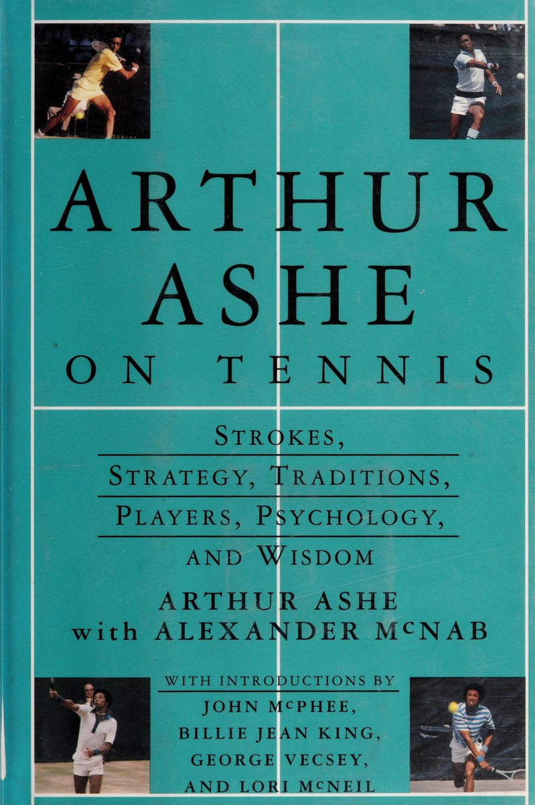
103 bài học chuyên sâu, sắp xếp lại theo 7 phần chuyên đề • Ấn bản tiếng Việt hoàn chỉnh • Tennis Unified 2026
Giới Thiệu Tác Giả: Arthur Ashe
Lời Tựa & Tưởng Nhớ
1. Lời Cảm Tạ Và Lời Giới Thiệu Của Alexander McNab — Alexander McNab (Biên tập viên Tạp chí Tennis) (#FW01)
Hoàn cảnh ra đời của cuốn sách và bài học sâu sắc nhất của Arthur Ashe về việc không bao giờ bỏ cuộc.
Ý tưởng về cuốn sách này nảy sinh khi tôi cùng Arthur Ashe rảo bước trên sân golf Winged Foot tại Mamaroneck, New York vào mùa thu năm 1990. Đi cùng chúng tôi hôm đó có Frank Hannigan, cựu giám đốc điều hành Hiệp hội Golf Hoa Kỳ (USGA) và cũng là bình luận viên của đài ABC Sports như Arthur. Sau khi trả lời xong những thắc mắc của Hannigan về cuốn sách kinh điển Levels of the Game viết về trận bán kết US Open 1968, Arthur quay sang tôi—người đã cộng tác viết chuyên mục hướng dẫn kỹ thuật suốt 11 năm cùng anh tại tạp chí Tennis—và nói giản dị: "Chúng ta nên làm một cuốn sách."
Ý định ban đầu của chúng tôi là để Arthur giải đáp những câu hỏi mà người hâm mộ và người chơi quần vợt thường xuyên đặt ra nhất cho anh. Chúng tôi đã tiến hành hàng chục giờ phỏng vấn chuyên sâu vào cuối năm 1991 và đầu năm 1992 để bắt đầu viết các chương. Sau đó, anh bắt tay vào hoàn thành cuốn hồi ký Những Ngày Ân Sủng (Days of Grace). Dẫu vậy, anh chưa từng ngừng suy nghĩ về cuốn sách chuyên môn này; anh liên tục trau chuốt từng ý tưởng. Trong cuộc trò chuyện cuối cùng giữa chúng tôi, anh tái khẳng định quyết tâm hoàn tất cuốn sách này ngay khi bản thảo hồi ký hoàn thành, cùng niềm khát khao mãnh liệt được nhìn thấy tác phẩm ra mắt công chúng.
Khi rời xa đấu trường đỉnh cao, Arthur vẫn luôn nắm bắt trọn vẹn từng nhịp đập của môn thể thao này. Anh không chỉ đóng vai trò bình luận viên sắc sảo cho đài ABC, HBO và cố vấn cho các hãng dụng cụ quần vợt, mà còn trực tiếp quan sát thực địa. Vào những ngày thi đấu đầu tiên tại Wimbledon, Roland Garros hay US Open, anh thường lặng lẽ đứng ở các cụm sân phụ để dõi theo những tài năng trẻ triển vọng. Anh quan sát các giải trẻ như Easter Bowl tại Miami, giữ liên lạc thường xuyên với các cựu đối thủ giờ đã trở thành huấn luyện viên chuyên nghiệp như Stan Smith hay Brian Gottfried, đàm đạo cùng những bộ óc thông thái như Pancho Segura, và lắng nghe ý kiến của các chuyên gia tiên phong như nhà tâm lý học thể thao Jim Loehr, nhà cơ sinh học Jack Groppel, cùng các bậc thầy huấn luyện Vic Braden và Dennis Van der Meer.
Là một người thầy quần vợt, Ashe luôn tôn vinh lối đánh cổ điển thanh thoát—những cú đánh mượt mà, chuẩn mực, không màu mè, đặc biệt là cú trái tay một tay mẫu mực. Những nguyên lý nền tảng của thế hệ anh vẫn là phương thuốc chuẩn xác nhất cho người chơi phong trào ở thập niên 1990 và mãi mãi về sau. Dẫu vậy, anh cũng thấu hiểu rằng có rất nhiều cách khác nhau để đưa một quả bóng qua lưới, và anh luôn là bậc thầy trong việc đúc kết những bài học quý giá từ lối đánh phá cách, bùng nổ của các ngôi sao trẻ đương đại để truyền dạy lại cho người chơi phong trào.
Tuy nhiên, bài học quần vợt thông tuệ và xúc động nhất mà tôi từng nghe từ Arthur lại không phải là câu trả lời về môn thể thao này. Đó là lời đáp khi có người hỏi làm thế nào anh có thể biến chuỗi biến cố y tế nghiệt ngã trong cuộc đời—những cơn nhồi máu cơ tim, những ca đại phẫu bắc cầu động mạch và cuộc chiến sinh tử với căn bệnh thế kỷ—thành những chiến dịch truyền cảm hứng tích cực và đầy sinh lực đến vậy. Lời đáp của anh vang vọng: "Một vận động viên thi đấu không bao giờ bỏ cuộc. Anh ta có thể cạn kiệt thời gian, nhưng anh ta tuyệt đối không bao giờ đầu hàng."
Đó là thái độ sống phi thường không chỉ biến chúng ta thành những tay vợt kiên cường hơn trên sân đấu, mà còn giúp chúng ta trở thành những con người cao thượng hơn trong cuộc đời.
Nguyên bản: “Acknowledgments and Preface” — The genesis of this book and Arthur Ashe's defining life philosophy: 'A competitive athlete never gives up. He may run out of time, but he never gives up.'
2. Tưởng Nhớ Arthur Ashe — John McPhee (Tác giả đoạt giải Pulitzer) (#FW02)
Khắc họa thần thái điềm tĩnh đến ma mị và tinh thần bất khuất của Arthur Ashe trước mọi nghịch cảnh số phận.
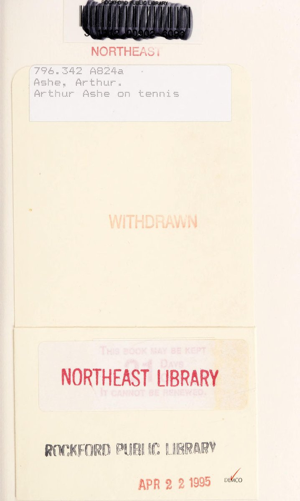
Anh từng miêu tả cuộc đời mình như "một chuỗi những hoàn cảnh may mắn tình cờ". Khi nói câu ấy, anh mới ngoài đôi mươi, nhưng hơn nửa đời người thực chất đã ở lại phía sau. Ký ức duy nhất của anh về người mẹ thân yêu chỉ đọng lại trong một hình ảnh ngắn ngủi: bà đứng nơi bậc cửa trong chiếc áo choàng nhung kẻ màu xanh, nhìn ra cụm sân quần vợt và bãi cỏ bao quanh ngôi nhà của họ ở trung tâm khu vui chơi Richmond. Kiệt sức vì bạo bệnh, bà được đưa vào bệnh viện ngày hôm đó và qua đời ở tuổi hai mươi bảy. Khi ấy, anh mới lên sáu.
Số phận trớ trêu như một định mệnh bi thương: cả thế giới đều biết rằng anh cũng phải bỏ lại đứa con gái bé bỏng của mình khi cô bé vừa tròn sáu tuổi. Cuộc đời anh bị giam cầm trong nghịch cảnh y khoa nghiệt ngã xuất phát từ căn bệnh tim di truyền, và cái chết đã tìm đến đón anh đi khi còn quá trẻ, hệt như người mẹ năm xưa.
Mẹ anh là một phụ nữ dáng người mảnh khảnh, mái tóc dài mềm mại cùng gương mặt thanh tú, hiền hậu. Bà đọc sách rất nhiều, và bà đọc sách cho anh nghe mỗi ngày. Cha anh thường kể về bà: "Bà ấy giống hệt như Arthur Con vậy. Chưa bao giờ cãi vã với ai. Lặng lẽ, dễ mến và giàu lòng nhân ái."
Nếu sự điềm đạm, không tranh cãi là di sản thừa hưởng từ mẹ, thì Arthur cũng được rèn giũa, dạy dỗ và huấn luyện nghiêm ngặt để tuyệt đối không tranh cãi trên sân đấu. Khi một mình bước vào lãnh địa xa lạ và đầy định kiến của môn thể thao quý tộc da trắng, anh đã biến sự "không tranh cãi" ấy thành một điều bí ẩn ma mị, và biến sự bí ẩn ấy thành một thứ vũ khí chết người. Khi thế trận trở nên căng thẳng nghẹt thở (như tôi từng ghi lại trong cuốn sách Levels of the Game), anh là người kiểm soát hoàn toàn cảm xúc. Ngay cả trong những thời khắc ngặt nghèo nhất, các đối thủ thường cảm thấy như thể Arthur đang đùa giỡn với họ. Họ không tài nào đoán được anh đang toan tính điều gì, cũng chẳng thể nhận biết anh có đang tức giận hay không. Đối đầu với anh là một trải nghiệm làm đối phương phát điên. Vốn là người thẳng thắn, anh từng bộc bạch rằng điều anh hài lòng nhất ở bản thân trên sân đấu chính là phong thái: "Đó là sự điềm tĩnh có kiểm soát. Luôn giữ thế chủ động trong mọi tình huống, ngay cả khi đang bị dẫn trước. Tuyệt đối không bao giờ để lộ cảm giác thất bại từ bên trong."
Và quả thực, anh chưa từng để lộ điều đó—không phải trong thời kỳ đỉnh cao danh vọng, không phải trong những năm tháng hoạt động xã hội kiệt xuất sau này, và cũng không phải trong những tàn cuộc nghiệt ngã cuối cùng của sinh mệnh. Nếu bạn muốn khắc ghi một hình ảnh tiêu biểu nhất về anh, hãy tưởng tượng một chàng trai đôi mươi, thân hình săn chắc như những búi dây cáp thép, nguồn năng lượng dồi dào dường như vô tận. Giữa một tình thế nguy khốn tưởng chừng không lối thoát trên sân bóng, tất cả những gì anh làm chỉ là đưa ngón tay trỏ lên gọng kính, nhẹ nhàng đẩy nó về đúng sống mũi. Trong gang tấc của hiểm nguy, anh tung đòn bão táp. Đứng trước sự lựa chọn giữa một cú trả bóng an toàn theo xác suất hay một cú nã đại bác hiểm hóc với tỷ lệ thành công chỉ một phần mười, anh luôn dứt khoát chọn cú nã đại bác.
Với phong cách đặc trưng không thể trộn lẫn, anh vươn cánh tay trái chỉ thẳng lên trời đón lấy quả bóng lốp đang rơi xuống, rồi tung cú đập smash như sấm sét kết liễu điểm số. Cú trái tay của anh uy lực chẳng kém gì cú thuận tay, và các đòn đánh từ cả hai phía phần lớn đều là những phát nổ xé gió. Nhưng trong những động tác vừa thanh thoát vừa dứt khoát ấy, với phản xạ nhanh nhạy vượt ngoài sức tưởng tượng, anh còn là bậc thầy của những cú bỏ nhỏ tinh quái, trò chơi mèo vờn chuột, những cú chạm bóng biến ảo và đặc biệt là cú demi-volley (half-volley) chéo sân nguy hiểm tột cùng. Những tay vợt khác có thể tự hỏi ai là kẻ điên rồ dám mạo hiểm như thế, nhưng đó chính là cách Arthur Ashe chơi quần vợt: ở thời khắc căng thẳng tột độ nhất, anh luôn nhắm tới những điều dường như bất khả thi.
Anh là người khó đoán định một cách hoàn toàn nhất quán. Sau vẻ mặt vô cảm, sau cặp kính bí ẩn, chiếc cằm ngẩng cao và thần thái kiêu hãnh của một viên thuyền phó trên đài chỉ huy—dường như vẫn luôn thấp thoáng một nụ cười kín đáo, ngạo nghễ trước mọi thử thách.
Nguyên bản: “Arthur Ashe Remembered” — John McPhee's Pulitzer-caliber tribute portraying Arthur Ashe's enigmatic controlled cool, unflinching courage under pressure, and mastery over adversity.
3. Tay Vợt Huyền Thoại — Billie Jean King (Huyền thoại đoạt 39 danh hiệu Grand Slam) (#FW03)
Góc nhìn sâu sắc của Billie Jean King về sự nghiệp thi đấu, sự tiến hóa trong tư duy và chiến thắng Wimbledon 1975 lịch sử của Ashe.
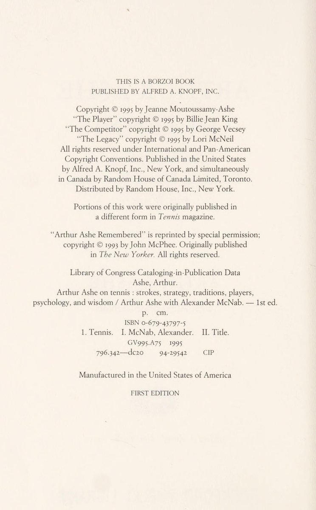
Arthur Ashe đã truyền cảm hứng. Anh đã chỉ dạy chúng tôi. Tất cả chúng tôi đều lắng nghe mỗi khi anh lên tiếng. Anh đã tận dụng quần vợt để phụng sự những mục đích cao cả hơn cho xã hội, điều mà rất nhiều tay vợt khác không làm được. Anh thực sự đã tạo nên sự khác biệt.
Ngay cả trong những năm tháng thi đấu đỉnh cao, Arthur không bao giờ bó hẹp tầm nhìn của mình trong phạm vi bốn góc sân đấu như nhiều tay vợt trẻ ngày nay. Anh không chỉ là một vận động viên thuần túy; anh là một con người luôn tìm kiếm chân lý và không ngừng suy ngẫm về thế giới xung quanh.
Tôi và Arthur sinh cùng năm 1943. Lần đầu tiên tôi đọc những bài báo viết về anh là khi anh đang ở St. Louis để tập luyện quần vợt mùa đông trên sân trong nhà, dưới sự chỉ dẫn của bác sĩ Robert Walter Johnson. Sau đó anh đến Nam California thi đấu cho UCLA và giành cú đúp vô địch đơn và đôi giải sinh viên toàn nước Mỹ (NCAA) năm 1965. Lối chơi của Arthur vô cùng bùng nổ. Quả giao bóng và cú đánh trái tay của anh là những tuyệt tác kỹ thuật mẫu mực. Nhịp điệu giao bóng của anh thật kỳ diệu, và bộ chân khi giao bóng rất khác biệt: anh lùi một bước lấy đà rồi lướt nhẹ lên sát vạch vôi khi vung vợt.
Khoảnh khắc vĩ đại nhất trong sự nghiệp thi đấu của chúng tôi giao nhau vào năm 1975 tại giải quần vợt Wimbledon. Chứng kiến anh nâng cao chiếc cúp vô địch đơn nam một ngày sau khi tôi đăng quang nội dung đơn nữ là một cảm xúc vô cùng đặc biệt. Sau khi giành match point trước Jimmy Connors kiêu hãnh, Arthur quay lại khán đài dành cho vận động viên, ngước nhìn lên và giơ nắm đấm về phía người bạn kiêm luật sư thân thiết Donald Dell. Đó là khoảnh khắc hiếm hoi thế giới được nhìn thấy Arthur bộc lộ trọn vẹn cảm xúc mãnh liệt bên trong con người mình.
Điều tuyệt vời nhất là Arthur đã chiến thắng trận chung kết lịch sử ấy bằng một đấu pháp hoàn toàn đi ngược lại bản năng cố hữu của anh. Vốn dĩ là một tay vợt ưa thích đập bóng phẳng thật mạnh và xé gió, anh đã dũng cảm rời khỏi vùng an toàn để chuyển sang Kế hoạch B: anh tung ra những quả giao bóng slice xoáy ngang kéo rộng góc sân, ép Connors phải nhoài người hết cỡ bằng cú trái hai tay, đồng thời liên tục tung ra những cú cắt chip mềm mại, trượt thấp sát đất vào góc thuận tay của Jimmy. Thi triển một đấu pháp trái ngược sở trường trong một trận chung kết Wimbledon là điều phi thường. Đó là trận đấu vĩ đại không chỉ vì anh đã đánh bại kẻ bất khả chiến bại, mà bởi vì cách anh đã tư duy và chế ngự trận đấu bằng trí tuệ tuyệt đỉnh.
Arthur có một tình yêu tôn kính đối với Wimbledon. Tôi nhớ có năm anh dẫn con gái nhỏ Camera đến đó. Anh nắm tay con rảo bước qua từng cụm sân, kể cho cô bé nghe về những trận đánh kinh điển và ý nghĩa thiêng liêng của vùng đất này. Đó là cách anh truyền lại ngọn lửa di sản cho thế hệ tương lai.
Arthur mang đến cho thế giới bên ngoài quần vợt vô vàn điều tốt đẹp, và anh thực hiện sứ mệnh ấy bằng sự thanh tao và nhân cách cao quý bậc nhất. Đó chính là điều tạo nên một Arthur Ashe bất tử.
Nguyên bản: “The Player” — Billie Jean King honors Arthur Ashe's tennis brilliance, tactical mastery over Jimmy Connors at Wimbledon 1975, and lifelong fight for civil rights.
4. Đấu Thủ Ngoan Cường — George Vecsey (Cây bút thể thao kỳ cựu của The New York Times) (#FW04)
Hành trình vượt qua định kiến chủng tộc khắt khe và sự thăng hoa của một thiên tài thi đấu tự do trên sân đấu.
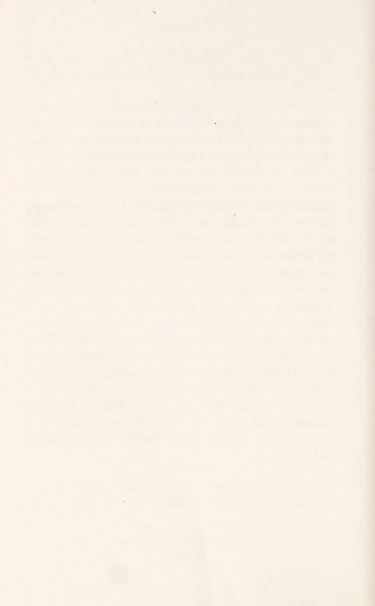
Làm Arthur Ashe chưa bao giờ là một điều dễ dàng. Anh được trời phú cho tư chất thông minh vượt trội nhưng lại phải gánh trên vai những kỳ vọng khổng lồ của cả một cộng đồng. Trong những năm tháng đầu đời, nơi duy nhất mà Arthur cảm thấy mình thực sự được tự do bay bổng, được thử nghiệm sự sáng tạo và trí tò mò tuổi trẻ chính là giữa những trận đấu quần vợt khốc liệt. Anh tung ra những cú đánh mạo hiểm ăn điểm nhiều hơn mức mà các nhà chuyên môn thời bấy giờ cho là khôn ngoan. Sự độc lập ấy từng bị những kẻ định kiến hiểu lầm, nhưng thực chất đó chính là sự khám phá của một thiên tài đích thực.
Arthur không phải là một kẻ nổi loạn trong đời thường. Cha anh—một con người phi thường đã tạo dựng giang sơn nhỏ bé của riêng mình giữa sự phân biệt chủng tộc hà khắc của miền Nam nước Mỹ—đã dạy anh rất nghiêm ngặt rằng không bao giờ được phép mạo hiểm thể xác hay tinh thần một cách vô ích. Nơi duy nhất Arthur thoát khỏi mọi xiềng xích của những lời chỉ bảo, sự kỳ vọng của xã hội và sự soi mói của giới truyền thông chính là sân quần vợt. Ở đó, anh là chủ nhân tối cao của chính mình.
Trận đấu để đời làm nên tên tuổi Arthur Ashe mãi mãi là chung kết Wimbledon 1975 trước Jimmy Connors trẻ tuổi, hung hăng và tàn nhẫn. Năm ấy Arthur đã 31 tuổi. Trước trận đấu, anh cùng cựu đội trưởng Davis Cup Dennis Ralston và người đại diện Donald Dell đã thảo luận một chiến lược mang tính cách mạng: Bạn không thể chỉ đơn thuần thi đấu đọ sức với Connors; bạn phải chơi trò chơi tâm lý với anh ta. Điểm phong cách không có ý nghĩa gì trước một cỗ máy đập bóng bão táp như Connors. Arthur cam kết tuyệt đối với đấu pháp làm đối thủ mất thăng bằng: tung những cú chip mềm mại đưa bóng ra góc rộng, đổi hướng liên tục và không cho Connors mượn lực. Kết quả là Connors hoàn toàn bị ức chế tâm lý và thất bại cay đắng.
Sau này, khi đã bước vào tuổi xế chiều của sự nghiệp, Arthur vẫn có những khoảnh khắc bùng nổ kỳ diệu. Dù cơ thể dần suy sụp bởi các cơn đau tim rồi sau này là căn bệnh thế kỷ, anh vẫn để lại một di sản trường tồn: đó là câu chuyện về một chàng trai da màu kiên cường đã dám thử nghiệm, dám vượt qua giới hạn trên sân đấu nơi không một ai có thể ngăn cản bước chân anh.
Nguyên bản: “The Competitor” — George Vecsey analyzes the unique pressures on Arthur Ashe, his rebellion through creativity on court, and his signature tactical masterpiece against Jimmy Connors.
5. Di Sản Vĩ Đại — Lori McNeil (Cựu tay vợt nữ Top 10 thế giới) (#FW05)
Hồi ức xúc động của Lori McNeil về người thầy, người ngọn hải đăng soi đường cho các thế hệ tay vợt thiểu số.
Mọi chuyện bắt đầu vào mùa thu năm 1973 tại công viên MacGregor Park ở Houston. Mẹ tôi đã phát hiện ra một chương trình quần vợt trẻ do huấn luyện viên John Wilkerson dẫn dắt—một người da màu trẻ tuổi xem quần vợt như lẽ sống và tôn giáo của mình. Wilkerson là môn đệ trung thành nhất của một người mà sau này tôi biết là 'bậc thầy tối thượng': Arthur Ashe.
Ở MacGregor Park, quần vợt chính là cuộc sống. Quần vợt được dùng như một câu chuyện ngụ ngôn cho cuộc đời. Nếu có điều gì trắc trở xảy ra trên sân hay ngoài đời, luôn có một bài học quần vợt được rút ra. Chúng tôi được dạy phải luôn trung thực, tận tụy, nhiệt huyết và không sợ hãi. Để đạt được điều đó, chúng tôi noi gương và học tập Arthur Ashe. Ban đầu, lũ trẻ chúng tôi bắt chước một cách ngây thơ bằng cách đeo chiếc vòng cổ vỏ ốc giống hệt chiếc vòng Arthur thường đeo. Chúng tôi luôn tự hỏi: 'Arthur sẽ nói gì và Arthur sẽ làm gì trong tình huống này?'
Năm 1975, Arthur ghé thăm công viên MacGregor Park sau một giải đấu. Anh trực tiếp tiếp bóng cho từng đứa trẻ chúng tôi. Hình ảnh anh cao ráo, nước da ngăm khỏe khoắn, thanh lịch trong bộ đồ trắng tinh tươm xuất hiện như một vị thần. Trong một môn thể thao hầu như không có bóng dáng người da màu, Arthur chính là ngọn hải đăng, là hình mẫu để tất cả chúng tôi—dù là nam hay nữ—bám víu vào ước mơ của mình.
Mùa hè năm ấy, chúng tôi quây quần bên chiếc tivi theo dõi trận chung kết Wimbledon giữa Arthur và Jimmy Connors. Nhìn anh bước ra sân đấu Trung tâm, điềm đạm và kiểm soát trọn vẹn bản thân, rồi giương cao chiếc cúp vô địch, khoảnh khắc ấy đã vĩnh viễn in sâu vào tâm khảm tôi.
Sau này khi tôi đã trở thành tay vợt chuyên nghiệp, Arthur vẫn luôn dõi theo và khích lệ tôi. Khi tôi đánh bại Steffi Graf tại giải Virginia Slims Championships ở Madison Square Garden năm 1992, anh đã đến bên tôi và nhắc nhở: 'Làm tốt lắm, nhưng hãy luôn tiếp tục chăm chỉ và cống hiến hết sức mình.' Những ký ức về Arthur lại ùa về mãnh liệt khi tôi đánh bại chính Steffi Graf ở vòng 1 Wimbledon năm 1994 ngay trên sân Trung tâm huyền thoại—nơi anh từng làm nên lịch sử năm 1975.
Tôi nhận ra rằng lý do người ta tôn kính Arthur không chỉ bởi vì anh đã làm chủ môn thể thao này, mà bởi vì anh đã chiến thắng thử thách vĩ đại nhất của đời người: Anh đã làm chủ chính bản thân mình. Trí tuệ tỉnh thức của anh đã kiểm soát hoàn toàn nỗi sợ hãi và cảm xúc cá nhân.
Arthur Ashe đã trao hy vọng cho cả một thế hệ những người từng không có lấy một tia lửa để thắp sáng ước mơ. Anh kiên nhẫn, quả cảm, trung thành với lý tưởng ngay cả trong những thời khắc nghiệt ngã nhất của số phận. Anh đã chiến thắng, anh đã làm chủ chính mình, và để lại một di sản về lòng dũng cảm bất diệt cho toàn nhân loại.
Nguyên bản: “The Legacy” — Lori McNeil reflects on how Arthur Ashe served as a beacon of hope and self-mastery for inner-city youth and minority athletes worldwide.
Kỹ Thuật Đòn Đánh
1. Hình Mẫu Lý Tưởng Để Noi Theo (#S01)
Tại sao bạn không nên sao chép mù quáng phong cách của các siêu sao có thể hình hoặc năng khiếu dị biệt.
Khi tôi còn là một cậu bé lớn lên ở Richmond, Virginia, hình mẫu lý tưởng của tôi là Ricardo "Pancho" Gonzales. Ông ấy sở hữu một cú giao bóng uy lực, lối di chuyển thanh thoát như loài báo đốm và một tinh thần thi đấu dữ dội. Nhưng tôi nhanh chóng nhận ra rằng mình không thể đơn thuần sao chép Gonzales: ông ấy cao 1m90, cơ bắp cuồn cuộn, trong khi tôi gầy gò và mảnh khảnh.
Bài học đầu tiên cho mọi người chơi: Hãy tìm kiếm những hình mẫu có vóc dáng, sức mạnh và phong cách tương đồng với bản thân bạn. Nếu bạn có chiều cao khiêm tốn, đừng cố giao bóng như Boris Becker; hãy học cách di chuyển, cắt bóng và phản xạ của Ken Rosewall hay Michael Chang. Nếu bạn có thân hình mảnh khảnh, hãy học lối chơi đòn bẩy và nhịp điệu mượt mà thay vì cố gồng mình đập bạt như một lực sĩ.
Nguyên bản: “Role Models” — Choose role models whose physical attributes and natural strengths match your own. Imitating a champion whose body type is radically different from yours will only lead to frustration and technical breakdown.
2. Đo Ni Đóng Giày Lối Chơi Theo Thể Hình Của Bạn (#S02)
Thiết kế chiến thuật và kỹ thuật phù hợp với ưu thế và hạn chế tự nhiên của cơ thể.
Trong quần vợt hiện đại, người ta thường ca ngợi sức mạnh cơ bắp. Nhưng sự thật là: một người chơi thông minh luôn biết cách tối đa hóa những gì tạo hóa ban cho mình.
Nếu bạn cao lớn, ưu thế lớn nhất của bạn là góc phát bóng cắm và tầm với bao quát trên lưới. Hãy phát triển lối chơi giao bóng lên lưới (serve-and-volley). Ngược lại, nếu bạn nhỏ con hơn, trọng tâm cơ thể bạn thấp hơn, giúp bạn đổi hướng cực nhanh và di chuyển bộ chân linh hoạt hơn bất kỳ ai. Hãy biến mình thành một bức tường kiên cố ở vạch cuối sân, sở hữu những cú trả giao bóng sắc bén và khả năng phản công chớp nhoáng.
Nguyên bản: “Tailor Your Game to Your Size” — Tall players should exploit their height with aggressive serving angles and net dominance. Shorter players possess a lower center of gravity and superior agility; they should build relentless baseline consistency and counter-punching speed.
3. Kiểu Cầm Vợt Thuận Tay Eastern Bất Khả Bại (#S03)
Nền tảng vững chắc nhất cho một cú thuận tay ổn định trong mọi điều kiện thi đấu.
Kiểu cầm vợt Eastern forehand (cách cầm vợt số 3) là cách cầm vợt cổ điển và an toàn nhất trong lịch sử quần vợt. Để tìm kiểu cầm này, chỉ cần đặt lòng bàn tay phẳng lên mặt lưới của cây vợt, rồi trượt thẳng bàn tay xuống cán vợt và nắm lại tự nhiên như một cái bắt tay thân thiện.
Ưu điểm tuyệt đối của kiểu cầm Eastern là tính linh hoạt: bạn có thể đánh bạt phẳng (flat) xuyên qua bóng khi cần tấn công dứt điểm, hoặc vuốt nhẹ từ dưới lên để tạo topspin vừa phải, hay cắt nhẹ bóng khi bị ép. Điểm tiếp xúc bóng lý tưởng là ngang hông và cách phía trước chân dẫn đường khoảng 30 cm. Đây là kiểu cầm vợt giúp bạn tự tin tuyệt đối trước mọi tốc độ bóng.
Nguyên bản: “The Fail-Safe Eastern Forehand Grip” — The Eastern forehand grip is the bedrock of tennis fundamentals. It allows you to hit flat penetrating drives or controlled topspin while providing the most natural and versatile contact zone in the game.
4. Kiểu Cầm Vợt Thuận Tay Semi-Western Hiện Đại (#S04)
Vũ khí tối thượng để tạo độ xoáy cuộn cắm sân và chế ngự bóng nảy cao.
Khi mặt sân ngày càng nảy cao hơn và lực đánh của các đối thủ ngày càng nặng, kiểu cầm Semi-Western (cách cầm số 4) đã trở thành vũ khí phổ biến. Bằng cách dịch khớp gốc ngón trỏ xuống cạnh đáy xiên của cán vợt, mặt vợt sẽ tự nhiên đóng nhẹ khi hạ thấp xuống dưới bóng.
Semi-Western cho phép bạn vuốt mạnh từ dưới lên trên lưng quả bóng với gia tốc tối đa, tạo ra vòng cung topspin an toàn vượt qua mép lưới rồi cắm phập xuống trong sân. Điểm tiếp xúc bóng của Semi-Western cao hơn (ngang ngực) và hơi gần thân mình hơn so với Eastern. Nếu bạn thường xuyên thi đấu trên sân cứng nảy cao hoặc sân đất nện, đây là kiểu cầm vợt bạn bắt buộc phải làm quen.
Nguyên bản: “The Semi-Western Forehand Grip” — The Semi-Western grip is ideal for generating heavy topspin and handling high-bouncing balls on hard and clay courts. It gives you a tremendous safety margin over the net with aggressive dip.
5. Bước Di Chuyển Đầu Tiên: Xoay Vai Đồng Khối (#S05)
Bí mật của việc không bao giờ bị muộn bóng: Xoay vai ngay khi bóng rời vợt đối phương.
Phần lớn người chơi nghiệp dư đều mắc một sai lầm chết người: họ đứng nhìn quả bóng bay qua lưới, đợi nó nảy xuống đất rồi mới vội vã đưa cánh tay ra sau để mở vợt. Đó là lý do họ luôn tiếp xúc bóng muộn ra sau người và đánh bóng cạch khung.
Bước di chuyển đầu tiên (The First Move) không phải là vung tay, mà là xoay toàn bộ khối vai và hông (unit turn) ngay trong tích tắc quả bóng rời khỏi mặt vợt của đối phương. Bằng cách xoay trục vai vuông góc với lưới, cây vợt của bạn sẽ tự động được đưa ra sau vào tư thế sẵn sàng mà bạn thậm chí không cần nghĩ đến việc đưa cánh tay ra sau. Khi chân bạn chạm đất ở vị trí đón đánh, cây vợt đã hoàn toàn sẵn sàng lao về phía trước.
Nguyên bản: “The First Move” — The first move on any groundstroke is the unit turn of your shoulders and hips the instant the ball leaves the opponent's racquet. Early shoulder preparation guarantees you never get jammed or hit late.
6. Kéo Trễ Đầu Vợt: Nguồn Gốc Của Sức Mạnh Vung Roi (#S06)
Cách tạo gia tốc đầu vợt tối đa mà không cần gồng cơ bắp cánh tay.
Nếu bạn muốn quả bóng bay đi với vận tốc xé gió mà cánh tay vẫn hoàn toàn thả lỏng, bạn phải hiểu khái niệm 'kéo trễ đầu vợt' (Drag the Racquet Head hay Lag).
Khi bắt đầu vung vợt về phía trước, hãy dẫn đường bằng đáy chuôi cán vợt (butt cap) hướng thẳng về phía quả bóng. Cổ tay thả lỏng tự nhiên sẽ khiến đầu vợt bị trễ lại phía sau cẳng tay. Chỉ đến một phần mười giây trước khi tiếp xúc, toàn bộ động lượng tích trữ sẽ bung ra như một cú quất roi, giải phóng đầu vợt lao vụt qua điểm tiếp xúc với vận tốc bùng nổ. Đừng cố gồng cơ bắp để đẩy quả bóng; hãy để đòn bẩy vật lý làm việc thay cho bạn.
Nguyên bản: “Drag the Racquet Head” — Lead your forward swing with the butt cap of the racquet, letting the racquet head lag behind. This creates an elastic whip-like acceleration through the hitting zone without muscular tension.
7. Topspin: Định Luật Vượt Lưới An Toàn (#S07)
Tại sao topspin là bảo hiểm sinh mạng cho những tay vợt muốn đánh bóng uy lực.
Nhiều người lầm tưởng rằng topspin là một chiêu trò hoa mỹ. Thực chất, topspin là sự an toàn tuyệt đối. Khi bạn đánh một quả bóng phẳng không xoáy với tốc độ 120 km/h, biên độ sai số qua mép lưới của bạn chỉ là vài centimet: cao hơn một chút bóng sẽ ra ngoài, thấp hơn một chút bóng sẽ rúc lưới.
Nhưng với topspin nặng, hiệu ứng khí động học Magnus sẽ kéo quả bóng cắm xuống mặt sân một cách dữ dội. Điều này cho phép bạn nhắm bóng bay cao hơn mép lưới từ 60 cm đến cả mét với toàn bộ lực vung vợt mạnh nhất, mà quả bóng vẫn luôn rơi an toàn vào trong vạch cuối sân. Hãy bắt đầu từ dưới quả bóng ít nhất 20 cm, chải vút lên trên lưng bóng và theo đà quàng cao qua vai.
Nguyên bản: “Topspin: The Law of Net Clearance” — Topspin is not an ornament; it is tennis insurance. The Magnus effect pulls the ball down into the court, allowing you to hit with aggressive velocity while clearing the net by two to three safe feet.
8. Trái Một Tay Đối Đầu Trái Hai Tay: Lựa Chọn Nào Cho Bạn? (#S08)
Phân tích ưu nhược điểm cơ sinh học của hai trường phái trái tay kinh điển.
Đây là câu hỏi muôn thuở của người chơi quần vợt. Mỗi bên đều có những thế mạnh tuyệt đối:
- Cú trái một tay (One-handed backhand): Mang lại tầm với rộng hơn, chuyển đổi sang cú cắt slice và cú bắt volley trên lưới vô cùng mượt mà không cần đổi bộ tay. Nó tạo ra những đường bóng vung dài thanh thoát và uy lực cực lớn khi bóng ở tầm ngang thắt lưng. Tuy nhiên, nó đòi hỏi sức mạnh cẳng tay đáng kể và rất khó xử lý những quả bóng nảy cao trên vai. - Cú trái hai tay (Two-handed backhand): Cung cấp sự vững chãi phi thường trước những quả bóng nặng và trả giao bóng. Cánh tay không thuận đóng vai trò như một cú thuận tay trợ lực, giúp bạn dễ dàng đè bóng nảy cao và ngụy trang hướng đánh đến phút chót. Nhưng tầm với bị thu hẹp, đòi hỏi bạn phải di chuyển bộ chân nhiều hơn.
Lời khuyên của tôi: Hãy lắng nghe cảm nhận tự nhiên của cơ thể. Nếu bạn thấy thoải mái với hai tay, hãy phát triển nó; nhưng hãy luôn học thêm cú cắt một tay để phòng thủ và lên lưới.
Nguyên bản: “One-Handed vs. Two-Handed Backhands” — The one-handed backhand offers superior reach, effortless transition to slice and volleys, and classic extension. The two-handed backhand provides exceptional stability on returns and high balls. Master the one that fits your body, but always maintain a one-handed slice.
9. Cú Cắt Bóng Cơm Áo Gạo Tiền (The Bread-and-Butter Slice) (#S09)
Vũ khí sinh tồn và thay đổi nhịp điệu quan trọng bậc nhất trong túi đồ nghề của bạn.
Nếu phải chọn một cú đánh cứu mạng tôi nhiều nhất trong suốt sự nghiệp thi đấu, từ các giải Grand Slam cho đến cúp Davis, đó chính là cú cắt bóng (slice backhand).
Cú cắt không cần tốn nhiều thể lực nhưng mang lại giá trị chiến thuật khổng lồ: nó giữ bóng bay là là mặt đất, triệt tiêu tốc độ của đối thủ, ép họ phải khuỵu gối đánh bóng hướng lên và tạo thời gian cho bạn hồi phục vị trí. Chuẩn bị vợt ở tầm cao ngang tai, bước chân vào sân, miết cạnh đáy vợt từ trên xuống dưới và xuyên qua bóng với cổ tay khóa chặt như một nhát chém kiếm đạo sắc lẹm.
Nguyên bản: “The Bread-and-Butter Slice” — The slice backhand is the ultimate workhorse shot. It stays low, neutralizes heavy pace, buys you recovery time, and forces aggressive opponents to lift the ball up to your waiting volleys.
10. Khóa Bờ Vai Hướng Thẳng Vào Mục Tiêu (#S10)
Chìa khóa then chốt để kiểm soát hướng đánh và độ chính xác của cú trái tay.
Trong cú đánh trái tay một tay, bờ vai dẫn đường chính là thước ngắm của bạn. Khi quả bóng bay tới, hãy xoay người cho đến khi bờ vai trước chỉ thẳng vào mục tiêu bạn muốn đưa bóng đến.
Quan trọng hơn: hãy giữ cho bờ vai đó đóng kín trong suốt quá trình tiếp xúc bóng. Nếu bạn mở vai quá sớm hướng về phía lưới, toàn bộ lực đánh sẽ bị kéo lệch sang bên và quả bóng sẽ bay ra ngoài hành lang biên. Hãy duỗi thẳng cánh tay không cầm vợt ra phía sau để làm đối trọng, giữ cho trục vai cố định cho tới khi bóng đã bay xa khỏi mặt lưới.
Nguyên bản: “Point Your Shoulder” — Your lead shoulder is your aiming sight on the backhand. Keep your shoulder pointed at your target through contact, using your non-hitting arm as a counter-balance to prevent premature opening.
11. Kỹ Thuật Tung Bóng Và Nhịp Điệu Giao Bóng Chuẩn Xác (#S11)
Giao bóng uy lực bắt đầu từ một cánh tay tung bóng tĩnh tại và điểm rơi nhất quán.
Cú giao bóng là cú đánh duy nhất trong môn quần vợt mà bạn hoàn toàn kiểm soát quả bóng trước khi đánh. Không ai cản trở bạn, không ai ép bạn. Thế nhưng hầu hết mọi người lại tự hủy hoại mình bằng cú tung bóng cẩu thả.
Hãy cầm bóng bằng các đầu ngón tay như cầm một chiếc cốc nước đầy mà không làm sánh ra ngoài. Nâng cánh tay lên thẳng từ khớp vai, nhả bóng ở ngang tầm mắt. Điểm rơi lý tưởng của quả bóng phải ở hướng 1 giờ (11 giờ cho người thuận tay trái), cách phía trước vạch giao bóng khoảng 30-45 cm vào trong sân. Khi bạn tung bóng chuẩn xác vào đúng một điểm duy nhất, toàn bộ nhịp điệu vung vợt và sức bật của cơ thể sẽ hòa làm một.
Nguyên bản: “The Service Toss and Timing” — Hold the ball gently with your fingertips and lift it smoothly with a straight arm from the shoulder. Place the toss consistently at 1 o'clock, slightly inside the baseline, to synchronize your kinetic chain.
12. Tận Dụng Tối Đa Quyền Năng Của Người Giao Bóng (#S12)
Đừng coi giao bóng chỉ là việc đưa bóng vào cuộc; hãy biến nó thành đòn phủ đầu chiến lược.
Quyền giao bóng là lợi thế chiến lược lớn nhất trong quần vợt. Người giao bóng là người phát động cuộc chiến và có quyền lựa chọn tốc độ, độ xoáy và vị trí quả bóng.
Đừng bao giờ bước lên vạch giao bóng mà chưa có một kế hoạch rõ ràng trong đầu. Hãy tự hỏi: Điểm yếu của đối thủ ở đâu? Họ đang đứng lệch sang bên nào? Họ phản ứng ra sao trước quả giao bóng xoáy nảy vào thân người? Một cú giao bóng thông minh có điểm rơi hiểm hóc với tốc độ 140 km/h luôn nguy hiểm hơn một cú nã đại bác 180 km/h bay thẳng vào tầm tay thuận của đối phương.
Nguyên bản: “Use the Serving Advantage” — Never serve without a tactical blueprint. Superior placement, variety of spin, and targeting the receiver's uncomfortable zones are vastly more effective than raw, predictable power.
13. Kỹ Thuật Bắt Volley Và Cú Volley Đầu Tiên Quyết Định (#S13)
Làm chủ khu vực lưới bằng những cú chạm bóng gọn gàng và bản lĩnh xử lý cú volley đầu tiên.
Trên lưới, thời gian phản xạ chỉ tính bằng phần mười giây. Bạn không có thời gian để mở vợt rộng. Cú volley chuẩn mực là một cú đấm xỉa bóng (punch): đầu vợt luôn cao hơn cổ tay, mặt vợt dựng vững chãi, và bạn bước chân đối diện chéo qua để đón bóng ở phía trước mặt.
Đặc biệt, cú volley đầu tiên (The First Volley) sau khi bạn từ vạch cuối sân lao lên là cú đánh mang tính sống còn. Đừng cố dứt điểm ăn điểm ngay ở cú volley đầu tiên này vì bạn thường phải đánh ở vị trí gần vạch giao bóng khi bóng còn đang chìm thấp. Hãy đánh một cú volley sâu, an toàn vào góc sân đối phương, giữ thế chủ động rồi tiếp tục tiến thêm hai bước áp sát lưới để kết liễu ở cú volley thứ hai.
Nguyên bản: “The Volley and the First Volley” — At the net, compact punch volleys with a locked wrist are mandatory. On your first transition volley, prioritize deep placement over outright winners, closing in tight to finish on the second volley.
14. Cú Nửa Volley: Đón Bóng Ngay Khi Vừa Nhú Nảy (#S14)
Kỹ năng thoát hiểm tuyệt mỹ khi quả bóng rơi ngay sát mũi chân bạn.
Cú nửa volley (half-volley) là khoảnh khắc quả bóng chạm đất và bạn tiếp xúc ngay khi nó vừa nảy lên không quá 5 cm. Đây là cú đánh thường xảy ra khi bạn đang trên đường tiến lên lưới và bị đối thủ xỉa bóng vào chân.
Quy tắc vàng của cú nửa volley: Khuỵu gối thật sâu, hạ thấp trọng tâm như một vận động viên bóng chày bắt bóng lăn. Cố định hoàn toàn cổ tay, không được vung vợt; chỉ cần đưa mặt vợt mở nhẹ vào đúng đường bóng nảy và để quán tính của bóng tự bật ngược trở lại qua lưới.
Nguyên bản: “The Half Volley” — Stay extraordinarily low, bend your knees into a deep crouch, lock your wrists, and let the ball rebound softly off your open racket face right off the bounce.
15. Cú Đập Bóng Trên Cao (Overhead Smash): Đòn Dứt Điểm Sấm Sét (#S15)
Nguyên tắc định vị cơ thể, ngắm bóng và kết thúc pha bóng bổng.
Cú smash là cú đánh kết liễu dứt khoát nhất trong môn quần vợt. Nhưng rất nhiều người chơi nghiệp dư lại run sợ trước những quả bóng lốp bổng trên trời.
Bí quyết để không bao giờ đánh hỏng cú smash: 1. Ngay khi đối thủ lốp bóng, lập tức xoay nghiêng người vuông góc với lưới. 2. Giơ cánh tay không cầm vợt thẳng lên trời, dùng ngón tay trỏ chỉ thẳng vào quả bóng đang rơi để khóa đường ngắm. 3. Di chuyển bằng những bước chân trượt ngang hoặc bước chéo lùi lại để cơ thể luôn ở phía sau quả bóng. 4. Vung vợt nện cắm quả bóng xuống như một cú giao bóng uy lực tại điểm cao nhất của tầm với.
Nguyên bản: “The Overhead Smash” — Turn sideways immediately, point at the falling ball with your non-hitting hand to lock in your sightline, retreat with cross-steps, and strike at full extension like a downward hammer.
16. Cú Lốp Bóng Phòng Thủ Và Cú Lốp Topspin Tấn Công (#S16)
Hai thái cực của nghệ thuật đưa quả bóng vượt qua đầu đối thủ trên lưới.
Cú lốp bóng có hai bộ mặt hoàn toàn khác biệt:
- Cú lốp phòng thủ (Defensive Lob): Sử dụng khi bạn bị ép dạt ra ngoài biên và mất thăng bằng. Hãy mở mặt vợt, dùng cổ tay vững chắc đẩy quả bóng bổng thật cao lên không trung (cao 6-8 mét) về sâu cuối sân. Độ cao này sẽ cho bạn 3 đến 4 giây quý báu để thở và chạy về giữa sân tái lập phòng tuyến. - Cú lốp tấn công (Offensive Lob): Vũ khí hủy diệt khi đối thủ đang áp sát rào lưới. Bạn giả vờ chuẩn bị một cú bạt passing cực mạnh, nhưng vào tích tắc cuối cùng, bạn hạ đầu vợt và vuốt vút lên lưng bóng tạo topspin cuộn nhanh. Quả bóng chỉ bay cao vừa đủ vượt khỏi tầm với của đối thủ rồi cắm phập xuống sân và nảy vọt ra xa.
Nguyên bản: “The Defensive and Offensive Lob” — The defensive lob buys time with towering height; the offensive topspin lob disguises itself as a drive before arching sharply over the net rusher's head and kicking away for clean winners.
17. Phân Biệt Rõ Ràng Giữa Kỹ Thuật (Strokes) Và Đòn Đánh (Shots) (#S17)
Kỹ thuật là cách bạn vung vợt; Đòn đánh là tư duy chiến lược bạn gửi gắm vào đường bóng.
Một trong những bài học sâu sắc nhất tôi muốn truyền lại: Có một sự khác biệt rất lớn giữa 'Stroke' (Cú vung vợt kỹ thuật) và 'Shot' (Đòn đánh chiến thuật).
Một cú vung vợt kỹ thuật thuần túy chỉ là chuyển động cơ học: cách bạn mở vợt, cách bạn tiếp xúc và theo đà. Bạn có thể có những cú vung vợt đẹp như trong sách giáo khoa nhưng vẫn thua trận liểng xiểng. Một 'đòn đánh' thực thụ đòi hỏi trí tuệ: nó là việc bạn chọn điểm rơi nào, độ xoáy gì, tốc độ bao nhiêu và nhằm vào vị trí nào của đối thủ trong bối cảnh cụ thể của điểm số đó. Hãy ngừng việc chỉ đánh bóng; hãy bắt đầu chơi cờ thế trên sân quần vợt!
Nguyên bản: “Strokes vs. Shots” — A stroke is mere biomechanical execution; a shot is a tactical decision with intention, spin, depth, and court geometry. Great champions win with superior shots, not just textbook strokes.
18. Cú Giao Bóng Hai Đáng Tin Cậy: Nền Tảng Của Sự Tự Tin (#S18)
Bạn chỉ thực sự giỏi bằng quả giao bóng hai của chính mình.
Có một câu châm ngôn kinh điển trong giới chuyên nghiệp: 'Đẳng cấp của một tay vợt được đo bằng quả giao bóng hai'. Bất kỳ ai cũng có thể thỉnh thoảng nã một quả giao bóng một ăn may. Nhưng khi tỷ số là 30-40 hay trong loạt tiebreak căng thẳng, quả giao bóng hai mới là thứ phơi bày bản lĩnh thực sự của bạn.
Đừng bao giờ giao bóng hai bằng cách rụt rè đẩy nhẹ quả bóng qua lưới! Một cú đẩy bóng yếu ớt sẽ là mồi ngon cho đối thủ tràn lên đè bẹp bạn. Hãy vung cánh tay với tốc độ nhanh tương đương cú giao bóng một, nhưng thay vì đánh phẳng, hãy quét vợt từ dưới lên trên và từ trái sang phải (cho người thuận tay phải) để tạo ra cú kick serve hoặc slice serve nảy cao, vượt lưới an toàn và cắm sâu vào ô giao bóng.
Nguyên bản: “The Reliable Second Serve” — You are only as good as your second serve. Never decelerate your swing in fear; maintain high racket speed while brushing up and across the ball to produce high net clearance and heavy kick.
19. Nghệ Thuật Trả Giao Bóng: Cú Đánh Quan Trọng Thứ Hai (#S19)
Cách chế ngự những quả phát bóng sấm sét và giành lại quyền kiểm soát điểm số.
Trả giao bóng là cú đánh khó khăn nhất nhưng cũng mang lại phần thưởng lớn nhất. Bạn chỉ có dưới nửa giây để phán đoán hướng bóng bay với vận tốc khủng khiếp.
Để trả giao bóng xuất sắc: 1. Thu ngắn tối đa biên độ mở vợt (compact backswing). Trước quả giao bóng nhanh, bạn chỉ cần chặn hoặc đấm ngắn (block). 2. Luôn thực hiện cú nhảy chia chân (split-step) ngay khi người giao bóng tiếp xúc bóng. 3. Bước chân tiến vào trong sân để đón bóng. Trọng lượng cơ thể lao tới sẽ mượn chính tốc độ của quả giao bóng đối phương để tạo ra đường trả bóng đanh thép và sâu về cuối sân.
Nguyên bản: “The Return of Serve” — Shorten your backswing to a firm block, time your split-step precisely with the server's impact, and step forward into the court to use the server's own pace against them.
20. Đón Đánh Bóng Trên Đà Nảy Lên (Hitting on the Rise) (#S20)
Cướp thời gian của đối thủ và thống trị đường biên ngang sân đấu.
Hầu hết người chơi phong trào đều lùi sâu ra sau vạch cuối sân để chờ quả bóng rơi xuống tầm thắt lưng thoải mái rồi mới đánh. Nhưng những bậc thầy như Jimmy Connors hay Andre Agassi đã nâng tầm quần vợt bằng cách đứng ôm sát vạch cuối sân và đánh quả bóng ngay khi nó đang trên đà nảy lên (on the rise).
Đánh bóng trên đà nảy cướp đi của đối thủ một đến hai giây chuẩn bị quý giá. Bạn biến đường bóng sâu của họ thành một cú phản công tức thì. Để làm được điều này, đôi chân bạn phải cực kỳ nhanh nhẹn, mở vợt thật sớm và giữ điểm tiếp xúc bóng luôn ở phía trước ngực.
Nguyên bản: “Hitting on the Rise” — Taking the ball on the rise robs your opponent of precious recovery time and turns their deep drives into instant offensive strikes. Stay grounded near the baseline with compact mechanics.
21. Nghệ Thuật Đánh Gài Bóng Nhẹ (Dink 'Em) (#S21)
Làm thế nào để bẻ gãy những cỗ máy bạt bóng bằng những đường bóng mềm mại, không lực.
Trong trận chung kết Wimbledon huyền thoại năm 1975 giữa tôi và Jimmy Connors, cả thế giới đều nghĩ rằng Connors—người đang có phong độ hủy diệt với những cú bạt bóng sấm sét—sẽ nghiền nát tôi. Nhưng tôi đã không đôi công với cậu ấy.
Tôi dùng chiến thuật 'Dink 'Em': tôi gửi sang sân Connors những đường bóng mềm mại, không lực, ngắn lơ lửng, cắt thấp sát lưới hoặc trượt ra biên. Connors là một tay vợt sống dựa vào việc mượn lực của đối thủ. Khi không có lực để mượn, cậu ấy buộc phải tự tạo lực từ những tư thế vụng về dưới thấp, và liên tục mắc lỗi tự đánh hỏng. Đôi khi, sự mềm mại khéo léo lại là vũ khí sắc bén nhất để hạ gục những cỗ xe tăng.
Nguyên bản: “Dink 'Em: The Art of Soft Touch” — Against power bashers who thrive on pace, deprive them of rhythm with soft, junk balls and low slices. When forced to generate their own power from awkward low heights, hard-hitters self-destruct.
22. Hạn Chế Lỗi Tự Đánh Hỏng Và Xây Dựng Đòn Kết Liễu Sở Trường (#S22)
Chân lý muôn thuở của các giải đấu: Quần vợt là môn thể thao của người mắc ít sai lầm hơn.
Thống kê qua hàng thập kỷ cho thấy một sự thật trần trụi: Ở mọi cấp độ từ câu lạc bộ cho đến chung kết Grand Slam, có tới 70% các điểm số kết thúc không phải bằng một cú đánh ăn điểm winner ngoạn mục, mà bằng một lỗi tự đánh hỏng (unforced error).
Người chiến thắng không phải là người tung ra nhiều cú đánh thần sầu nhất, mà là người kiên định đưa quả bóng qua lưới nhiều hơn đối thủ một lần. Hãy loại bỏ những cú đánh mạo hiểm vô căn cứ. Đồng thời, hãy mài giũa một 'Đòn kết liễu sở trường' (Your Big Shot)—cho dù đó là cú thuận tay inside-out, cú cắt trái tay dọc dây, hay cú giao bóng mở góc rộng—để bạn có thể hoàn toàn tin tưởng tung ra dứt điểm khi cơ hội thực sự xuất hiện.
Nguyên bản: “Unforced Errors and Your Big Shot” — Seventy percent of points end in unforced errors, not winners. The player who minimizes self-inflicted mistakes and possesses one reliable, rehearsed 'Big Shot' for open opportunities will always prevail.
Chiến Thuật Thi Đấu
1. Quy Tắc 5 Đòn Bóng Cho Một Điểm Số Của Tôi (#ST01)
Cách xây dựng tư duy chiến thuật bài bản cho từng điểm số thay vì đánh bóng bản năng.
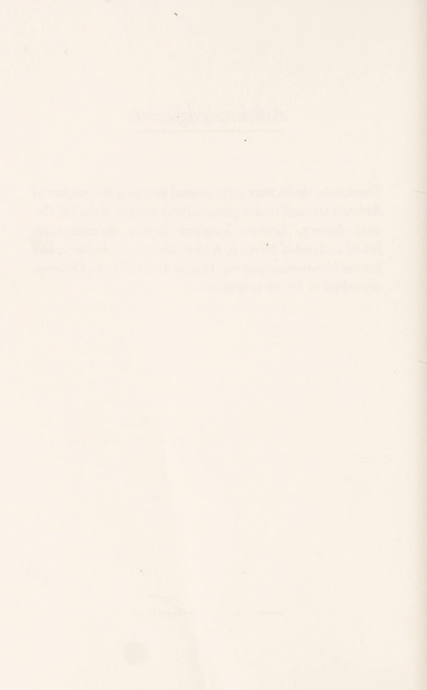
Đối với người chơi ở cấp độ câu lạc bộ và phong trào, tôi luôn khuyên áp dụng quy tắc 5 đòn bóng (Five-Shots-a-Point Rule): Hãy lập trình trong đầu một kịch bản gồm tối đa 5 cú đánh liên hoàn để giành lấy một điểm số.
1. Cú thứ nhất: Quả giao bóng (hoặc trả giao bóng) với mục tiêu đưa bóng vào vị trí bất lợi nhất của đối thủ. 2. Cú thứ hai: Đòn đánh tiếp theo (Serve + 1 hoặc Return + 1) khai thác khoảng trống hoặc khoét sâu vào điểm yếu vừa lộ ra. 3. Cú thứ ba: Một đường bóng kéo đối thủ dịch chuyển khỏi vị trí trung tâm, mở toang góc sân. 4. Cú thứ tư: Cú đánh áp đặt thế trận, có thể là cú tiếp cận lưới hoặc ép đối thủ phải lốp bóng phòng thủ yếu ớt. 5. Cú thứ năm: Đòn kết liễu cuối cùng (cú bắt volley dứt điểm hoặc đập smash ăn điểm).
Bằng cách tư duy theo chuỗi 5 đòn bóng, bạn sẽ không bao giờ vội vàng tìm kiếm cú ăn điểm may rủi ở ngay cú đánh đầu tiên, mà sẽ xây dựng điểm số như một kỳ thủ cờ vua dồn ép đối phương vào thế chiếu bí.
Nguyên bản: “My Five-Shots-a-Point Rule” — Plan each point as a 5-shot tactical sequence. From the serve to the approach and the final volley kill, building points deliberately eliminates rash errors and exposes opponent vulnerabilities.
2. Quyết Đoán Từ Sớm: Kẻ Thù Số Một Của Sự Do Dự (#ST02)
Một quyết định chiến thuật tầm thường được thực hiện dứt khoát luôn tốt hơn một ý định hoàn hảo bị dao động giữa chừng.
Điều tồi tệ nhất bạn có thể làm trên sân quần vợt là thay đổi ý định khi cây vợt đang vung dở về phía trước. Bạn bắt đầu vung vợt định đánh bạt chéo sân, rồi ở tích tắc cuối cùng bạn lại muốn chuyển sang bỏ nhỏ—kết quả 100% là quả bóng sẽ cạch khung hoặc rúc lưới một cách thảm hại.
Hãy đưa ra quyết định dứt khoát ngay khi bạn nhận diện được đường bóng của đối thủ. Dù bạn chọn đánh dọc dây, chéo sân hay lốp bóng, hãy cam kết trọn vẹn 100% với quyết định đó cho đến khi kết thúc cú vung vợt. Sự kiên định và quyết đoán chính là bản lĩnh tạo nên một nhà vô địch.
Nguyên bản: “Make Up Your Mind Early” — Indecision is fatal. Never change your shot selection in the middle of a forward swing. A mediocre tactical decision executed with 100% commitment is far superior to a brilliant idea executed with hesitation.
3. Xử Lý Khi Rơi Vào Thế Hiểm Nghèo (#ST03)
Chiến lược thoát hiểm và lập lại thế cân bằng khi bị đối thủ dồn ép dữ dội.
Khi bạn bị đối thủ tung ra một đòn đánh uy lực kéo dạt ra ngoài biên hoặc dồn ép vào thế mất thăng bằng, bản năng sai lầm của nhiều người là cố đánh một cú phản công ăn điểm ngoạn mục qua khe hẹp. Đó là hành động tự sát chiến thuật.
Khi gặp rắc rối, mục tiêu duy nhất của bạn là: Lập lại thế trận cân bằng và mua thời gian. Hãy đánh một đường bóng có trần bay thật cao, sâu về phía giữa vạch cuối sân của đối phương (một cú lốp phòng thủ bổng). Đánh vào giữa sân sẽ triệt tiêu mọi góc đánh mở của đối thủ, và độ cao của bóng sẽ cho bạn đủ 3 giây quý báu để chạy về tâm sân hồi phục thể lực và tư thế sẵn sàng.
Nguyên bản: “When You Get in Trouble” — When in severe trouble, do not gamble on high-risk winners. Loft a high, deep defensive ball down the middle of the court to erase acute angles and buy recovery time.
4. Nghệ Thuật Lựa Chọn Khi Thắng Tung Đồng Xu Khởi Đầu Trận Đấu (#ST04)
Tại sao không phải lúc nào giao bóng trước cũng là lựa chọn khôn ngoan nhất.
Quy ước thông thường là hễ thắng tung đồng xu thì người ta sẽ chọn giao bóng ngay. Nhưng tôi thì không tự động làm như vậy.
Nếu hôm đó trời có gió mạnh thổi ngược một bên sân hoặc ánh nắng mặt trời chói chang thẳng vào mắt ở một đầu sân, tôi sẽ chọn đầu sân có lợi thế tự nhiên trước! Bằng cách bắt đối thủ phải giao bóng ngược gió hoặc chói mắt ngay ở game đầu tiên khi họ còn chưa nóng máy, tôi có cơ hội rất cao để bẻ game giao bóng (break) của họ ngay từ vạch xuất phát. Hãy luôn phân tích các yếu tố thời tiết và tâm lý trước khi đưa ra lựa chọn.
Nguyên bản: “When You Win the Toss” — Winning the toss offers tactical choices. On windy or sunny days, choosing the advantageous side of the court to force your opponent into serving into the blinding sun or gale winds often yields an immediate service break.
5. Nhận Diện Những Điểm Số Và Game Đấu Mang Tính Sống Còn (#ST05)
Tập trung năng lượng tối đa vào các thời khắc mang tính bước ngoặt của set đấu.
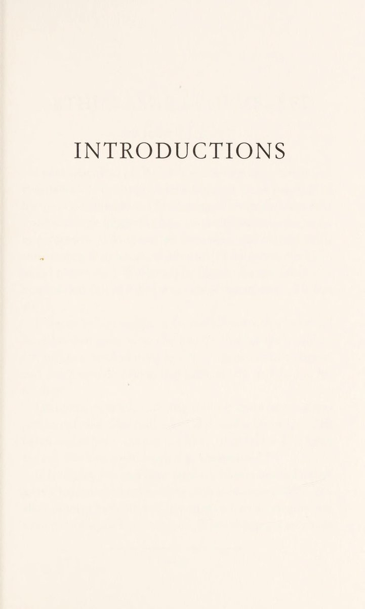
Tất cả các điểm số trên bảng điểm đều có giá trị bằng nhau về mặt con số, nhưng chúng có sức nặng tâm lý hoàn toàn khác biệt.
Các điểm số tối quan trọng bao gồm: - Điểm 30-đều (30-all): Đây là ngã ba đường của mọi game đấu. Thắng điểm này, bạn có game point hoặc break point; thua điểm này, bạn đối mặt với nguy hiểm tột cùng. - Điểm sau khi vừa bẻ giao bóng: Rất nhiều tay vợt sau khi vất vả break được đối thủ thì lại chủ quan, thả lỏng và bị bẻ lại ngay ở game tiếp theo. Game đấu củng cố break (consolidation game) chính là game đấu quyết định set đấu. - Game thứ 7 (khi tỷ số là 3-3 hoặc 4-2): Game đấu bản lề của cả set đấu. Hãy nâng mức tập trung của bạn lên 120% tại những thời điểm nhạy cảm này.
Nguyên bản: “The Important Points and Games” — Points like 30-all, break points, and the consolidation game immediately following a break carry enormous psychological weight. Heighten your concentration and eliminate reckless errors at these pivotal junctures.
6. Quần Vợt Xác Suất Và Trận Chung Kết Wimbledon 1975 Lịch Sử (#ST06)
Cách Arthur Ashe vận dụng chiến thuật toán học và tâm lý để hạ gục Jimmy Connors đỉnh cao phong độ.
Trước trận chung kết Wimbledon 1975, Jimmy Connors đang ở đỉnh cao quyền lực: cậu ấy bất khả chiến bại, đè bẹp mọi đối thủ bằng những cú đánh bóng nhanh và phẳng như đại bác. Các chuyên gia dự đoán Connors sẽ thắng dễ dàng.
Nhưng tôi và đội ngũ của mình (bao gồm Dennis Ralston) đã nghiên cứu kỹ lưỡng và vạch ra một kế hoạch chiến thuật triệt để dựa trên Quần Vợt Xác Suất (Percentage Tennis): 1. Tuyệt đối không cấp lực cho Connors: Không đánh những cú bóng mạnh hay nhanh để cậu ấy mượn lực. 2. Sử dụng toàn bộ những cú cắt mềm (junk & soft slice): Đưa bóng trượt là là sát đất vào phía trái tay của Connors, ép cậu ấy phải tự tạo lực từ thế bóng chết. 3. Giao bóng mở rộng góc ra biên ngoài (wide slice serve) để kéo Connors văng ra khỏi sân cỏ, mở toang sân để tôi lao lên bắt volley vào khoảng trống.
Kết quả là Connors hoàn toàn bị ức chế, mất nhịp điệu và mắc hàng loạt lỗi tự đánh hỏng. Tôi đã thắng thuyết phục 6-1, 6-1, 5-7, 6-4 để nâng cao chiếc cúp vô địch Wimbledon danh giá. Chiến thuật thông minh luôn có thể đánh bại sức mạnh cơ bắp thuần túy!
Nguyên bản: “Percentage Tennis and the 1975 Wimbledon Final” — My 1975 Wimbledon triumph over heavy-favorite Jimmy Connors was a triumph of tactical percentage tennis. By denying him pace, feeding him soft junk slices, and serving wide to exploit open court geometry, I dismantled his rhythm.
7. Chiến Thuật Khắc Chế Đối Thủ Chuyên Gài Bóng (The Pusher) (#ST07)
Làm thế nào để không phát điên và giành chiến thắng trước đối thủ 'đánh bóng qua lại không lực'.
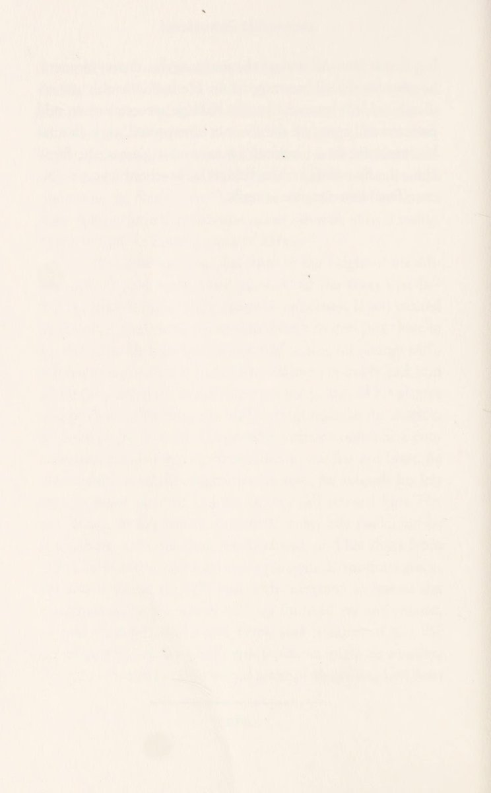
Những 'tay vợt gài bóng' (Pushers hay Moon-ballers) là cơn ác mộng của nhiều người chơi phong trào. Họ không đánh mạnh, không tạo winner, mà chỉ kiên nhẫn trả lại từng quả bóng lơ lửng, chờ bạn mất kiên nhẫn và tự đánh hỏng.
Để đè bẹp một Pusher, bạn phải tuân thủ 3 nguyên tắc: 1. Kiên nhẫn hơn họ: Hãy chuẩn bị tâm lý rằng mỗi điểm số sẽ kéo dài 15-20 lượt bóng. Đừng nôn nóng tung cú dứt điểm khi chưa có cơ hội rõ ràng. 2. Kéo họ lên lưới: Những tay vợt gài bóng cực kỳ ghét đứng trên lưới vì phản xạ volley của họ rất kém. Hãy chủ động bỏ nhỏ ngắn để dụ họ chạy lên lưới, sau đó dễ dàng tung cú passing hoặc lốp bóng qua đầu họ. 3. Tấn công vào quả bóng ngắn: Khi họ trả bóng ngắn vào giữa sân, hãy bước vào sân đè bóng sâu vào góc sân hoặc dùng cú cắt tiếp cận lưới để kết thúc điểm số trên lưới.
Nguyên bản: “Playing a Pusher” — To defeat a pusher, out-patience them, refuse to give away unforced errors, and use drop shots to drag them out of their comfort zone at the baseline and expose their weak net skills.
8. Chiến Thuật Khắc Chế Đối Thủ Đánh Bạt Bão Táp (The Basher) (#ST08)
Cách chế ngự những tay đập bóng nặng và khiến họ tự vỡ trận.
Ngược lại với Pusher, 'Basher' là mẫu đối thủ thích nã đại bác trong từng cú đánh. Họ vung hết sức ở mọi tư thế.
Cách đối phó: 1. Lấy đi góc đánh của họ: Hãy đánh bóng thật sâu vào chính giữa sân, sát vạch cuối sân của họ. Khi bóng rơi sâu ở trung lộ, họ không có góc mở để tung ra những cú đánh bạt chéo sân hiểm hóc. 2. Đổi nhịp và độ xoáy liên tục: Đừng đánh lại bóng phẳng cho họ mượn lực. Hãy trộn lẫn những cú cắt slice thấp, bóng lốp cao bổng và bóng xoáy topspin nặng. Những kẻ đập bóng cuồng nhiệt sẽ nhanh chóng mất nhịp điệu và tự bắn bóng ra ngoài hàng rào.
Nguyên bản: “Playing a Basher” — Against hard-hitting bashers, hit deep down the middle of the court to eliminate their attacking angles. Vary the pace with heavy spin and low slices to destroy their hitting groove.
9. Chiến Thuật Khắc Chế Đối Thủ Chuyên Lên Lưới (The Net-Rusher) (#ST09)
Cách bẻ gãy những tay vợt liên tục tràn lên rào lưới ép sân.
Trước một tay vợt giao bóng lên lưới hoặc liên tục áp sát mép lưới, bạn không được hoảng sợ:
1. Đánh bóng vào sát mũi giày của họ: Đừng cố bắn passing ăn điểm ngay lập tức qua mép biên hẹp. Hãy đánh một cú bóng chìm thấp sát chân họ (dipping ball) khi họ đang trên đà lao lên. Họ buộc phải thực hiện một cú volley ngửa bóng lên từ dưới thấp, và khi đó quả bóng bổng nổi lên sẽ là mồi ngon cho cú passing kết liễu của bạn ở nhịp tiếp theo. 2. Sử dụng cú lốp bóng tấn công thường xuyên: Một vài cú lốp bóng qua đầu thành công sẽ khiến họ chùn bước, ngập ngừng không dám dâng quá sát lưới.
Nguyên bản: “Playing a Net-Rusher” — Do not go for tight sideline passing winners immediately. Dip the ball low at the charging volleyer's feet to force a weak popped-up volley, then pass them on the next shot.
10. 8 Điều Cốt Tử Khi Đối Đầu Tay Vợt Thuận Tay Trái (Lefty) (#ST10)
Bí quyết giải mã những góc xoáy dị biệt của các tay vợt tay chiêu.
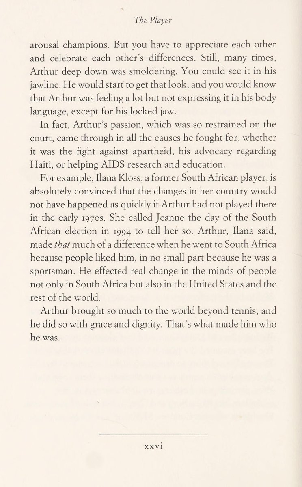
Đối đầu với một tay vợt thuận tay trái (như Rod Laver hay John McEnroe) luôn gây bối rối cho người thuận tay phải vì toàn bộ quỹ đạo xoáy bị đảo ngược hoàn toàn.
Hãy ghi nhớ 8 nguyên tắc sinh tử: 1. Quả giao bóng slice của họ từ ô lợi điểm (Advantage court) sẽ xoáy văng bạn ra tận hàng rào bên trái—hãy đứng dịch hẳn sang trái để đón đỡ. 2. Cú thuận tay sở trường của họ nằm ở bên trái bạn; đừng theo thói quen đánh bóng chéo sân vào đó! 3. Điểm yếu của hầu hết tay vợt thuận tay trái là cú trái tay ở bên phải họ; hãy kiên trì ép bóng vào góc đó. 4. Khi họ giao bóng hai, hãy chờ đón quả bóng nảy vọt sang bên trái của bạn. 5. Luôn chủ động tấn công vào cú giao bóng của họ thay vì đứng lùi lại phòng thủ thụ động. 6. Lên lưới áp sát mép lưới bên phải để bịt góc passing thuận tay chéo sân của họ. 7. Tập trả giao bóng bằng cú cắt slice dọc dây để vô hiệu hóa quả phát bóng xoáy của họ. 8. Giữ sự bình tĩnh và nhận thức rõ ràng về mặt hình học sân đấu trong từng đường bóng.
Nguyên bản: “Eight Things to Do When Playing a Lefty” — Lefties possess inverted spins. Anticipate their wide slice serve in the ad court, avoid feeding their big forehand on your crosscourt drives, and relentlessly target their backhand wing.
11. Đấu Pháp Trên Từng Mặt Sân: Cứng, Đất Nện & Trong Nhà (#ST11)
Điều chỉnh nhịp điệu và vũ khí kỹ thuật tương thích hoàn hảo với từng mặt sân.
Mỗi mặt sân là một môn thể thao gần như khác biệt:
- Sân cứng (Hard Courts): Độ nảy chuẩn xác, tốc độ trung bình nhanh. Lối chơi tấn công chủ động, đánh bóng trên đà nảy (on the rise) và giao bóng uy lực sẽ chiếm ưu thế tuyệt đối. - Sân đất nện (Clay Courts): Tốc độ chậm, bóng nảy rất cao và độ trượt lớn. Bạn cần sự kiên nhẫn sắt đá, thể lực bền bỉ, sử dụng những cú topspin cầu vồng cao để đẩy đối thủ lùi xa, và kết liễu bằng những cú bỏ nhỏ bất ngờ khi đối thủ đứng sau vạch cuối sân cả mét. - Sân trong nhà (Indoors): Không có gió, không có ánh nắng mặt trời chói mắt. Tốc độ bóng bay nhanh và thuần khiết nhất. Những quả giao bóng mạnh và lối chơi lên lưới chiếm ưu thế vượt trội.
Nguyên bản: “Playing on Different Court Surfaces” — Adapt to surfaces: attack early on hard courts, cultivate infinite patience and heavy topspin on clay, and seize the net with aggressive serve-and-volley tactics indoors.
12. Nghệ Thuật Phán Đoán Và Bao Quát Mặt Sân (#ST12)
Làm thế nào để luôn có mặt đúng vị trí trước khi đối thủ kịp vung vợt.
Nhiều người nghĩ rằng tôi di chuyển nhanh là nhờ đôi chân. Thực ra, tôi di chuyển nhanh là nhờ đôi mắt và bộ não.
Khả năng phán đoán (Anticipation) không phải là phép thuật hay đoán mò; nó là khả năng đọc tín hiệu cơ thể của đối thủ: - Nhìn vào cách họ xoay vai và tư thế bàn chân khi chuẩn bị tiếp xúc. - Quan sát vị trí tiếp xúc bóng: nếu họ để bóng rơi ra sau người, họ không thể đánh chéo sân mà buộc phải đánh dọc dây hoặc lốp bóng. - Lắng nghe âm thanh va chạm của bóng trên mặt vợt để cảm nhận tốc độ và độ xoáy. Bằng cách đọc trước các manh mối này, bạn đã bắt đầu di chuyển về hướng bóng trước khi đối phương hoàn tất cú theo đà.
Nguyên bản: “Anticipation and Court Coverage” — Anticipation is visual literacy, not guesswork. Read your opponent's shoulder angle, racket preparation, and contact point to begin your movement before the ball is even struck.
Lịch Sử, Truyền Thống & Đạo Đức
1. Lịch Sử Quần Vợt & Cuộc Cách Mạng Kỷ Nguyên Mở 1968 (#TR01)
Nguồn gốc từ môn thể thao hoàng gia Pháp thế kỷ 13 đến bước ngoặt lịch sử thống nhất chuyên nghiệp năm 1968.
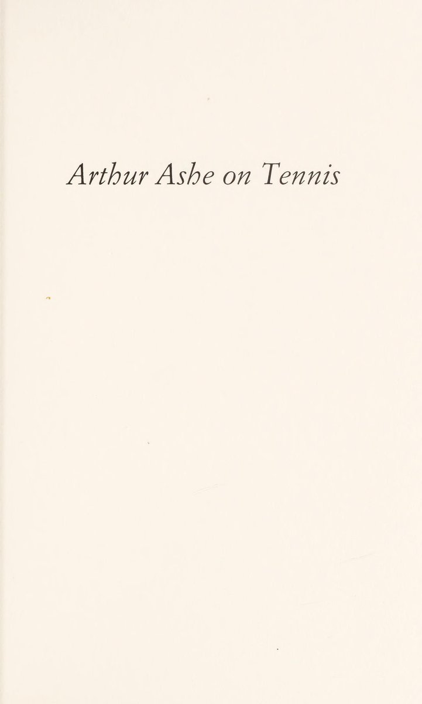
Hiếm có môn thể thao nào trên thế giới lại có bề dày lịch sử liên tục và phong phú như quần vợt. Môn thể thao hiện đại chúng ta chơi ngày nay là sự kế thừa và tiến hóa từ môn "quần vợt hoàng gia" (court tennis hay jeu de paume), vốn xuất hiện tại Pháp từ thế kỷ 13 với hình thức dùng lòng bàn tay để đánh bóng. Ngay cả từ "tennis" cũng bắt nguồn từ tiếng Pháp tenez ("hãy đỡ lấy!"), vốn là khẩu lệnh của người giao bóng trước khi đưa bóng vào cuộc.
Quần vợt sân bãi (lawn tennis) chính thức ra đời vào năm 1874 khi Thiếu tá kỵ binh Walter Clopton Wingfield được cấp bằng sáng chế cho bộ luật và dụng cụ ngoài trời. Đến năm 1877, giải vô địch Wimbledon đầu tiên được tổ chức, đặt nền móng cho hệ thống luật thi đấu hoàn chỉnh.
Tuy nhiên, năm trọng đại nhất trong toàn bộ lịch sử quần vợt hiện đại chính là năm 1968. Trước thời điểm đó, các giải Grand Slam danh giá chỉ dành riêng cho những tay vợt nghiệp dư; các tay vợt chuyên nghiệp bị cấm thi đấu và phải tự tổ chức các tour lưu diễn độc lập. Động thái táo bạo của ban tổ chức Wimbledon khi mở cửa cho các tay vợt chuyên nghiệp tranh tài vào năm 1968 đã buộc Liên đoàn Quần vợt Quốc tế (ITF) phải nhượng bộ và biểu quyết khai sinh Kỷ Nguyên Mở (Open Era).
Kỷ lục vĩ đại và khó phá vỡ nhất lịch sử quần vợt có lẽ thuộc về Rod Laver với hai lần đoạt trọn bộ Grand Slam trong cùng một năm dương lịch (1962 và 1969). Đạt được kỳ tích đó một lần đã là phi thường; làm được điều đó hai lần càng là điều không tưởng—và Laver thậm chí đã có thể làm được nhiều hơn thế nếu không bị cấm tham dự Grand Slam trong suốt 5 năm đỉnh cao phong độ (1963–1967) vì trót chuyển lên chuyên nghiệp.
Nguyên bản: “A Little History and The Open Era” — A deep look into tennis origins from 13th-century French court tennis to the watershed 1968 Open Era revolution, and Rod Laver's monumental Grand Slam achievements.
2. Bí Ẩn Cách Tính Điểm & Sự Ra Đời Của Loạt Tiebreak (#TR02)
Nguồn gốc của các thuật ngữ Love, 15, 30, 40 và cuộc cách mạng rút ngắn thời gian trận đấu bằng loạt tiebreak.
Hệ thống tính điểm của quần vợt thoạt nhìn có vẻ kỳ lạ và phi logic đối với người mới bắt đầu. Thay vì đếm 1, 2, 3, 4 đơn giản, chúng ta lại dùng 15, 30, 40, Deuce và Advantage. Nguồn gốc của hệ thống này bắt nguồn từ hệ thống tiền tệ lục thập phân của Pháp thời trung cổ (với đồng tiền 15 xu là một phần tư đơn vị tiền tệ) hoặc dựa trên 4 góc phần tư của mặt đồng hồ 60 phút (trong đó 40 là cách gọi tắt của 45). Từ "Love" (0 điểm) xuất phát từ chữ l'oeuf trong tiếng Pháp nghĩa là quả trứng (biểu tượng cho hình số 0), còn "Deuce" xuất phát từ à deux de jeu (cần thêm 2 điểm để thắng game).
Những người xây dựng luật lệ ban đầu ở giới quý tộc Anh chắc chắn sẽ ghê tởm loạt đấu tiebreak. Đối với họ, phong thái lịch thiệp và sự cao thượng quan trọng hơn kết quả. Khi tỷ số hòa 6-6, hành vi đúng mực của một quý ông là tiếp tục thi đấu cho đến khi có người thắng cách biệt hai game để chứng minh đẳng cấp vượt trội.
Tuy nhiên, tiebreak là một cuộc cách mạng tuyệt vời cho quần vợt hiện đại. Nó mang lại tính quyết định dứt khoát cho trận đấu, giúp các giải đấu truyền hình có thể kiểm soát khung giờ phát sóng và cứu những người chơi phong trào khỏi cảnh hết giờ thuê sân khi tỷ số đang dở dang. Ngoại trừ set cuối của một số giải Grand Slam truyền thống và Davis Cup vẫn giữ luật cách hai game, tiebreak đã trở thành chuẩn mực không thể thiếu của môn thể thao này.
Nguyên bản: “Scoring and the Tiebreak” — The historical origins of tennis scoring terms (Love, 15, 30, 40, Deuce) and why the tiebreak was a revolutionary invention for modern tennis.
3. Bảo Vệ Quyền Lợi Trên Sân & Bộ Quy Tắc Ứng Xử The Code (#TR03)
Tầm quan trọng của việc am hiểu luật thi đấu và văn hóa tự giác giải quyết tranh chấp trong các trận đấu không có trọng tài.
Mọi người chơi quần vợt nghiêm túc đều phải nắm vững luật thi đấu để bảo vệ quyền lợi chính đáng của mình khi xảy ra tranh cãi trên sân. Nhiều người chơi thậm chí không biết những quy tắc cơ bản: ví dụ, bạn sẽ thắng điểm nếu đối thủ tung cú dứt điểm ăn điểm nhưng cây vợt của họ chạm vào lưới trong quá trình vung vợt theo đà.
Bên cạnh luật chính thức, Hiệp hội Quần vợt Hoa Kỳ (USTA) phát hành cuốn cẩm nang The Code (Bộ Quy Tắc Ứng Xử), hướng dẫn cách xử lý các tình huống thực tế trong những trận đấu không có trọng tài điều khiển. Nguyên tắc cốt lõi của The Code là: Nếu bạn không hoàn toàn chắc chắn 100% bóng ngoài sân, bạn buộc phải nhường quyền lợi nghi ngờ đó cho đối thủ và tính bóng trong sân.
Tuy nhiên, trong thực tế thi đấu căng thẳng, nhiều người thường nhìn nhận tình huống theo cách họ 'muốn thấy' hơn là sự thật diễn ra. Lời khuyên thiết thực của tôi dành cho các tay vợt phong trào là: Trước khi bước vào trận đấu không có trọng tài, hãy chủ động thỏa thuận trước với đối thủ rằng nếu hai bên xảy ra tranh cãi gay gắt về một pha bóng sát vạch mà không ai chịu ai, cả hai sẽ vui vẻ đánh lại quả đó (chơi điểm let). Quần vợt chỉ thực sự thú vị và đáng chơi khi nó được thi đấu trên tinh thần công bằng và sòng phẳng tuyệt đối.
Nguyên bản: “Protect Your Rights and The Code” — Know the rules to protect your rights. Master 'The Code' for un-umpired matches and agree beforehand to play lets on contentious line calls to maintain fair play.
4. Lỗi Chân Khi Giao Bóng (Foot Fault): Quy Tắc Bị Vi Phạm Nhiều Nhất (#TR04)
Ranh giới giữa việc gian lận lén lút và thói quen phạm luật công khai ở cấp độ phong trào.
Gần như mọi tay vợt phong trào hoặc câu lạc bộ đều thường xuyên dẫm vạch hoặc bước qua vạch cuối sân trước khi vợt chạm bóng trong lúc giao bóng. Đây là một trong những điểm khác biệt rõ ràng nhất giữa người chơi nghiệp dư và các vận động viên chuyên nghiệp. Các tay vợt nghiệp dư hầu như chẳng bận tâm, nhưng ở đấu trường chuyên nghiệp, lỗi chân (foot fault) là một vấn đề cực kỳ nghiêm trọng.
Liệu việc dẫm chân lên vạch khi giao bóng ở giải phong trào có bị coi là gian lận? Gian lận là việc phá vỡ luật lệ một cách lén lút sau lưng đối thủ. Nhưng nếu bạn phạm luật công khai trước mắt mọi người mà không ai bắt bẻ, bạn đang tạo cho mình một chút lợi thế không hợp lệ, nhưng nó chưa hẳn là sự suy đồi đạo đức—nó giống như việc các đấu thủ golf nghiệp dư tự cho phép mình gạt quả bóng cách lỗ 15 cm vào lỗ mà không cần đánh (gimme putt). Dẫu vậy, nếu bạn muốn trở thành một tay vợt chân chính, hãy rèn luyện thói quen đứng lùi lại phía sau vạch cuối sân 5 đến 10 cm để giữ cho quả giao bóng của mình luôn hoàn toàn sạch sẽ và hợp lệ.
Nguyên bản: “The Most Abused Rule: Foot Faults” — The widespread prevalence of foot faults among amateur players. While often tolerated socially, true students of the game should respect the baseline boundary strictly.
5. Đạo Đức Thi Đấu & Những Đòn Chiến Thuật Hợp Lệ (#TR05)
Ranh giới giữa chiến thuật thông minh và hành vi phi thể thao trên sân quần vợt.
Luật quần vợt cho phép bạn áp dụng rất nhiều chiêu thức chiến thuật thú vị mà không hề vi phạm đạo đức. Chẳng hạn, tôi không hiểu vì sao nhiều người chơi lại ngần ngại sử dụng những quả giao bóng lạ thường. Nếu bạn thuần thục cú giao bóng xoáy lườn từ dưới lên (underhand sidespin serve), bạn hoàn toàn có thể làm đối thủ bất ngờ, mất nhịp và giành được rất nhiều điểm số dễ dàng. Điều đó hoàn toàn hợp lệ và không có gì là phi đạo đức cả.
Khi Michael Chang tiến sát lên vạch phát bóng để đón đỡ quả giao bóng của Ivan Lendl ở match point tại Roland Garros 1989, hành động đó không hề phi thể thao—đó là một nước cờ tâm lý cực kỳ thông minh. Bạn được quyền đứng ở bất kỳ vị trí nào trên nửa sân của mình, thậm chí đứng sát lưới nếu muốn.
Ranh giới chỉ thực sự trở nên nhạy cảm khi bạn di chuyển trong lúc đối thủ đang tung bóng giao bóng. Bạn được phép nhún nhảy nhẹ tại chỗ để giữ cơ thể linh hoạt (như cách Zina Garrison hay làm). Nhưng nếu bạn cố tình nhảy múa từ bên này sang bên kia với bước chạy lớn nhằm làm phân tâm tầm nhìn của đối thủ, hành vi đó sẽ bị trọng tài coi là cản trở bất hợp lệ (hindrance). Hãy luôn thi đấu với sự sắc sảo về chiến thuật nhưng tôn trọng sự tôn nghiêm của cuộc chơi.
Nguyên bản: “A Question of Ethics and Gamesmanship” — Strategic ingenuity vs. ethical boundaries. Underhand serves and psychological positioning (like Michael Chang vs. Ivan Lendl) are legitimate, whereas intentional visual distraction during serves is a hindrance.
6. Nghi Thức Bắt Tay Qua Lưới: Biểu Tượng Của Sự Tôn Trọng Tuyệt Đối (#TR06)
Giá trị cốt lõi của cái bắt tay sau trận đấu và bài học từ sự cố duy nhất với Ilie Nastase năm 1975.
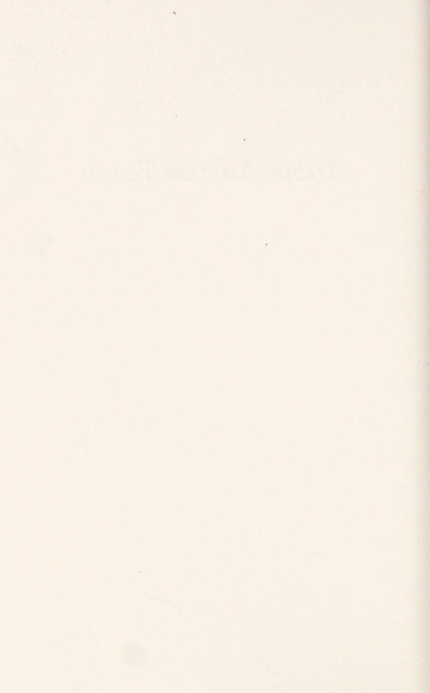
Cái bắt tay qua lưới sau khi trận đấu kết thúc là một di sản cao quý từ kỷ nguyên Victoria của nước Anh. Đó là hành vi của một quý ông sau cuộc so tài khốc liệt. Đối với cá nhân tôi, cái bắt tay là biểu tượng của sự khép lại trọn vẹn (closure). Nó gửi đi thông điệp: Cả hai chúng ta đều đã nỗ lực chuẩn bị và chiến đấu hết mình, người chơi tốt hơn trong ngày hôm nay đã giành chiến thắng, và đây là một trận đấu thể thao chứ không phải là cuộc chiến sinh tử một mất một còn.
Nếu bạn bước lên bắt tay đối thủ, hãy làm điều đó một cách đàng hoàng: nắm chặt tay và nhìn thẳng vào mắt đối phương. Đừng biến nó thành một thủ tục hời hợt, chiếu lệ.
Trong suốt toàn bộ sự nghiệp thi đấu lẫy lừng của mình, chỉ duy nhất một lần tôi từ chối bắt tay đối thủ. Đó là khi tôi đối đầu với Ilie Nastase tại giải Masters 1975 ở Stockholm. Khi đang dẫn trước 4-1 ở set thứ ba quyết định, trước những hành vi khiêu khích quá mức trơ trẽn của Nastase và sự bất lực hoàn toàn của trọng tài chính, tôi đã chủ động cất vợt và rời sân. Tôi tự nhủ: 'Nếu anh ta thèm khát chiến thắng đến mức phải dùng những trò hề bẩn thỉu này, anh ta cứ việc lấy nó.' Ban tổ chức sau đó đã xử truất quyền thi đấu (default) của Nastase và trao chiến thắng cho tôi. Ngày hôm sau, Nastase đã mang đến tận phòng tôi một bó hoa tươi thắm cùng lời xin lỗi chân thành nhất. Sau này, chúng tôi trở thành những người bạn thân thiết. Cái bắt tay chỉ thực sự có ý nghĩa khi cả hai bên cùng tôn trọng danh dự của nhau.
Nguyên bản: “Shaking Hands: The Meaning of Respect” — The deep symbolic meaning of the post-match handshake, looking opponents in the eye, and the famous 1975 Masters incident with Ilie Nastase.
7. Trang Phục Toàn Trắng (Tennis Whites) & Dấu Ấn Truyền Thống (#TR07)
Sức hấp dẫn thẩm mỹ của trang phục trắng truyền thống trên sân cỏ và sự phá cách của thế hệ hiện đại.
Trang phục thi đấu toàn màu trắng xuất phát từ quy định trang phục nghiêm ngặt của giới quý tộc Anh cuối thế kỷ 19 đối với các môn thể thao trên cỏ như cricket, croquet và lawn tennis. Về mặt thẩm mỹ thuần túy, màu trắng tinh khôi tương phản tuyệt đẹp trên nền cỏ xanh mướt của sân quần vợt.
Cho đến tận ngày nay, Wimbledon vẫn kiên định yêu cầu trang phục của các tay vợt phải có màu trắng chủ đạo. Năm 1969, tôi nằm trong nhóm những tay vợt đầu tiên phá vỡ rào cản trang phục tại giải US Open ở Forest Hills bằng việc mặc những chiếc áo thi đấu màu pastel nhã nhặn. Sau này, Andre Agassi đã tạo nên một làn sóng văn hóa mới với những bộ đồ thi đấu rực rỡ, quần bò denim để kết nối với giới trẻ nổi loạn. Dẫu vậy, khi đứng giữa thánh đường Centre Court của Wimbledon, tôi vẫn tin rằng sắc trắng truyền thống mang lại một vẻ trang trọng, thuần khiết và thanh tao mà không một màu sắc nào khác có thể thay thế được.
Nguyên bản: “Tennis Whites and Traditions” — The history and timeless aesthetic appeal of Wimbledon's all-white dress code, balanced against modern self-expression by icons like Andre Agassi.
8. Giữ Trật Tự ('Quiet, Please') & Áp Lực Khán Giả Tại Davis Cup (#TR08)
Cách kiểm soát tâm trí trước tiếng ồn và sự thù địch của khán đài sân khách.
Âm thanh và chuyển động phía sau sân đấu ảnh hưởng trực tiếp đến khả năng tập trung vào quả bóng của người chơi. Giống như khi bạn đang lái xe tìm kiếm một địa chỉ xa lạ giữa phố xá đông đúc, bạn sẽ tự động vặn nhỏ đài radio trên xe lại để không bị phân tâm. Đó chính là lý do tôi luôn nhắm nghiền mắt lại trong vòng 60 giây ở các lần đổi sân khi đấu với Jimmy Connors tại chung kết Wimbledon 1975: tôi không phải đang thiền định hay nghỉ ngơi, mà tôi đang khóa chặt mọi giác quan để hình dung lại kế hoạch chiến thuật trong đầu.
Tuy nhiên, đỉnh cao của thử thách về tiếng ồn chính là đấu trường Davis Cup. Không giống như sự im lặng trang nghiêm tại các giải đấu thông thường, khán giả Davis Cup cuồng nhiệt, ồn ào và thậm chí mang tính thù địch dữ dội đối với đội khách.
Tôi không bao giờ quên trải nghiệm năm 1966 tại Porto Alegre, Brazil khi đánh cặp cùng Dennis Ralston. Khán giả chủ nhà la hét đinh tai nhức óc, và đại sứ Mỹ thậm chí đã cảnh báo chúng tôi không được ăn mừng quá khích để tránh bạo động. Ở Ecuador, khán giả gõ chuông bò inh ỏi; tại Rome, người hâm mộ Ý nổi tiếng với việc ném đồng xu vào đối thủ của các tay vợt chủ nhà. Để vượt qua áp lực khủng khiếp ấy, bạn phải rèn luyện khả năng tập trung cao độ, xem tiếng ồn của đối phương như một chất xúc tác kích thích tinh thần chiến đấu thay vì để nó bóp nghẹt tâm lý của mình.
Nguyên bản: “Quiet, Please and Spectator Dynamics” — Managing mental focus amidst crowd noise, Ashe's 1975 Wimbledon eye-closing routine, and surviving hostile Davis Cup atmospheres worldwide.
9. Trải Nghiệm Tuyệt Đỉnh: Quần Vợt Trên Mặt Sân Cỏ (#TR09)
Đặc trưng độc nhất vô nhị của sân cỏ tự nhiên và những điều chỉnh kỹ thuật bắt buộc.
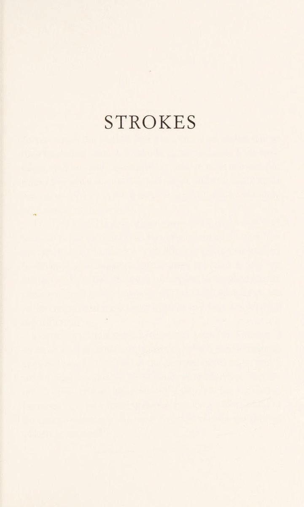
Năm 16 tuổi, lần đầu tiên tôi được bước chân lên mặt sân cỏ tại câu lạc bộ West Side ở Forest Hills. Thi đấu trên mặt cỏ tự nhiên là trải nghiệm quần vợt đỉnh cao và thuần khiết nhất mà bất kỳ người yêu quần vợt nào cũng nên nếm trải ít nhất một lần trong đời.
Trên mặt cỏ, bóng bay cực nhanh và trượt rất thấp sát mặt đất chứ không nảy cao như sân cứng hay đất nện. Để làm chủ mặt sân này, bạn phải thực hiện 3 điều chỉnh kỹ thuật cốt tử: 1. Rút ngắn tối đa đà mở vợt (short backswing): Bạn không có thời gian để vung vợt vòng cung lớn; hãy đưa vợt ra sau thật sớm và gọn gàng. 2. Cầm vợt chặt hơn ở thời điểm tiếp xúc: Quả bóng trượt nhanh đòi hỏi cổ tay và bàn tay phải cực kỳ vững vàng để không bị rung lắc mặt vợt. 3. Hạ thấp trọng tâm tối đa: Uốn cong đầu gối sâu để đón những quả bóng nảy lướt là là sát mặt cỏ.
Sân cỏ tốt nhất mà tôi từng thi đấu trong đời là tại Memorial Drive ở Adelaide, Úc trong trận chung kết Davis Cup 1968: mặt sân phẳng lì như mặt bàn bida, nền đất nện cứng hoàn hảo và bóng nảy cực kỳ trung thực.
Nguyên bản: “The Ultimate Experience: Grass Court Tennis” — Playing on grass is the supreme tennis experience. Adapt with shorter backswings, firmer grip tension, lower knee bends, and aggressive forward movement.
10. Đấu Pháp Căn Bản Trên Sân Cỏ: Đánh Thẳng Vào Khoảng Trống Mở (#TR10)
Chiến thuật đơn giản nhưng mang tính hủy diệt trên mặt sân có độ trượt cao.
Trên mặt sân cỏ, bạn sẽ không bao giờ phải hối tiếc khi tự động đánh bóng vào khoảng sân trống (open court) của đối phương ngay khi có cơ hội.
Bởi vì mặt cỏ rất trơn và bóng trượt đi với tốc độ cao, bất kể đối thủ có đoán trước được hướng đánh hay không, họ cũng buộc phải chạy đua hết tốc lực và rướn người cứu bóng trong tư thế mất thăng bằng. Việc liên tục phải phanh gấp và đổi hướng trên mặt cỏ trơn trượt sẽ vắt kiệt thể lực và khiến đối phương rất dễ trượt chân. Hơn nữa, việc mặc định đánh vào khoảng trống giúp bạn loại bỏ bớt một quyết định do dự trong đầu khi tình huống bóng diễn ra với tốc độ chớp nhoáng. Đấu pháp này giống như cú bài chạy góc kinh điển của đội bóng bầu dục Green Bay Packers thập niên 1960: Dù đối phương biết tỏng bạn sắp làm gì, nhưng nếu bạn thi triển với độ chính xác cao, họ hoàn toàn bất lực trong việc ngăn chặn!
Nguyên bản: “A Basic Play on Grass: Going for the Open Court” — The ruthless simplicity of hitting to the open court on grass. Slick surfaces make changing direction treacherous, turning predictable shot placement into unreturnable pressure.
11. Câu Lạc Bộ Toàn Anh (All England Club) & Sự Thiêng Liêng Của Wimbledon (#TR11)
Bên trong thánh địa Wimbledon: Sự khiêm nhường quý tộc, truyền thống lâu đời và đặc quyền của nhà vô địch.
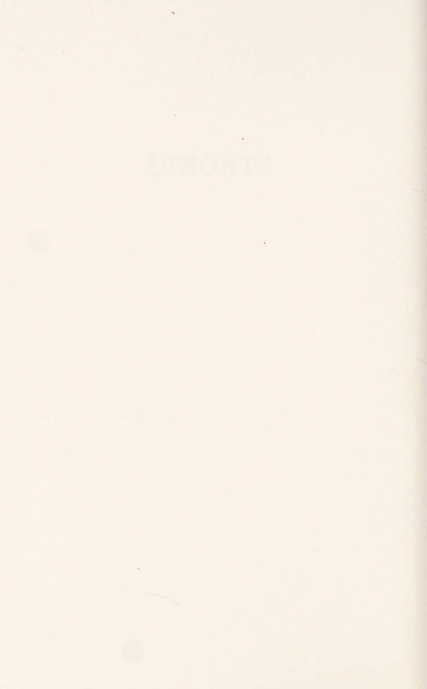
Câu lạc bộ Quần vợt và Croquet Toàn Anh (All England Club) tại Wimbledon có chưa đầy 400 hội viên chính thức cùng một danh sách chờ kéo dài vô tận. Đó là lý do tôi thường nói đùa rằng: Cách dễ nhất để trở thành hội viên của câu lạc bộ này là giành chức vô địch Wimbledon, bởi vì mọi nhà vô địch đơn đều nghiễm nhiên trở thành hội viên danh dự trọn đời!
Nơi đây có 41 sân quần vợt (30 sân cỏ và 11 sân đất nện) và thực sự vẫn có các sân bóng gỗ vồ (croquet) ở phía sau. Danh sách thành viên bao gồm những huyền thoại thể thao như Rod Laver, Chris Evert, các thành viên hoàng gia như Công nương Diana, và các nhân vật nổi tiếng như tài tử Charlton Heston.
Lần đầu tiên tôi đặt chân tới Wimbledon vào năm 1963, tôi đã vô cùng kinh ngạc trước sự giản dị đến khiêm nhường của nơi này. Tôi từng nghĩ nó sẽ nguy nga, tráng lệ như các câu lạc bộ đồng quê xa hoa của giới tài phiệt Mỹ. Nhưng không, Wimbledon là biểu tượng cho sự chuẩn mực kín đáo của tầng lớp quý tộc Anh: không hề có vòi nước dát vàng, phòng thay đồ chính thậm chí khá nhỏ gọn. Chính sự tôn nghiêm lịch sử, tình yêu thuần khiết với môn thể thao và sự kiên định bảo tồn các giá trị cổ điển đã biến Wimbledon thành giải đấu danh giá bậc nhất hành tinh.
Nguyên bản: “The Most Exclusive Club: The All England Lawn Tennis Club” — Inside the All England Lawn Tennis Club: under-400 membership exclusivity, understated British aristocratic austerity, and the sacred aura of Centre Court.
12. Giải Đấu Khắc Nghiệt Nhất Thế Giới Để Chinh Phục (#TR12)
Tại sao Wimbledon là bài kiểm tra thần kinh và phản xạ tàn bạo nhất trong 4 giải Grand Slam.
Wimbledon chắc chắn là giải đấu khó vô địch nhất trong toàn bộ thế giới quần vợt. Lý do chính là vì mặt sân cỏ là mặt sân xa lạ nhất đối với hầu hết các tay vợt trên toàn cầu—họ chỉ có vỏn vẹn hai đến ba tuần trong cả năm để làm quen và thi đấu trên mặt sân này.
Nếu bạn nhìn vào danh sách các nhà vô địch Wimbledon qua từng thập kỷ, số lượng tên tuổi đăng quang ít hơn rất nhiều so với Roland Garros hay US Open. Tại Wimbledon, hầu như không có chỗ cho những kẻ ăn may. Đây là bài kiểm tra tàn bạo về thần kinh thép, phản xạ phi thường và khả năng tấn công dứt khoát. Trong mỗi mùa giải, số lượng ứng cử viên thực thụ có khả năng nâng cúp chỉ gói gọn trong khoảng 4 đến 6 tay vợt hạt giống hàng đầu. Chiến thắng tại Wimbledon năm 1975 đã vĩnh viễn thay đổi cuộc đời tôi, nâng tôi từ một tay vợt tài năng lên thành một nhân vật truyền cảm hứng toàn cầu.
Nguyên bản: “The Toughest Tournament to Win: Wimbledon” — Why Wimbledon is tennis's supreme crucible: unfamiliarity with grass, ruthless speed, absence of fluke champions, and the ultimate test of nerve and reflex.
13. Khoản Tiền Công 28 Đô La Một Ngày Của Nhà Vô Địch US Open 1968 (#TR13)
Kỷ niệm khó quên khi Arthur Ashe vô địch US Open đầu tiên của Kỷ Nguyên Mở nhưng chỉ nhận tiền công tác phí ít ỏi.
Khi tôi đăng quang chức vô địch US Open lịch sử năm 1968—giải đấu Kỷ Nguyên Mở đầu tiên nơi các tay vợt nghiệp dư và chuyên nghiệp cùng tranh tài—tôi vẫn đang giữ tư cách là một vận động viên nghiệp dư và một sĩ quan phục vụ trong quân đội Hoa Kỳ.
Vì quy chế nghiêm ngặt dành cho VĐV nghiệp dư thời bấy giờ, tôi chỉ nhận được khoản công tác phí (per diem) đúng 28 đô la một ngày (tương đương 10 bảng Anh theo tỷ giá 2.80 USD/bảng khi đó) do Liên đoàn Quần vợt Quốc tế quy định. Sau 10 ngày thi đấu kiệt xuất và giành cúp vô địch, tôi nhận về vỏn vẹn 280 đô la!
Trong khi đó, tay vợt á quân người Hà Lan Tom Okker—vốn thi đấu với tư cách chuyên nghiệp—đã ung dung ẵm trọn số tiền thưởng kỷ lục 14.000 đô la dành cho ngôi vị quán quân. Đó là một thực tế trớ trêu nhưng cũng là một minh chứng lịch sử hào hùng cho thời khắc chuyển giao vĩ đại của môn thể thao này sang con đường chuyên nghiệp hóa.
Nguyên bản: “$28 a Day: The 1968 US Open Amateur Payout” — Winning the historic inaugural 1968 US Open as an amateur earned Ashe just $28 a day ($280 total per diem), while runner-up Tom Okker collected the $14,000 professional first prize.
14. Hiệp Hội Quần Vợt Người Mỹ Gốc Phi (ATA) & Những Chiếc Cúp Lịch Sử (#TR14)
Cái nôi nuôi dưỡng các tài năng da màu và ý nghĩa của 4 danh hiệu quý giá nhất trong phòng khách của Ashe.
Hiệp hội Quần vợt Hoa Kỳ (American Tennis Association - ATA) là tổ chức thể thao quốc gia lâu đời nhất của người Mỹ gốc Phi, được thành lập từ năm 1916. Trong những thập niên phân biệt chủng tộc nặng nề khi các giải đấu chính thống đóng chặt cửa với người da màu, giải đấu mùa hè thường niên của ATA là cái nôi duy nhất nuôi dưỡng tài năng cho Althea Gibson, Zina Garrison và chính bản thân tôi. Tôi đã liên tiếp giành chức vô địch đơn nam ATA trong ba năm 1960, 1961 và 1962.
Trong suốt sự nghiệp của mình, tôi đã giành được hàng trăm chiếc cúp và huy chương. Hầu hết chúng được lưu giữ tại nhà mẹ kế của tôi ở Virginia, nhưng tại tư gia ở New York, tôi chỉ giữ lại đúng 4 kỷ vật quý giá nhất: 1. Chiếc cúp vô địch Wimbledon 1975 danh giá. 2. Chiếc đĩa bạc vô địch US Open 1968 lịch sử. 3. Bản sao thu nhỏ của chiếc cúp vô địch Davis Cup đại diện cho màu cờ sắc áo tổ quốc. 4. Bức tượng giải thưởng truyền hình Emmy danh giá mà tôi đoạt được cho bộ phim tài liệu chuyển thể từ công trình nghiên cứu lịch sử đồ sộ về các vận động viên người Mỹ gốc Phi mang tên Con Đường Gian Nan Tới Vinh Quang (A Hard Road to Glory).
Những chiếc cúp ấy không chỉ là minh chứng cho tài năng trên sân đấu, mà là biểu tượng cho sự kiên trì vượt qua mọi rào cản xã hội để khẳng định phẩm giá con người.
Nguyên bản: “The ATA and Arthur Ashe's Historic Trophies” — The vital legacy of the American Tennis Association (ATA) and the 4 treasured trophies Arthur kept in his home: Wimbledon 1975, US Open 1968, Davis Cup, and his Emmy Award.
Các Ngôi Sao & Huyền Thoại
1. Tay Vợt Quần Vợt Dưới Góc Nhìn Vận Động Viên Toàn Năng (#PL01)
Tại sao một tay vợt đỉnh cao phải là một vận động viên đa năng kết hợp thể lực, tốc độ, sự phối hợp vận động và trí thông minh không gian.
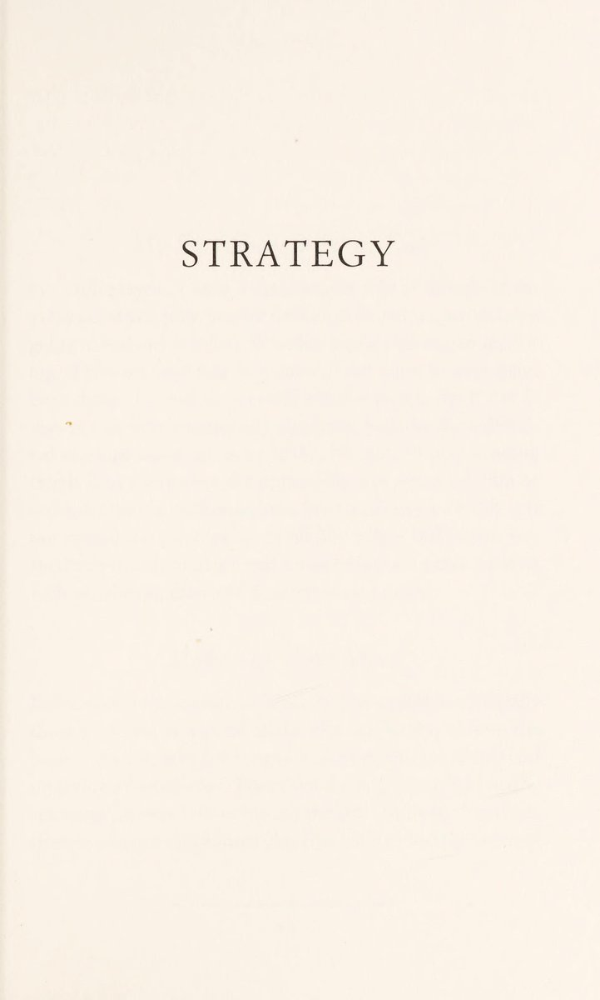
Nội dung đơn nam hay đơn nữ trong quần vợt đòi hỏi một tập hợp năng lực thể chất và phản xạ toàn diện bậc nhất trong thế giới thể thao. Khác với bóng bầu dục—nơi bạn chỉ cần hỏi vị trí thi đấu để biết mẫu vận động viên (một hậu vệ cản phá cần sức mạnh cơ bắp tuyệt đối nhưng không cần kỹ năng vận động tinh tế)—một tay vợt quần vợt buộc phải là một vận động viên toàn năng: Bạn phải có sự phối hợp tay-mắt cực kỳ khéo léo để tiếp xúc bóng chuẩn xác, đôi chân nhanh như một vận động viên chạy nước rút để bao quát toàn sân, và sức bền thép để duy trì phong độ suốt 5 set đấu kéo dài 4 đến 5 tiếng đồng hồ.
Một trong những lý do quần vợt Mỹ từng có giai đoạn tụt lại phía sau là vì trong một thời gian dài, môn thể thao này không thu hút được những vận động viên thể chất tốt nhất từ học đường. Những siêu sao như Michael Jordan, Jackie Joyner-Kersee hay Danny Ainge nếu được đào tạo bài bản về quần vợt từ nhỏ hoàn toàn có thể trở thành những con quái vật đáng sợ trên sân đấu.
Hơn nữa, tố chất của một nhà vô địch không chỉ đo đếm bằng cơ bắp, mà nằm ở các yếu tố 'vô hình': Trí thông minh không gian (khả năng tính toán vị trí đối thủ và đưa bóng vào nơi họ không có mặt—như Magic Johnson trong bóng rổ hay John McEnroe trong quần vợt), tinh thần chiến đấu ngoan cường không bao giờ đầu hàng (như Jimmy Connors), và bộ não phân tích chiến thuật nhạy bén để tự điều chỉnh thế trận từ bại thành thắng khi thi đấu đơn độc trên sân mà không có sự trợ giúp của huấn luyện viên.
Nguyên bản: “Tennis Players as Athletes” — Tennis demands consummate general athleticism: fine motor coordination, sprint speed, endurance, spatial intelligence, and solo tactical problem-solving.
2. Khoảng Cách Thi Đấu Giữa Nam Và Nữ (Men vs. Women) (#PL02)
Phân tích thực tế sinh lý học, tâm lý thi đấu và sự bất hợp lý của các trận đấu biểu diễn chấp điểm.
Sự thật là những tay vợt nữ kiệt xuất như Steffi Graf có thể đánh bại 95% nam giới chơi quần vợt trên toàn thế giới. Nhưng trước 5% nam vận động viên ưu tú hàng đầu và những tay vợt nam thi đấu đại học có thứ hạng, khoảng cách sinh học là điều không thể phủ nhận.
Nam giới có cấu trúc cơ bắp dày hơn, mật độ cơ xương cao hơn, tốc độ xuất phát và sức mạnh phần thân trên vượt trội, giúp họ tung ra những quả giao bóng và smash với vận tốc khủng khiếp. Dẫu vậy, khoảng cách về tốc độ và sức bền giữa hai giới đang ngày càng được thu hẹp đáng kể nhờ các phương pháp huấn luyện thể lực hiện đại.
Khi trận đấu biểu diễn giữa Jimmy Connors và Martina Navratilova diễn ra tại Las Vegas năm 1992, ban tổ chức đã áp dụng luật chấp kỳ lạ: Connors chỉ được giao một quả và phải bao quát thêm cả một hành lang đánh đôi. Tôi cho rằng việc chấp điểm và thay đổi luật lệ như vậy đã phá hủy hoàn toàn ý nghĩa thể thao đích thực của cuộc so tài. Nếu thực sự muốn kiểm tra năng lực sòng phẳng giữa nam và nữ, hãy để cả hai thi đấu theo đúng luật chuẩn quốc tế trên nhiều mặt sân khác nhau, thay vì biến nó thành một màn xiếc thương mại đầy toan tính.
Nguyên bản: “Men vs. Women” — Physical realities between men and women in tennis, closing athletic gaps, and why gimmick-handicapped exhibition matches undermine genuine sporting merit.
3. Người Mỹ Gốc Phi Trong Môn Thể Thao Của Giới Thượng Lưu (#PL03)
Những rào cản vô hình, trách nhiệm làm ngọn cờ đầu và cơ hội biến sự khác biệt thành động lực truyền cảm hứng.
Mỗi khi tôi tới thăm các trường học nhân Tháng Lịch sử Người Da Màu, lũ trẻ luôn tò mò hỏi tôi cảm giác thế nào khi là một trong số ít ỏi những người Mỹ gốc Phi thi đấu trong môn thể thao vốn độc quyền của giới thượng lưu da trắng.
Vào thập niên 1950, khi thầy tôi là bác sĩ Robert Walter Johnson thành lập chương trình đào tạo tài năng trẻ da màu, tất cả chúng tôi từng lạc quan tin rằng sau bước đột phá mở đường của nữ huyền thoại Althea Gibson và bản thân tôi, một làn sóng vận động viên da màu rầm rộ sẽ tràn vào quần vợt giống như Jackie Robinson đã làm với môn bóng chày. Nhưng điều đó đã không diễn ra nhanh chóng như mong đợi. Rào cản ở đây không chỉ là định kiến xã hội, mà còn là chi phí đào tạo đắt đỏ và các rào cản văn hóa khép kín của các câu lạc bộ truyền thống.
Khi bạn là một trong số ít những người thuộc nhóm thiểu số vươn lên đỉnh cao, mọi hành vi của bạn—dù đúng hay sai—đều bị săm soi dưới kính hiển vi của dư luận. Tuy nhiên, nếu bạn biết biến sự chú ý đặc biệt ấy thành cơ hội tích cực bằng nhân cách cao đẹp, sự thông tuệ, phong thái lịch thiệp và nụ cười ấm áp, bạn không chỉ có thể tiến rất xa trong sự nghiệp mà còn mở toang cánh cửa hy vọng cho hàng ngàn đứa trẻ có hoàn cảnh khó khăn bước theo.
Nguyên bản: “African Americans in a White Sport” — Arthur Ashe's candid reflections on racial barriers in tennis, high-profile scrutiny, and utilizing minority visibility as a platform for lasting social empowerment.
4. Sự Thật Về Bảng Xếp Hạng Top 10 & Hệ Thống Máy Tính ATP (#PL04)
Ý nghĩa thực sự của việc lọt vào top thế giới và những hạn chế của hệ thống tính điểm không phân biệt mặt sân.
Trước khi hệ thống bảng xếp hạng máy tính chính thức ra đời vào năm 1973, bảng xếp hạng thế giới chỉ là những danh sách top 10 mang tính chủ quan do các nhà báo và tạp chí quần vợt bình chọn vào cuối năm. Sự ra đời của máy tính đã đem lại một cuộc cách mạng: thiết lập một hệ thống khách quan, minh bạch để các tay vợt giành quyền tham dự giải đấu dựa trên thành tích thực tế, xóa bỏ hoàn toàn nạn thiên vị và quan hệ cá nhân của các nhà tổ chức giải thời kỳ trước.
Người hâm mộ thường xem việc lọt vào Top 10 thế giới là một điều gì đó vô cùng đặc biệt. Đúng là như vậy, nhưng trên thực tế chuyên môn, khoảng cách giữa Top 3 hoặc Top 4 với phần còn lại mới thực sự là vực thẳm. Khoảng cách về đẳng cấp và điểm số giữa tay vợt số 1 thế giới với tay vợt số 6 hay số 7 cũng lớn tương đương khoảng cách giữa số 7 và số 35!
Một trong những hạn chế lớn nhất của hệ thống xếp hạng máy tính thời bấy giờ là nó không tính điểm phân hóa theo từng mặt sân chuyên biệt. Một tay vợt có thể tích lũy điểm số khổng lồ nhờ thi đấu triền miên trên mặt sân đất nện, để rồi khi đến Wimbledon, anh ta được xếp làm hạt giống hàng đầu trên mặt sân cỏ dẫu kỹ năng chơi bóng trên cỏ hoàn toàn non nớt. Điều này đôi khi tạo ra những nhánh đấu bất công và làm giảm đi sự cạnh tranh khốc liệt của các giải đấu đỉnh cao.
Nguyên bản: “The Top Ten and Computer Rankings” — The advent of computerized ATP rankings in 1973, the monumental skill chasm between the top 3 and the rest of the top 10, and limitations of surface-blind seedings.
5. John McEnroe: Thiên Tài Bất Hảo & Trận Chiến Nội Tâm (#PL05)
Cái nhìn sâu sắc của Arthur Ashe về tài năng vô tiền khoáng hậu của McEnroe và những xung đột tính cách khi làm đội trưởng Davis Cup.
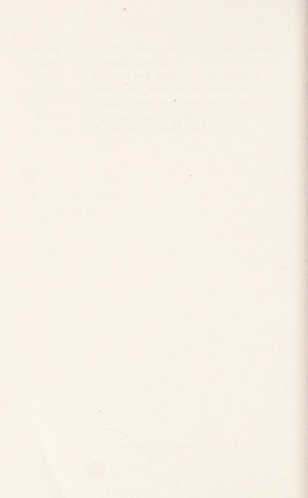
John McEnroe là một con người luôn mê hoặc và ám ảnh người hâm mộ. Về bản chất sâu xa, John là một con người tử tế và có lòng trắc ẩn: cậu ấy từng thẳng thừng từ chối lời mời thi đấu với mức lót tay 1 triệu đô la tại Nam Phi vì không chấp nhận chế độ phân biệt chủng tộc Apartheid. Nhưng trong sức nóng thi đấu, cậu ấy thường xuyên để lộ những hành vi thô lỗ, hằn học và mất kiểm soát.
Tôi chưa bao giờ tin vào lập luận cho rằng tính khí bốc đồng của John chỉ đơn giản là biểu hiện của một 'người cầu toàn'. Rất nhiều người dùng cái mác cầu toàn để ngụy biện cho sự bất lực trong việc kiềm chế cơn nóng giận của mình. John luôn đòi hỏi sự hoàn hảo tuyệt đối từ các trọng tài dây, mà quên mất rằng con người ai cũng có thể mắc sai lầm.
Trong 5 năm tôi làm đội trưởng đội tuyển Davis Cup Hoa Kỳ, John là ngôi sao sáng giá nhất, nhưng giữa tôi và cậu ấy là sự đối đầu giữa hai trường phái sống và triết lý thể thao hoàn toàn khác biệt. Đỉnh điểm căng thẳng diễn ra tại trận chung kết Davis Cup 1981 ở Cincinnati gặp Argentina. Những hành vi khiêu khích quá mức của John trong trận đánh đôi suýt dẫn tới ẩu đả. Khi John trách tôi không bảo vệ cậu ấy trước trọng tài, tôi đã nhìn thẳng vào mắt cậu ấy và nói: 'Tôi sẽ không bao giờ đứng ra bảo vệ cậu khi cậu sai rõ ràng. Cậu đang bắt tôi phải bẻ cong quy chuẩn đạo đức của chính mình để chiều theo sự bốc đồng của cậu.'
Về mặt tài năng thuần túy trên sân quần vợt, tôi khẳng định chưa từng thấy ai sở hữu đôi bàn tay ma thuật vĩ đại hơn John McEnroe. Cậu ấy có thể làm được những điều với cây vợt mà không một tay vợt nào trong quá khứ hay hiện tại làm được. Cậu ấy hoàn toàn có tố chất để trở thành một 'Michael Jordan của làng quần vợt'. Nhưng thật đau xót, những trò hề mất kiểm soát ấy đã hủy hoại rất nhiều cơ hội vĩ đại của chính cậu ấy và làm tổn thương uy tín của môn thể thao này.
Nguyên bản: “John McEnroe: The Flawed Genius” — Ashe's nuanced evaluation of John McEnroe: an unprecedented, otherworldly shotmaking genius whose uncontrolled temper and entitlement undermined his ultimate legacy.
6. Những 'Đứa Trẻ Hư' (Tennis Brats) & Sự Ra Đời Của Hệ Thống Phạt Điểm (#PL06)
Nguyên nhân tạo nên tính khí ích kỷ của các ngôi sao trẻ và hiệu quả răn đe của hệ thống luật xử phạt trực tiếp trên sân.
Tại sao làng quần vợt từng có giai đoạn xuất hiện nhiều 'đứa trẻ hư' (tennis brats)? Có hai nguyên nhân chính: Thứ nhất, các tay vợt trẻ nhận ra rất sớm rằng sự tai tiếng và tranh cãi bán được rất nhiều tiền (controversy sells). Những vụ cãi vã thu hút sự chú ý của truyền thông và đem lại danh tiếng thương mại. Thứ hai, các ngôi sao trẻ có quyền lực tuyệt đối với bộ máy phục vụ xung quanh họ—từ cha mẹ, huấn luyện viên, bác sĩ trị liệu đến người đại diện. Khi bạn quá tài năng, mọi người xung quanh đều nuông chiều và thỏa hiệp với những thói hư tật xấu của bạn. Họ lớn lên mà không học được cách tuân thủ các chuẩn mực đạo đức xã hội.
Hệ thống Phạt Điểm (Point Penalty System: cảnh cáo -> phạt điểm -> phạt game -> xử thua) mà quần vợt chuyên nghiệp áp dụng ngày nay là một bước tiến mang tính cứu rỗi. Nó cho phép các trọng tài trừng phạt sai phạm ngay lập tức trên sân thay vì phải chờ đợi một quy trình tố tụng hành chính chậm chạp sau trận đấu. Quyết định truất quyền thi đấu của John McEnroe tại Australian Open 1990 chính là một hồi chuông cảnh tỉnh lịch sử, buộc các vận động viên phải học cách tự chịu trách nhiệm về hành vi của mình.
Nguyên bản: “Tennis Brats and the Point Penalty System” — Analyzing root causes behind 'tennis brats', the commercial exploitation of controversy, and how the Point Penalty System restored accountability to tennis.
7. Andre Agassi: Nghệ Sĩ Đánh Trục Cuối Sân & Cú Thuận Tay Sấm Sét (#PL07)
Phân tích kỹ thuật đánh bóng trên đà nảy (on the rise) và cơ chế phát lực vai phi thường của Andre Agassi.
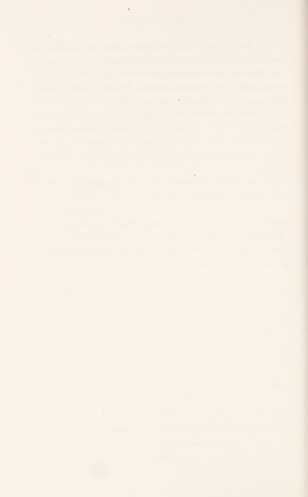
Andre Agassi—nhà vô địch Wimbledon 1992—là một trong những tay vợt đánh cuối sân thú vị nhất trong lịch sử, bởi vì cậu ấy không chỉ dựa vào sự bền bỉ phòng thủ; cậu ấy là một nghệ sĩ tung đòn dứt điểm (shotmaker). Cậu ấy sẵn sàng tung ra những cú đánh bạt bão táp ăn điểm ngay khi nhìn thấy một khe hở nhỏ nhất.
Vũ khí mang tính thương hiệu trong kho vũ khí của Agassi chính là cú thuận tay (forehand). Agassi luôn điều tiết đường bóng để có thể tung ra càng nhiều cú thuận tay càng tốt. Đặc biệt, cậu ấy thích đứng ngay trên hoặc bước vào trong vạch cuối sân để đánh bóng ngay trên đà nảy (hit on the rise), cướp hoàn toàn thời gian phản xạ của đối phương.
Làm thế nào một tay vợt có thể hình khiêm tốn như Agassi (chỉ cao 1m78, nặng 68 kg) lại có thể đánh bóng mạnh đến mức kinh hoàng như vậy? Một phần là nhờ thiên bẩm về khả năng căn thời điểm (timing). Nhưng yếu tố kỹ thuật cốt tử bắt đầu từ sự xoay trục vai hoàn hảo: Agassi xoay vai gần như 90 độ ra sau ngay từ khi bóng đối phương vừa rời mặt vợt. Khi vung vợt vào bóng, cậu ấy giải phóng toàn bộ năng lượng xoắn như một chiếc lò xo bật tung, tạo ra tốc độ đầu vợt (racquet-head speed) khủng khiếp.
Nguyên bản: “Andre Agassi: The Flashy Shotmaker” — Deconstructing Andre Agassi's explosive baseline firepower: aggressive early shoulder rotation, taking balls on the rise, and immense racket-head speed.
8. Boris Becker: Hình Mẫu Vận Động Viên Đương Đại & Ngọn Lửa Thi Đấu (#PL08)
Sức mạnh cơ bắp, lối chơi tấn công toàn diện và tinh thần chiến đấu rực lửa của 'Boom Boom' Becker.
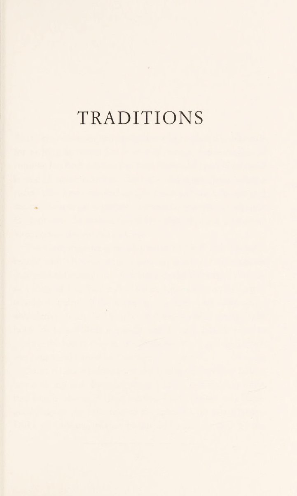
Khi Boris Becker đăng quang chức vô địch Wimbledon đầu tiên trong số 3 danh hiệu của mình ở tuổi 17, tôi đã nhận định rằng cậu ấy chính là hình mẫu nguyên mẫu của các nhà vô địch quần vợt tương lai. Cậu ấy cao lớn, vạm vỡ (1m88, nặng 82 kg), sở hữu nền tảng thể lực và khả năng phối hợp vận động tuyệt luân. Sự xuất hiện của Becker đánh dấu bước chuyển giao thế hệ, khép lại kỷ nguyên thống trị của những tay vợt thể hình trung bình như Bjorn Borg hay John McEnroe, mở ra kỷ nguyên của những người khổng lồ giao bóng sấm sét như Jim Courier, Pete Sampras hay Michael Stich.
Điểm tôi thích nhất ở Becker là lối chơi tấn công toàn diện khắp mặt sân (all-court game). Khác với các thần đồng đoạt Grand Slam thời niên thiếu ở vạch cuối sân như Wilander hay Borg, Becker đã lao lên lưới dũng mãnh ngay từ năm 17 tuổi.
Một lý do giúp Becker di chuyển nhanh nhẹn phi thường so với thể hình hộ pháp của mình là vì cậu ấy từng chơi bóng đá rất nhiều thời đi học. Becker luôn gợi tôi nhớ đến Jimmy Connors ở thái độ thi đấu: Cậu ấy say mê và tận hưởng bầu không khí chiến trận rực lửa (relishes the combat). Bạn có thể cảm nhận nguồn năng lượng bùng nổ khi cậu ấy bay người nhoài mình bắt những cú volley sát mặt cỏ. Thái độ hào hứng chiến đấu ấy giúp Becker luôn nâng tầm đẳng cấp của mình ở những thời khắc ngặt nghèo nhất.
Nguyên bản: “Boris Becker: Prototype of Future Champions” — Boris Becker as the muscular blueprint for modern power tennis: all-court versatility, soccer-honed agility, and an infectious love for fierce on-court combat.
9. Michael Chang: Chàng David Nhỏ Bé & Trí Tuệ Chiến Thuật Tuyệt Đỉnh (#PL09)
Cách Michael Chang dùng bộ não thông minh và tốc độ thần tốc để quật ngã những gã khổng lồ cao lớn.
Nhà vô địch Roland Garros 1989 Michael Chang (chỉ cao 1m73, nặng 61 kg) thực sự là một chàng David nhỏ bé bước ra đấu trường đối đầu với những gã khổng lồ Goliath cao trên 1m85 trong hầu hết các trận đấu. Cậu ấy không có chiều cao hay đòn bẩy cơ học để giao bóng như tên bắn như Pete Sampras hay đánh thuận tay sấm sét như Jim Courier. Do đó, nền tảng trong lối chơi của Chang là sự kiên trì phòng thủ và chờ đợi thời cơ khoét sâu vào điểm yếu của đối thủ.
Bù đắp cho sự thua thiệt về thể hình, Chang là một trong những tay vợt thông minh nhất mà tôi từng chứng kiến trên đời. Cậu ấy bước ra sân với một kế hoạch chiến thuật được vạch sẵn tỉ mỉ, tận dụng tối đa tốc độ di chuyển ngang xuất chúng để khắc chế đối phương.
Vũ khí nguy hiểm nhất của Chang là cú trả giao bóng: Cậu ấy chủ động bước hẳn vào trong vạch cuối sân, mượn lực giao bóng của đối thủ để bắn trả những đường bóng chìm sát mũi giày của các tay vợt giao bóng lên lưới, ép họ phải bắt volley từ dưới thấp rồi bình tĩnh tung cú passing hoặc lốp bóng bổng qua đầu. Chang là tấm gương sáng ngời cho thấy trí tuệ và ý chí thi đấu hoàn toàn có thể san bằng mọi bất lợi về mặt thể chất.
Nguyên bản: “Michael Chang: David vs. Goliath” — Michael Chang's strategic brilliance: turning physical stature disadvantages into tactical assets via rapid foot speed, aggressive return positioning, and razor-sharp intellect.
10. Jim Courier: Đôi Chân Tốc Độ, Cú Thuận Tay Sát Thủ & Ý Chí Bất Khuất (#PL10)
Chiến thuật 'né trái đánh phải' inside-out trứ danh và tinh thần chiến đấu như một chú chó bun không bao giờ nhả mồi.
Khi Jim Courier mới bước chân vào làng quần vợt chuyên nghiệp, người ta từng lầm tưởng cậu ấy chỉ là một chuyên gia sân đất nện. Nhưng với 2 chức vô địch Roland Garros, 2 chức vô địch Australian Open và ngôi á quân US Open trên sân cứng, Courier đã chứng minh cậu ấy là một thế lực đáng gờm trên mọi bề mặt sân.
Courier sở hữu ba thứ vũ khí hủy diệt: Đôi chân di chuyển cực nhanh, cú thuận tay chết chóc và tinh thần thi đấu bền bỉ như một chú chó bun—một khi đã cắn vào chân đối thủ thì quyết không bao giờ nhả ra. Đòn đánh ưa thích của cậu ấy là chủ động đứng né hẳn sang góc sân bên trái ở vạch cuối sân để tung ra cú thuận tay bạt chéo vào góc trái tay của đối thủ thuận tay phải (inside-out forehand). Cậu ấy liên tục dội bom theo bài đánh mẫu mực này cho tới khi đối thủ buộc phải trả một quả bóng ngắn, và ngay lập tức Courier sẽ tung cú dứt điểm kết liễu.
Không một ai muốn phải bước ra sân đối đầu với một kẻ quyết không bao giờ đầu hàng như Courier. Lối chơi rực lửa và ý chí sắt đá của cậu ấy là bài học đắt giá cho bất kỳ ai muốn vươn tới đỉnh cao.
Nguyên bản: “Jim Courier: Fast Feet, Killer Forehand and Tenacity” — Jim Courier's relentless inside-out forehand barrage, compact baseball-like swings, phenomenal footwork, and bulldog competitive ferocity.
11. Stefan Edberg: Bậc Thầy Giao Bóng Lên Lưới Đỉnh Cao (#PL11)
Kỹ thuật tiếp cận lưới thần tốc, động tác volley cô đọng hoàn mỹ và cú trái tay một tay đẹp nhất làng banh nỉ.
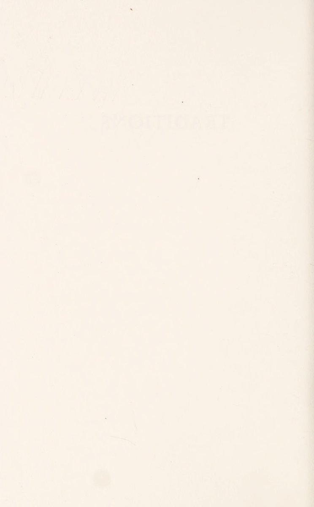
Stefan Edberg là biểu tượng tối thượng của nghệ thuật giao bóng lên lưới (serve-and-volley) trong kỷ nguyên hiện đại. Cú trái tay một tay của Edberg có lẽ là cú đánh thanh thoát và đẹp mắt nhất trong lịch sử môn thể thao này.
Bí quyết giúp Edberg làm chủ lưới nằm ở tốc độ lao lên sau quả giao bóng: Ngay khi hoàn tất động tác phát bóng, cơ thể cậu ấy đã ở sâu trong sân ít nhất gần 1 mét. Nhờ áp sát lưới cực nhanh, Edberg có thể dứt điểm điểm số ngay từ cú volley đầu tiên (first volley) nhiều hơn bất kỳ tay vợt nào khác trên thế giới. Động tác volley của Edberg ở cả hai bên đều vô cùng cô đọng và sắc bén: Tuyệt đối không hề có động tác vung vợt thừa thãi. Nguyên lý ở đây là: Càng ít chuyển động vợt, cú bắt volley càng chính xác và ổn định.
Một khi đã lên lưới, Edberg luôn bước chéo lên phía trước để đón đầu quả bóng passing thay vì chỉ di chuyển ngang thuần túy. Quán tính lao về phía trước truyền toàn bộ năng lượng vào mặt vợt vững chắc, tạo nên những cú volley cắm thẳng và hiểm hóc. Ngay cả khi đang bị dẫn điểm, Edberg chưa bao giờ từ bỏ chiến thuật tấn công lên lưới, khiến đối thủ luôn phải chịu áp lực ngột ngạt không một giây ngơi nghỉ.
Nguyên bản: “Stefan Edberg: The Supreme Serve-and-Volleyer” — Analyzing Stefan Edberg's peerless serve-and-volley mastery: lightning first-step court penetration, minimal racket takeback on volleys, and forward intercepting angles.
12. Steffi Graf: Cú Thuận Tay Sấm Sét, Bộ Chân Thần Tốc & Khát Khao Bất Tận (#PL12)
Giải mã sức mạnh thống trị của huyền thoại Steffi Graf qua đôi chân siêu việt và tinh thần tập trung cao độ.
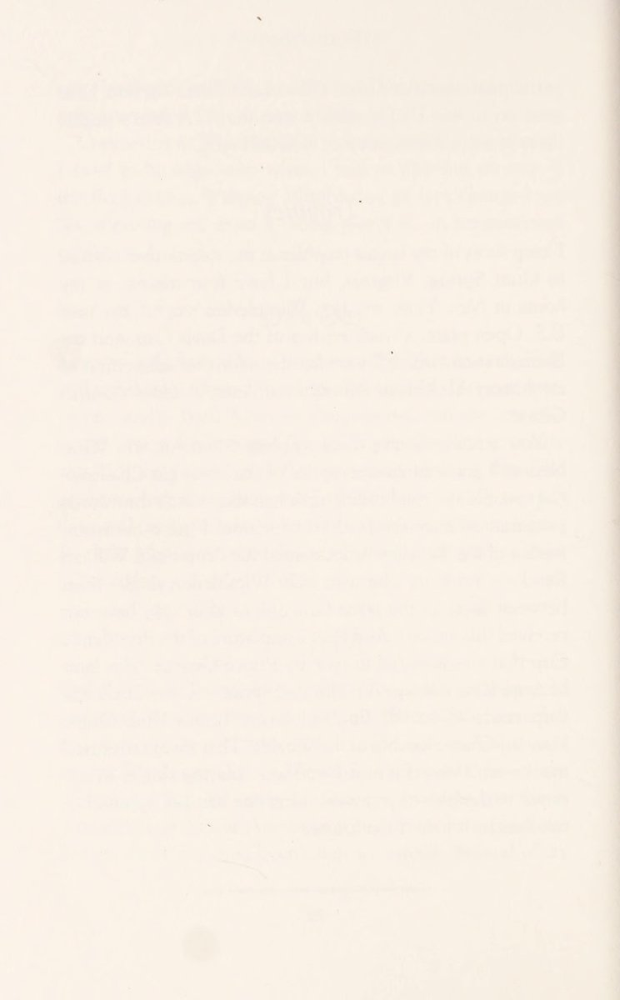
Lần đầu tiên tôi chứng kiến Steffi Graf thi đấu là tại Thế vận hội Los Angeles 1984, khi cô mới 15 tuổi. Ngay lúc đó, tôi đã thốt lên rằng đây là tài năng xuất chúng chắc chắn sẽ thống trị thế giới kể từ sau thời John McEnroe. Và thực tế lịch sử đã chứng minh tôi hoàn toàn đúng.
Cú thuận tay (forehand) sấm sét và tốc độ di chuyển của Graf là hai thứ vũ khí mang tính hủy diệt. Đôi khi Graf tiếp xúc bóng có vẻ hơi muộn so với điểm chạm lý tưởng, nhưng hiệu quả mang lại là không thể bàn cãi. Chìa khóa thành công nằm ở bộ chân thần tốc: Graf luôn dùng đôi chân cực nhanh của mình để có mặt tại vị trí đánh bóng sớm hơn người khác một tích tắc. Nếu chân bạn đã ở đúng vị trí kịp thời, bạn có thể bù đắp lại một cú vung vợt hơi muộn; nhưng nếu chân bạn đến bóng muộn, bạn sẽ hoàn toàn bất lực!
Sự tỉnh táo và khả năng bứt tốc tức thì của Graf bắt nguồn từ ngọn lửa khát khao chiến thắng cháy bỏng và tinh thần kỷ luật nghiêm ngặt. Trên sân đấu, Graf không bao giờ có một giây phút lơ là hay hời hợt; cô luôn cống hiến 100% năng lượng trong từng đường bóng.
Nguyên bản: “Steffi Graf: Forehand, Footwork and Fierce Drive” — Steffi Graf's legendary dominance: combining devastating forehand firepower with unmatched footwork quickness, immaculate discipline, and relentless competitive intensity.
13. Pete Sampras: Quyết Định Chuyển Trái Một Tay & Tầm Nhìn Dài Hạn (#PL13)
Bài học đắt giá về việc hy sinh chiến thắng ngắn hạn ở giải trẻ để xây dựng lối chơi tấn công toàn diện lên ngôi vô địch Grand Slam.
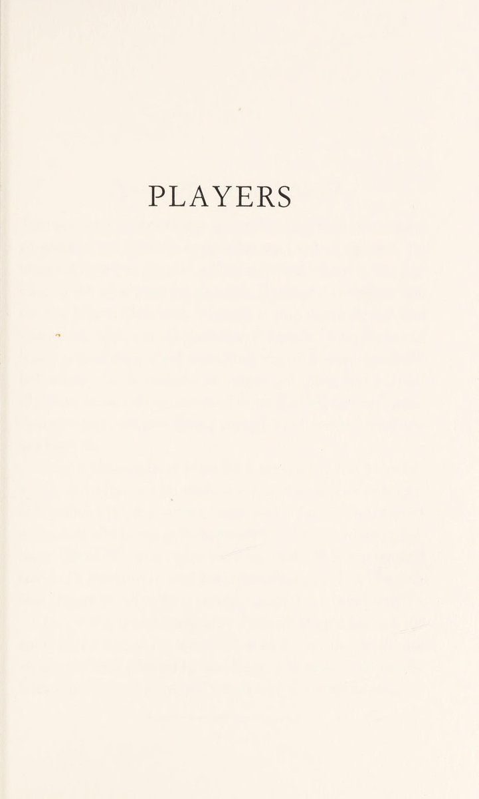
Pete Sampras là một tài năng thiên bẩm có thể làm được mọi điều với quả bóng nỉ. Khác với phần lớn các tay vợt trẻ đương thời thường bám chặt lấy vạch cuối sân, Sampras phát triển thành một tay vợt công thủ toàn diện với lối đánh giao bóng lên lưới thanh thoát. Để đạt được đẳng cấp đó, Sampras và huấn luyện viên Peter Fischer đã đưa ra hai quyết định vô cùng dũng cảm và khác biệt:
1. Chuyển từ cú trái hai tay sang cú trái một tay ở tuổi 15: Với cú trái một tay, Sampras sở hữu tầm với rộng hơn, sự biến hóa đa dạng giữa cắt slice phòng thủ, đánh bóng bạt phẳng và topspin tấn công. Điều này giúp anh dễ dàng tung đòn tiếp cận lưới mà không cần phải thay đổi kiểu cầm vợt khi chuyển sang bắt volley trái tay. 2. Chấp nhận đôn lứa thi đấu với các đối thủ lớn tuổi hơn (playing up): Rất nhiều tay vợt trẻ bị trói buộc vào lối đánh bóng an toàn ở cuối sân để kiếm tìm chiến thắng ở các giải thiếu niên, nhưng điều đó sẽ kìm hãm sự phát triển khi bước lên thi đấu chuyên nghiệp đỉnh cao. Bằng cách chấp nhận thua trận trước những đàn anh lớn tuổi hơn, Sampras đã có không gian tự do để thử nghiệm các cú giao bóng lên lưới mạo hiểm mà không phải chịu áp lực thành tích. Tầm nhìn dài hạn dũng cảm ấy đã biến cậu ấy thành nhà vô địch US Open 1990 ở tuổi 19 và một trong những huyền thoại vĩ đại nhất lịch sử quần vợt.
Nguyên bản: “Pete Sampras: Switch to One-Hander and Long-Term Vision” — Pete Sampras's transformative career decisions: sacrificing juvenile winning streaks to convert to a one-handed backhand and hone an attacking serve-and-volley arsenal for the long term.
14. Arantxa Sanchez Vicario: Nghệ Thuật Bỏ Nhỏ Tinh Quái & Tinh Thần Quật Khởi (#PL14)
Lối đánh bền bỉ kiên cường, vũ khí bỏ nhỏ phá cách và sức mạnh từ một gia đình quần vợt gắn kết.
Arantxa Sanchez Vicario đã làm chấn động thế giới khi đánh bại Steffi Graf để vô địch Roland Garros 1989 khi mới 17 tuổi. Kể từ thời điểm đó, cô luôn là một trong những biểu tượng bền bỉ và giàu tinh thần chiến đấu nhất của quần vợt nữ thế giới.
Với chiều cao 1m68, Sanchez Vicario xây dựng một lối chơi hoàn hảo cho thể hình của mình: Cô cực kỳ linh hoạt, di chuyển không biết mệt mỏi và luôn trả những quả bóng có quỹ đạo cầu vồng cao trên lưới để mua đủ thời gian hồi phục vị trí cho đòn đánh tiếp theo. Cô chỉ dứt điểm khi nhìn thấy khoảng trống thực sự rộng mở.
Tuy nhiên, thứ vũ khí đặc sắc nhất trong kho vũ khí của Sanchez Vicario chính là cú bỏ nhỏ (drop shot). Thông thường, bỏ nhỏ là một con dao hai lưỡi nguy hiểm nếu lạm dụng. Nhưng Arantxa đã thách thức mọi quy ước: Cô bỏ nhỏ liên tục trong mọi trận đấu, và thành công rực rỡ nhờ kỹ thuật chạm bóng tinh tế và độ giấu đòn hoàn hảo. Cô không nhất thiết phải tìm kiếm một cú ăn điểm trực tiếp từ cú bỏ nhỏ; cô dùng nó để ép đối thủ phải hớt hải lao lên lưới trong tư thế với bóng, biến họ thành con mồi ngon ăn cho những cú lốp bóng hay passing hiểm hóc ở nhịp đánh tiếp theo.
Nguyên bản: “Arantxa Sanchez Vicario: Drop-Shot Mastery and Family Spirit” — Arantxa Sanchez Vicario's gritty counterpunching brilliance, deceptive drop-shot artistry, and the invaluable competitive anchor of a supportive tennis family.
Tâm Lý Học Thi Đấu
1. Những Yếu Tố Cốt Tử Để Trở Thành Nhà Vô Địch (#PS01)
Tại sao tài năng cơ bắp thuần túy không bao giờ đủ nếu thiếu đi ý chí, trí tuệ chiến thuật và tính khí kiên định.
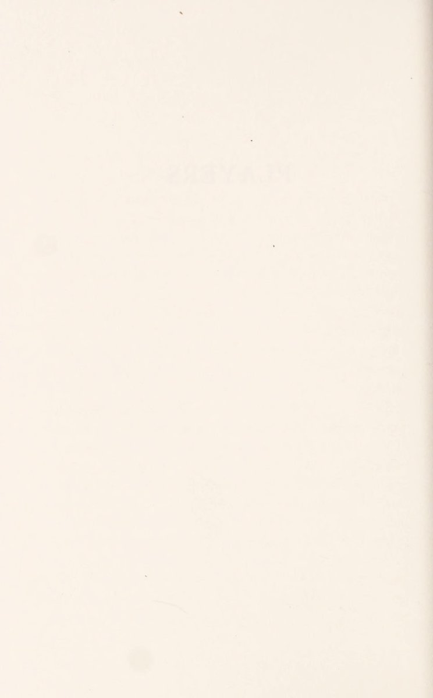
Trong một trận đấu quần vợt đỉnh cao, người giành chiến thắng chung cuộc không đơn thuần chỉ là người sở hữu nhiều tài năng thiên bẩm hơn. Một tay vợt có thể nỗ lực chiến đấu bền bỉ hơn một chút; một tay vợt có thể tư duy chiến thuật thông minh hơn một chút; một tay vợt có thể có nền tảng thể lực sung mãn hơn; hoặc một tay vợt sở hữu tính khí điềm đạm, vững vàng hơn trước sóng gió. Tổng hòa của tất cả những yếu tố đó hoàn toàn có thể vô hiệu hóa lợi thế tài năng của đối phương.
Hãy làm một phép so sánh kinh điển: Trong thời kỳ đỉnh cao phong độ, ai là người tài năng hơn giữa John McEnroe và Jimmy Connors? Chắc chắn đó là McEnroe, không cần bàn cãi. Nhưng nếu bạn nhìn vào số lượng danh hiệu vô địch chuyên nghiệp mà mỗi người đạt được, Connors áp đảo hoàn toàn: Connors sở hữu kỷ lục vô tiền khoáng hậu với 109 chức vô địch ATP (so với 77 của McEnroe) và 8 danh hiệu Grand Slam đơn (so với 7 của McEnroe).
Để trở thành một nhà vô địch thực thụ, bạn không thể chỉ là một người biết tung ra những cú đánh bóng đẹp mắt (shotmaker); bạn buộc phải rèn luyện bản thân trở thành một chiến binh thi đấu khốc liệt (fierce competitor).
Nguyên bản: “What It Takes to Win” — Winning transcends raw talent: relentless effort, tactical intelligence, superior conditioning, and emotional composure combine to overcome pure shotmaking ability.
2. Tận Hưởng Sức Nóng Cuộc Chiến (Relish the Combat) (#PS02)
Sức mạnh của ngôn ngữ cơ thể, thần thái tự tin áp đảo và ngọn lửa cạnh tranh rực cháy.
Không một ai yêu thích bầu không khí đối đầu rực lửa của một trận đấu quần vợt hơn Jimmy Connors, đặc biệt là khi thi đấu trước hàng vạn khán giả cuồng nhiệt. Cậu ấy giống như một võ sĩ quyền anh hạng bán trung gan lì: Cậu ấy say mê lao vào các cuộc đọ sức giáp lá cà. Theo bộ luật thi đấu của Connors, bạn phải chạy cứu bóng trong mọi tình huống và chiến đấu đến giọt mồ hôi cuối cùng để giành lấy chiến thắng. Ngọn lửa thi đấu mãnh liệt đó đủ sức thiêu rụi một đối thủ có kỹ thuật đòn đánh hoa mỹ hơn.
Connors là một minh chứng sống động cho thấy bạn có thể chiếm ưu thế tâm lý lớn như thế nào thông qua ngôn ngữ cơ thể (body language) trên sân. Bạn phải luôn tỏa ra thông điệp: 'Tôi nhất định sẽ thắng trận đấu này.' Ngay cả khi đang bị dẫn trước hay rơi vào thế thất thế, tuyệt đối đừng bao giờ để đối phương biết rằng bạn đang hoang mang, thất vọng hay suy sụp.
Một thần thái điềm tĩnh, tự chủ và vững vàng được duy trì liên tục sẽ tạo ra một áp lực vô hình, bào mòn tinh thần đối thủ và mở ra con đường dẫn tới chiến thắng chung cuộc.
Nguyên bản: “Relish the Combat” — Relishing fierce competition and projecting unshakeable on-court body language: never let opponents detect frustration or doubt.
3. Tưởng Tượng Thành Công Trong Tâm Trí (Visualization) (#PS03)
Phương pháp hình dung đòn đánh hoàn hảo trong tâm trí để giải tỏa căng thẳng và thiết lập lại sự tự tin.
Trong quá trình hoàn thiện kỹ năng, việc được nhìn thấy bản thân thi đấu qua máy quay video và so sánh hình ảnh đó với chuẩn mực lý tưởng là vô cùng quan trọng. Đó là lý do bạn nên tìm kiếm những huấn luyện viên có trang bị hệ thống phân tích hình ảnh.
Nhưng quan trọng hơn thế, bạn cần rèn luyện năng lực hình dung trong tâm trí (visualization). Huyền thoại Pancho Gonzalez từng chia sẻ với tôi rằng mỗi khi cảm thấy cú đánh của mình có chút chuệch choạc, ông sẽ nhắm mắt lại và mường tượng sống động hình ảnh chính mình đang thực hiện cú đánh đó một cách hoàn hảo nhất.
Bạn cũng nên xây dựng trong tâm trí mình bức tranh chuẩn xác về cú đánh hoàn hảo của bản thân. Khi trận đấu rơi vào bế tắc hoặc khi bạn cảm thấy hồi hộp, lo âu, hãy nhắm mắt lại vài giây trước khi điểm số bắt đầu: Hãy nhìn thấy rõ nét đường bóng bay, điểm tiếp xúc ngọt ngào ở tâm vợt và quỹ đạo hoàn mỹ, sau đó mở mắt ra và dứt khoát thực hiện nó mà không cần bận tâm quá mức về kết quả tức thời.
Nguyên bản: “See Yourself Succeeding: The Power of Visualization” — Harnessing mental visualization: imaging perfect execution before executing points to clear anxiety and instill muscular trust.
4. Chế Ngự Hội Chứng 'Cóng Tay' (Coping with Choking): 4 Bước Vàng Vượt Qua Áp Lực (#PS04)
Quy trình 4 bước thực chiến giúp lập lại sự bình tĩnh khi đối mặt với thời khắc căng thẳng nghẹt thở.
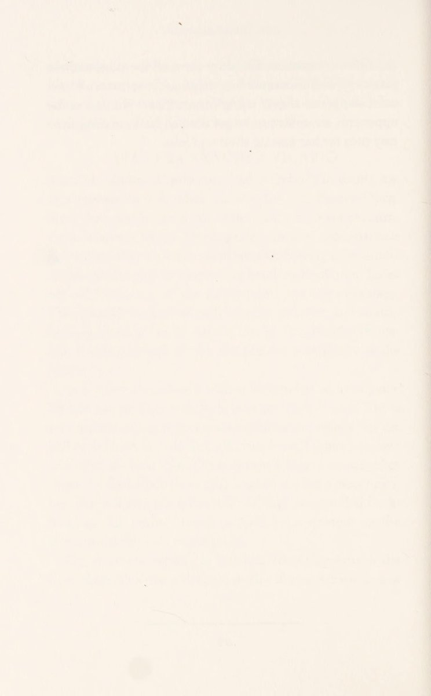
Tất cả mọi người đều từng bị 'cóng tay' (choke). Dù bạn là Rod Laver, Billie Jean King, John McEnroe, Andre Agassi hay Steffi Graf, ai cũng từng trải qua cảm giác tim đập thình thịch, các cơ bắp co cứng và đánh hỏng những quả bóng ngớ ngẩn ở thời khắc quyết định. Dấu hiệu phổ biến nhất là đánh bóng rụt rè khiến bóng rơi quá ngắn hoặc rúc thẳng vào giữa lưới.
Khi bạn nhận thấy mình bắt đầu hoảng loạn (ví dụ khi đang cầm giao bóng để kết thúc trận đấu), hãy áp dụng ngay quy trình 4 bước sau:
1. Làm chậm lại nhịp độ (Slow down): Những người bị cóng tay thường có xu hướng vội vàng giao bóng để mau chóng thoát khỏi áp lực. Đừng làm vậy! Hãy thực hiện đầy đủ thói quen chuẩn bị trước điểm số (routine), hít thở sâu và đo đếm từng nhịp thở để giảm nhịp tim sinh lý về trạng thái cân bằng. 2. Kiểm soát ngôn ngữ cơ thể: Đừng cúi đầu than vãn hay nhìn lên trời thở dài đầy tuyệt vọng; điều đó chỉ làm trầm trọng thêm cảm xúc tiêu cực bên trong bạn. Hãy nhìn vào mắt lưới của cây vợt để định thần, thả lỏng toàn bộ cơ bắp vai, rồi ngẩng cao đầu bước vào vị trí với dáng vẻ tự tin, hiên ngang. 3. Lập kế hoạch chiến thuật trước khi giao bóng: Đừng để bộ não phải đưa ra quyết định ngẫu hứng trong lúc bóng đang bay. Hãy quyết định dứt khoát từ vạch cuối sân: Giao bóng vào góc nào? Lên lưới hay ở lại? Đánh vào thuận tay hay trái tay của đối thủ? 4. Cam kết thực hiện trọn vẹn và chấp nhận kết quả: Một khi bóng đã rời vợt, hãy tin tưởng vào đòn đánh. Dù kết quả thắng hay thua điểm đó, bạn cũng có thể ngẩng cao đầu vì mình đã thi đấu đúng với đấu pháp định sẵn thay vì run rẩy tự sát.
Nguyên bản: “Coping with Choking: 4 Steps to Overcome Pressure” — The universal reality of choking and Ashe's proven 4-step antidote: slow down tempo, master body language, plan the point beforehand, and commit fully without fear of outcomes.
5. Thích Ứng Trước Các Yếu Tố Thiên Nhiên: Nắng Chói & Gió Lớn (#PS05)
Biến nghịch cảnh thời tiết khắc nghiệt thành đồng minh chiến lược để quật ngã đối thủ.
Người thầy đầu tiên của tôi, bác sĩ Robert Walter Johnson, luôn khắc sâu vào tâm trí tôi một thái độ tích cực trước các điều kiện thời tiết khắc nghiệt. Thời tiết càng tồi tệ—gió bão càng mạnh, nắng càng chói chang gay gắt—thì càng có lợi cho bạn, miễn là bạn có tư duy đúng đắn: Bởi vì chính những điều kiện đó đang làm đối thủ của bạn phát điên và mất bình tĩnh! Chuyên gia tâm lý Jim Loehr luôn dạy học trò tự nhủ mỗi khi trời nổi gió lớn: 'Tôi cực kỳ yêu thích điều này!'
Dưới đây là các chỉ dẫn kỹ thuật khi thi đấu dưới điều kiện khắc nghiệt: - Khi trời nắng chói chang: Đừng thay đổi điểm tung bóng giao bóng vì rất dễ làm hỏng kỹ thuật. Thay vào đó, hãy di chuyển vị trí đứng của bạn dịch sang trái hoặc phải vài chục cm dọc theo vạch cuối sân để tránh góc chiếu thẳng của mặt trời. Đội mũ lưỡi trai, đeo kính râm thể thao và đừng ngần ngại lốp bóng thẳng vào hướng mặt trời để làm lóa mắt đối thủ. - Khi có gió tạt ngang (crosswind): Hãy nhắm bóng sâu vào trong sân, cách mép đường biên ít nhất 1 mét để trừ hao gió thổi bóng ra ngoài. Bạn đánh bóng càng mạnh và căng thì ngọn gió càng ít có cơ hội làm chệch quỹ đạo bóng. - Khi gió xuôi sau lưng (tailwind): Bóng của bạn sẽ bay rất nhanh và sâu, trong khi bóng đối thủ bay chậm lại. Hãy sẵn sàng tràn lên tấn công các quả bóng ngắn và lao lên lưới dứt điểm. - Khi gió ngược trước mặt (headwind): Hãy vung hết biên độ tay trong mọi cú đánh và nâng trần bay của bóng cao hơn mặt lưới. - Với cú đập smash (overhead): Dưới trời nắng hoặc gió mạnh, trừ phi quả lốp của đối phương rơi quá bổng và non, hãy thận trọng để bóng chạm đất nảy lên rồi mới đập smash nhằm triệt tiêu rủi ro gió cuốn làm hụt bóng.
Nguyên bản: “Handling the Elements: Sun and Wind” — Conquering adverse weather: adapting baseline serving spots against blinding sun, tactical adjustments for crosswinds, headwinds, and tailwinds, and letting overheads bounce.
6. Vai Trò Của Tâm Lý Học Thể Thao & Rèn Luyện Tinh Thần (#PS06)
Tại sao rèn luyện tinh thần và kiểm soát cảm xúc có tầm ảnh hưởng quyết định không kém gì rèn luyện kỹ thuật cơ bắp.
Trước đây, tâm lý học thể thao từng bị nhiều người hoài nghi, nhưng ngày nay nó đã trở thành một phần không thể tách rời của thể thao thành tích cao. Những nhà vô địch vĩ đại như Gabriela Sabatini hay Pat Cash từng công khai gửi lời tri ân sâu sắc đến các chuyên gia tâm lý học thể thao của họ sau khi nâng cao chiếc cúp vô địch tại US Open và Wimbledon.
Trên sân quần vợt, kết quả của một trận đấu sít sao nghẹt thở thường được định đoạt bởi vỏn vẹn 4 hoặc 5 điểm số then chốt. Nếu bạn liên tục để thua trong những trận đấu giằng co như vậy, lý do không phải vì đối thủ đánh đẹp hơn bạn, mà vì họ vững vàng hơn bạn về mặt bản lĩnh tâm lý ở những thời khắc ngặt nghèo.
Bạn cần học cách làm chủ cảm xúc của chính mình để có thể phát huy trọn vẹn năng lực kỹ thuật vốn có. Rèn luyện sự dẻo dai của tinh thần, học cách buông bỏ sai lầm vừa qua và duy trì trạng thái tỉnh thức tối cao chính là bước chuyển hóa quan trọng nhất biến một người chơi giỏi thành một nhà vô địch bất khả chiến bại.
Nguyên bản: “Sports Psychologists and Mental Training” — The crucial role of sports psychology in elite tennis: winning the 4 or 5 critical points that decide tight matches through disciplined emotional control.
Cẩm Nang & Đánh Đôi
1. Thiết Lập Lịch Thi Đấu & Tập Luyện Tránh Kiệt Sức (#WS01)
Làm thế nào để xây dựng lịch trình thi đấu đa dạng, tránh quá tải và nâng cao kỹ năng toàn diện.
Nhiều tay vợt trẻ chuyên nghiệp thường mắc sai lầm thi đấu quá nhiều giải đấu trong giai đoạn đầu. Họ làm vậy vì muốn tăng thứ hạng máy tính càng nhanh càng tốt. Sau đó, để bảo toàn thứ hạng, họ chỉ chọn tham gia những giải đấu có điều kiện sân bãi phù hợp với sở trường của mình. Nếu việc thi đấu quá tải không dẫn đến kiệt sức (burnout), thì một lịch trình thi đấu quá cứng nhắc và gò bó cũng sẽ kìm hãm sự phát triển lâu dài của họ. Ví dụ, tôi cho rằng mọi tay vợt trẻ đủ điều kiện đều nên thi đấu tại Wimbledon đơn giản là để tích lũy kinh nghiệm, dù mặt sân cỏ có thể không phải sở trường của họ.
Đối với người chơi phong trào, bạn cũng nên đa dạng hóa trải nghiệm của mình. Nếu bạn thường xuyên chơi trên sân cứng, hãy đón nhận cơ hội thử sức trên sân đất nện khi có dịp. Hãy chủ động tìm kiếm những đối thủ mới với lối chơi khác nhau; việc quanh năm suốt tháng chỉ so vợt với cùng một người vào sáng thứ Bảy có thể làm thui chột niềm đam mê quần vợt của bạn.
Nguyên bản: “Setting Up Your Playing Schedule” — Avoid burnout and broaden development by diversifying schedules, playing unfamiliar surfaces, and seeking varied competition.
2. Tỷ Lệ Tập Luyện Vàng: Bí Quyết Đột Phá Kỹ Năng (#WS02)
Nguyên lý lặp lại chuẩn xác và phân bổ thời gian hợp lý giữa tập luyện và thi đấu giao lưu.
Bản tính tự nhiên của con người là ai cũng thích bước vào sân thi đấu tính điểm ngay. Nhưng nếu bạn thực sự muốn nâng tầm trình độ, bạn bắt buộc phải dành thời gian tập luyện kỹ thuật.
Tỷ lệ lý tưởng giữa thi đấu và tập luyện là 2:1 (cứ 2 giờ thi đấu thì nên có 1 giờ tập kỹ thuật chuyên sâu). Ngay cả tỷ lệ 3:1 cũng đã là rất tốt cho người chơi phong trào.
Trước khi bước vào buổi tập, bạn phải có một kế hoạch rõ ràng trong đầu: Hôm nay bạn sẽ tập đòn đánh nào và trong bao lâu? Tập luyện chỉ thực sự mang lại kết quả nếu bạn thực hiện sự lặp lại chuẩn xác (correct repetition) của động tác đúng. Việc lặp lại hàng trăm cú đánh sai chỉ càng khắc sâu thói quen xấu vào cơ bắp của bạn.
Nguyên bản: “How to Practice: The Golden Ratio” — Skill advancement demands structured practice with a 2:1 or 3:1 play-to-practice ratio, anchored by disciplined correct repetition.
3. Rèn Luyện Thể Lực: Khoản Đầu Tư Giá Trị Nhất (#WS03)
Mối quan hệ mật thiết giữa thể lực sung mãn và khả năng thi triển kỹ thuật thanh thoát trên sân.
Chuyên gia huấn luyện lừng danh Vic Braden khi được người chơi hỏi: 'Tôi nên làm gì đầu tiên để cải thiện trình độ quần vợt của mình?' luôn trả lời thẳng thắn: 'Hãy giảm ngay 2 đến 3 kg!' Câu trả lời đó chứa đựng sự thật rất lớn.
Hầu hết mọi người đều chơi quần vợt ở đẳng cấp và nhịp độ tương xứng với nền tảng thể lực hiện tại của họ. Nếu bạn cải thiện được thể lực, bạn có thể di chuyển nhanh hơn, đánh bóng bền bỉ hơn và chơi quần vợt thăng hoa hơn rất nhiều.
Bạn có thể dùng quần vợt để rèn luyện cơ thể, hoặc bạn có thể tập luyện thể lực bên ngoài sân để phục vụ tốt nhất cho những giờ phút thi đấu trên sân quần vợt. Việc tập luyện bổ trợ (chạy bộ, nâng tạ nhẹ, kéo giãn) sẽ giúp bạn giải phóng cơ thể khỏi sự nặng nề và tận hưởng niềm vui trọn vẹn của từng đường bóng.
Nguyên bản: “Conditioning: The Best Investment” — Physical conditioning dictates tennis potential: shedding excess weight and building off-court stamina directly enhances on-court mastery.
4. Khởi Động Đánh Thức Cơ Thể: Quy Trình 7 Phút Của Arthur Ashe (#WS04)
Bài tập khởi động toàn diện giúp Arthur Ashe hồi sinh sự nghiệp ở tuổi 35 từ hạng 257 lên hạng 13 thế giới.
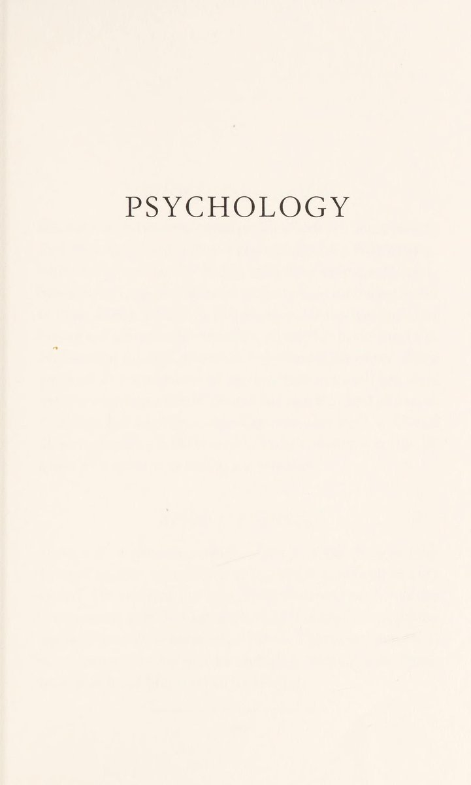
Sau ca phẫu thuật gót chân vào năm 1977, tôi đã thiết lập một quy trình khởi động nghiêm ngặt dài 7 phút mà tôi thực hiện trước mỗi buổi tập hay trận đấu: 1. Chạy nhẹ 2 đến 3 vòng quanh sân, sau đó chạy bước nhỏ tại chỗ trong 1-2 phút. 2. Thực hiện chuỗi động tác kéo giãn: Xoay tròn cổ, nhún vai, vung tay theo chiều dọc và ngang, gập lườn sang hai bên hông, ngồi xổm sâu (deep knee bends), cúi người chạm mũi chân, và dạng chân xoay vòng tròn thân trên. 3. Kết thúc bằng 10 cú bật nhảy cao liên tục hết sức tại chỗ.
Quy trình 7 phút này kích hoạt toàn bộ hệ thống cơ tim và khớp xương. Khi bước vào đánh quả bóng đầu tiên, tôi cảm thấy cơ thể mình đã ở 'số 3' và sẵn sàng sang 'số 4'. Chính nhờ thói quen khởi động chuẩn mực này, tôi đã bước vào mùa giải 1978 ở vị trí thứ 257 thế giới và kết thúc năm đó ở vị trí thứ 13 thế giới khi đã tròn 35 tuổi! Tôi khuyên bạn nên đạp xe nhẹ 5 phút và thực hiện quy trình kéo giãn này trước mỗi lần ra sân.
Nguyên bản: “Get Your Motor Running: Ashe's 7-Minute Warm-up” — Arthur Ashe's signature 7-minute neuromuscular warm-up routine that propelled his miraculous 1978 comeback from No. 257 to No. 13 at age 35.
5. Bài Tập Di Chuyển Hình Chữ 'M' (The 'M' Drill) (#WS05)
Bài tập bước chân kinh điển giúp tăng tốc độ phản xạ và sự linh hoạt trên toàn mặt sân.
Đây là bài tập bước chân tuyệt vời giúp bạn làm nóng cơ thể hoặc rèn luyện sự nhanh nhẹn: - Bắt đầu tại góc sân bên phải (giao điểm giữa vạch cuối sân và đường biên đánh đôi). - Bứt tốc chạy thẳng lên phía trước chạm tay vào lưới. - Bước trượt ngang (side shuffle) sang đường biên đơn. - Chạy lùi (backpedal) về vạch phát bóng (service line). - Trượt ngang vào tâm vạch chữ T giữa sân. - Bứt tốc lao lên chạm vào đai giữ lưới ở giữa. - Chạy lùi thẳng về vạch phát bóng. - Trượt ngang sang đường biên đơn đối diện. - Bứt tốc lao lên chạm lưới, rồi trượt ngang sang đường biên đôi ngoài cùng. - Chạy lùi toàn bộ về vạch cuối sân, rồi quay người chạy nước rút về góc xuất phát ban đầu.
Nếu bạn vẽ lại lộ trình di chuyển này trên giấy, bạn sẽ thấy nó tạo thành một chữ 'M' khổng lồ bao phủ toàn bộ nửa sân phía trước. Bài tập này mô phỏng chính xác mọi hướng di chuyển thực tế trong trận đấu.
Nguyên bản: “The 'M' Drill for Court Agility” — The classic court agility 'M' drill: combining forward sprints, side shuffles, and backpedals to condition dynamic footwork.
6. Hội Chứng Khuỷu Tay Quần Vợt (Tennis Elbow) & Cách Phục Hồi (#WS06)
Nguyên nhân gốc rễ từ cú trái tay sai kỹ thuật và các phương pháp điều trị, phòng ngừa tái phát.
Hội chứng đau khuỷu tay (tennis elbow) là một trong những chấn thương phổ biến nhất, xuất phát từ việc vận động quá tải các nhóm cơ và gân quanh khớp khuỷu.
Nguyên nhân kỹ thuật hàng đầu gây ra đau khuỷu tay là để khuỷu tay dẫn dắt cú vung vợt khi đánh trái tay (leading with the elbow) thay vì dùng sự xoay chuyển của vai và thân người. Tôi từng bị dính chấn thương này vào cuối năm 1968 ngay sau khi vô địch US Open; nó hành hạ tôi suốt gần một năm trời và buộc tôi phải điều chỉnh lại toàn bộ chuyển động phát bóng.
Nếu bạn bắt đầu cảm thấy những cơn đau nhói ở khuỷu tay: 1. Chườm đá lạnh ngay lập tức sau trận đấu để giảm viêm. 2. Massage nhẹ nhàng để kích thích lưu thông máu giúp mô cơ hồi phục. 3. Dành thời gian nghỉ ngơi cần thiết, sử dụng đai bảo vệ khuỷu tay chuyên dụng. 4. Quan trọng nhất: Hãy nhờ huấn luyện viên chỉnh sửa lại kỹ thuật vung vợt cú trái tay để triệt tiêu lực giật phản hồi vào khớp khuỷu.
Nguyên bản: “Tennis Elbow: Causes and Recovery” — Preventing and treating tennis elbow: identifying improper backhand mechanics (leading with the elbow), immediate icing, and technical stroke rehabilitation.
7. 6 Tiêu Chí Vàng Lựa Chọn Huấn Luyện Viên Quần Vợt (#WS07)
Cách tìm kiếm một người thầy tận tâm, có phương pháp sư phạm chuẩn mực và phù hợp với nhu cầu cá nhân.
Chọn đúng người thầy dạy quần vợt là bước đi quyết định thành bại của bạn. Hãy đánh giá theo 6 tiêu chuẩn sau: 1. Bằng cấp chuyên môn được công nhận: Kiểm tra chứng chỉ của các tổ chức uy tín như USPTA hoặc PTR để đảm bảo họ nắm vững phương pháp sư phạm chuẩn quốc tế. 2. Tham khảo ý kiến học viên đi trước: Tìm hiểu xem người thầy đó có thế mạnh dạy người mới bắt đầu hay nâng cao, tính cách kiên nhẫn hay nghiêm khắc. Dạy trẻ em là một nghệ thuật đặc thù đòi hỏi sự thấu hiểu tâm lý đặc biệt. 3. Môi trường và kinh nghiệm huấn luyện: Đừng chỉ nhìn vào sự sang trọng của câu lạc bộ; rất nhiều người thầy vĩ đại đã cống hiến trọn đời tại các sân quần vợt công cộng (như Jimmy Evert hay John Wilkerson). 4. Trang thiết bị hỗ trợ: Một huấn luyện viên xuất sắc thời nay nên có thiết bị quay phim phân tích hình ảnh chuyển động để giúp học viên nhìn thấy rõ sai số kỹ thuật. 5. Sự trực tiếp đứng sân: Hãy đảm bảo người thầy mà bạn đăng ký thực sự trực tiếp cầm bóng hướng dẫn bạn trên sân, chứ không phải giao phó cho các trợ lý thiếu kinh nghiệm. 6. Không đánh đồng danh thủ với thầy giỏi: Một cựu vận động viên xuất sắc chưa chắc đã là một người thầy giỏi, bởi việc tự mình thi đấu bản năng hoàn toàn khác biệt với khả năng phân tích và truyền đạt kỹ thuật cho học viên.
Nguyên bản: “Picking a Teaching Pro: 6 Essential Criteria” — Arthur Ashe's 6 essential criteria for selecting a teaching pro: certifications, reputation, youth empathy, video tools, hands-on presence, and teaching aptitude.
8. Cuốn Sổ Tay Quần Vợt: Ghi Chép Thói Quen Của Bản Thân & Đối Thủ (#WS08)
Cách xây dựng nhật ký tập luyện và hồ sơ điểm yếu của đối thủ để nâng cao tỷ lệ chiến thắng.
Một cuốn sổ tay nhỏ nên là vật dụng không thể thiếu trong túi vợt của bạn. Trong quá trình học, hãy ghi lại những điểm lưu ý chính của huấn luyện viên sau mỗi buổi tập để mang ra ôn luyện.
Khi bắt đầu tham gia các trận đấu giải phong trào, hãy dùng cuốn sổ đó để ghi chép lại hồ sơ trận đấu: - Tên đối thủ, tỷ số trận đấu. - Các lỗi hỏng điển hình của bản thân (số lỗi giao bóng kép, lỗi trả giao bóng hỏng, số điểm thua ở loạt bóng giằng co). - Hồ sơ thói quen của đối thủ: Đối thủ chơi bóng nhanh hay chậm? Khi gặp điểm bất lợi 15-30 hay 30-40, họ thường có xu hướng giao bóng vào đâu? Họ di chuyển sang bên phải hay bên trái tốt hơn? Đâu là cú đánh mà họ sợ nhất và không bao giờ dám tung ra dưới áp lực?
Trong các giải đấu phong trào, bạn thường xuyên gặp lại những đối thủ quen thuộc. Nếu bạn sở hữu một cuốn sổ tay lưu giữ toàn bộ thói quen và điểm yếu của họ trước khi bước vào sân, cơ hội chiến thắng của bạn sẽ tăng lên gấp bội!
Nguyên bản: “Write It Down: The Match and Opponent Notebook” — Keeping a tennis diary: logging practice takeaways, unforced error patterns, and scouting opponent tendencies (serving habits on pressure points, footwork limitations).
9. Tìm Kiếm Ý Kiến Thứ Hai (Get a Second Opinion) (#WS09)
Tại sao người chơi không nên bảo thủ mà cần mở rộng học hỏi từ các chuyên gia khác nhau.
Quần vợt là môn thể thao cá nhân, nhưng sự huấn luyện đa chiều mang lại lợi ích khổng lồ. Ngay cả khi bạn đã là một tay vợt thành danh, thỉnh thoảng hãy để một huấn luyện viên có uy tín khác quan sát lối chơi của bạn hoặc nhờ một người bạn ghi chép thống kê điểm số trong trận đấu.
Khi tôi còn học tại UCLA, tôi đã hoàn thiện quả giao bóng dưới sự hướng dẫn tỉ mỉ của huyền thoại Pancho Gonzalez, trong khi huấn luyện viên J.D. Morgan lại có tầm ảnh hưởng sâu sắc đến tư duy chiến thuật và tâm lý thi đấu của tôi. Đừng ngần ngại tìm kiếm sự trợ giúp chuyên biệt: Một bác sĩ đa khoa có thể gửi bạn đến gặp bác sĩ chuyên khoa tim mạch, và huấn luyện viên ruột của bạn cũng hoàn toàn có thể khuyên bạn tham vấn một chuyên gia về quả giao bóng hay cắt volley.
Nguyên bản: “Get a Second Opinion” — Seeking outside perspectives: how diverse coaching mentors (like Pancho Gonzalez and J.D. Morgan in Ashe's career) refine distinct stroke and strategic facets.
10. Máy Tính & Dữ Liệu Thống Kê Trong Quần Vợt Hiện Đại (#WS10)
Tiên đoán của Arthur Ashe về cuộc cách mạng số liệu và phân tích video trong việc ra quyết định chiến thuật.
Máy tính đã và đang tạo nên một cuộc cách mạng không thể đảo ngược trong quần vợt. Khi tôi làm đội trưởng đội tuyển Davis Cup Hoa Kỳ, chúng tôi đã tiên phong sử dụng các phần mềm máy tính (CompuTennis) để thống kê và giải mã lối chơi của các đối thủ sắp tới.
Nhờ những số liệu thống kê cứng xác thực, huấn luyện viên và vận động viên có thể xây dựng những kế hoạch chiến thuật chi tiết và thuyết phục nhất: Nếu dữ liệu chỉ ra rằng đối thủ mắc lỗi đánh hỏng ở cú volley thuận tay lên tới 60% khi bị ép bóng sâu, bạn sẽ không có một giây do dự nào khi nhắm thẳng vào góc đó ở những điểm số quyết định.
Số liệu thống kê khoa học giúp loại bỏ hoàn toàn sự do dự và mơ hồ trong việc lựa chọn đòn đánh của bạn.
Nguyên bản: “Computers and Statistics in Modern Tennis” — Ashe's visionary embracement of computer analytics and match charting in Davis Cup, transforming subjective impressions into decisive tactical execution.
11. Vì Sao Mọi Người Chơi Đều Nên Tập Đánh Đôi? (#WS11)
4 cú đánh cốt tử được hoàn thiện vượt bậc thông qua các trận thi đấu đánh đôi.
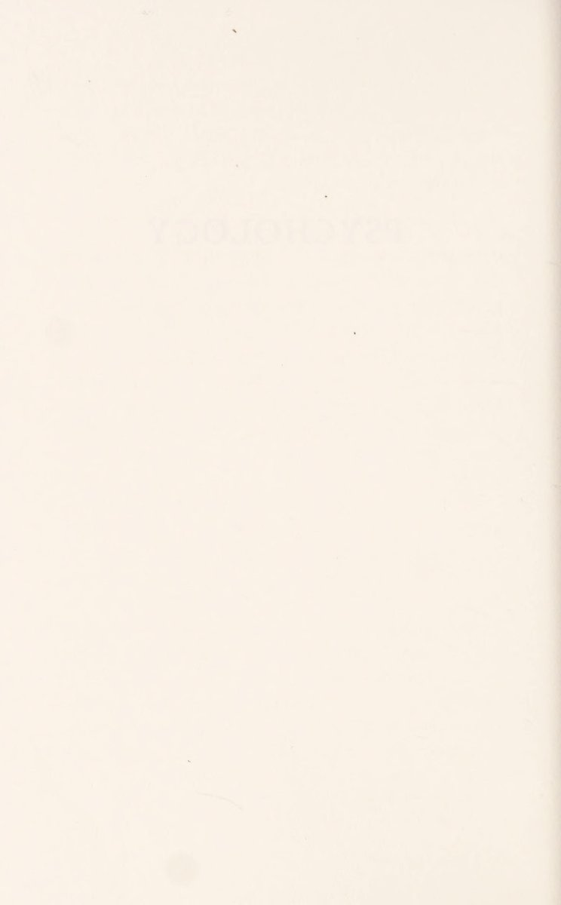
Đánh đôi ép bạn phải bao quát toàn bộ mặt sân và rèn luyện phản xạ nhanh hơn rất nhiều so với đánh đơn. Nó kích thích tư duy nhạy bén và khả năng phán đoán đường bóng sớm—những phẩm chất sẽ hỗ trợ đắc lực cho bạn khi trở lại đánh đơn.
Có 4 cú đánh quan trọng sẽ được mài giũa vượt bậc khi bạn chơi đôi thường xuyên: 1. Cú trả giao bóng (Return of serve): Bạn buộc phải nhắm vào những mục tiêu vô cùng hẹp và thấp để tránh người đứng lưới đối phương bắt bài. 2. Quả giao bóng xoáy (Spin serve): Quy tắc vàng của đánh đôi là tỷ lệ giao bóng một vào sân phải cực cao; do đó bạn buộc phải dùng các quả giao bóng xoáy cắn bóng an toàn thay vì nã bóng phẳng may rủi. 3. Cú volley đầu tiên (First volley): Bạn phải chịu áp lực bắt quả volley đầu tiên cực kỳ hiểm hóc khi lao lên lưới. 4. Cú lốp bóng (The Lob): Đây là vũ khí tối thượng để lật ngược thế cờ và đẩy đối phương ra khỏi mép lưới. Bạn sẽ lốp bóng trong một trận đánh đôi nhiều hơn cả tuần thi đấu đánh đơn gộp lại!
Nguyên bản: “Why Play Doubles?” — Why doubles accelerates tennis development: sharpening sharp-target returns, high-percentage spin serves, first volleys under duress, and strategic lobs.
12. Chiến Thuật Lựa Chọn Bên Nhận Giao Bóng Trong Đánh Đôi (#WS12)
Cách bố trí vị trí ô đều (Deuce court) và ô lợi điểm (Advantage court) dựa trên tính khí và kỹ thuật của từng tay vợt.
Việc quyết định ai đứng bên ô Deuce (bên phải) và ai đứng bên ô Ad (bên trái) khi đỡ giao bóng là một nghệ thuật chiến thuật:
- Ô Deuce (ô đều): Nên dành cho tay vợt có lối chơi ổn định, chắc chắn và tâm lý vững vàng. Nhiệm vụ của người đứng ô này là đưa bóng vào sân một cách an toàn nhất có thể ở những điểm số đầu tiên (0-0, 15-15, 30-30). Đừng tìm kiếm cú ăn điểm mạo hiểm ở đây; hãy bắt đối thủ phải đánh bóng. - Ô Ad (ô lợi điểm): Dành cho tay vợt bùng nổ, có khả năng tung ra những cú trả giao bóng sát thủ và đè bẹp đối thủ ở những điểm break point quyết định. - Người có cú thuận tay mạnh hơn: Nên đứng ở bên ô Ad (nếu thuận tay phải) để cú thuận tay của họ nằm ở khu vực giữa sân—nơi phần lớn các đường bóng trong đánh đôi hội tụ về. - Tay vợt thuận tay trái (Lefty): Đặt người thuận tay trái ở ô Deuce sẽ giúp họ đưa cú thuận tay sở trường vào chính giữa sân, tạo nên bức tường thành phòng thủ vững chắc.
Nguyên bản: “Choosing Receiving Sides in Doubles: Deuce vs. Ad” — Assigning doubles receiving courts: steady retriever on the deuce side, bold shotmaker on the ad side, and positioning forehands down the center T.
13. 7 Lời Khuyên Chiến Thuật Đánh Đôi & Phối Hợp Đồng Đội (#WS13)
7 nguyên tắc thực chiến vàng để trở thành một cặp đôi bất khả chiến bại trên sân.
1. Khắc cốt ghi tâm: Luôn đưa quả giao bóng một vào sân: Đừng bao giờ trao cho đối thủ cơ hội bước vào sân tấn công phủ đầu quả giao bóng hai yếu ớt của bạn. 2. Chiếm lĩnh mép lưới: Vị trí thống trị tối cao trong đánh đôi là trên lưới. Không một cặp đôi vĩ đại nào có thể vô địch nhiều giải đấu nếu chỉ bám chặt lấy vạch cuối sân. Hãy lao lên và kết liễu điểm số bằng những cú volley dứt khoát. 3. Cú đập smash là thước đo bản lĩnh: Nếu bạn smash hỏng một quả, bạn sẽ mất tự tin và đối thủ sẽ liên tục lốp bóng qua đầu bạn. Hãy giơ vợt lên sớm để chuẩn bị. 4. Độ chuẩn xác quan trọng hơn lực đánh: Đừng cố đập bóng bão táp; hãy dùng 2 đến 3 đường bóng khéo léo để chia cắt hai đối thủ, rồi dứt điểm vào khoảng trống giữa họ. 5. Đánh vào giữa sân khi do dự (Down the middle): Khi bạn không biết đánh đi đâu, hãy đánh sâu vào giữa sân. Nhưng thỉnh thoảng hãy tung một cú trả bóng dọc dây để răn đe người đứng lưới đối phương. 6. Giao tiếp liên tục và tin tưởng lẫn nhau: Luôn hô to 'Của tôi!' khi bóng bay vào giữa, khích lệ bạn đánh khi họ mắc sai lầm, và dùng tín hiệu tay sau lưng trước mỗi pha giao bóng. 7. Đa dạng hóa đội hình thi đấu: Thử nghiệm đội hình Úc (Australian formation) hoặc đội hình chữ I (I-formation) để làm rối loạn tầm nhìn và bẻ gãy nhịp điệu trả giao bóng của đối thủ.
Nguyên bản: “Seven Suggestions on Doubles Tactics and Teamwork” — Arthur Ashe's 7 pillars of doubles mastery: first-serve consistency, net dominance, confident smashes, placement over power, hitting down the middle, chemistry, and unorthodox formations.
14. Khi Nào Cả Hai Người Nên Lùi Sâu Cuối Sân Trong Đánh Đôi? (#WS14)
Nghệ thuật lùi bước để đảo ngược thế trận khi rơi vào thế bị đối phương áp đảo trên lưới.
Thông thường, việc cả hai người cùng lùi sâu về vạch cuối sân khi đối phương đang cầm giao bóng bị xem là thế trận phòng thủ bị động. Tuy nhiên, có những thời điểm chiến thuật mà việc cả hai cùng lùi lại (both back) là nước cờ cực kỳ thông minh:
1. Khi người trả giao bóng mất tự tin: Nếu bạn hoặc bạn đánh của bạn liên tục bị người đứng lưới đối phương vồ bóng bắt volley cắm thẳng vào người, việc lùi lại sẽ bảo vệ đồng đội khỏi những cú đạn bắn rát mặt. 2. Chuẩn bị cho một chuỗi cú lốp bóng phòng thủ: Khi cả hai đứng cuối sân, bạn có không gian và thời gian tối đa để lốp bóng bổng đẩy hai đối thủ ra khỏi lưới. 3. Làm rối loạn tâm lý của người giao bóng đối phương: Khi bất ngờ thấy cả hai đối thủ đều lùi sâu, người giao bóng sẽ cảm thấy mục tiêu sân trống bị thay đổi, dẫn đến tâm lý cố giao bóng mạnh hơn bình thường và tự mắc lỗi giao bóng hỏng!
Nguyên bản: “When to Stay Back in Doubles” — Strategic merits of the 'both back' receiving formation in doubles: neutralizing aggressive poachers, opening lob angles, and inducing opponent serving errors.
15. Nghệ Thuật Giữ Gìn Đội Đôi & Giải Quyết Bất Đồng (#WS15)
Làm thế nào để duy trì sự hòa hợp, tôn trọng lẫn nhau và tránh những cuộc cãi vã làm tan vỡ cặp đôi.
Đánh đôi không còn là chế độ độc tài của đánh đơn mà là một ủy ban gồm hai người cùng ra quyết định. Để duy trì một cặp đôi bền vững, sự tương thích về mặt tính cách là yếu tố sống còn.
Dấu hiệu báo trước đầu tiên của sự rạn nứt là thái độ bực bội, cau có trước những sai lầm của bạn đánh. Tuyệt đối không bao giờ được tranh cãi hay chỉ trích đồng đội ngay trên sân thi đấu. Hành vi đó không chỉ đào sâu thêm vết rạn nứt giữa hai người, mà còn khiến những người chơi khác trong câu lạc bộ xa lánh bạn vì họ sợ sẽ bị bạn làm bẽ mặt nếu đánh cặp cùng.
Nếu đội của bạn bắt đầu thua trận liên tiếp, hãy thử hoán đổi bên đỡ giao bóng giữa hai người trước khi nghĩ đến chuyện chia tay. Các cặp đôi vĩ đại như Stan Smith & Bob Lutz hay Navratilova & Shriver đôi khi cũng đổi bên để tìm lại nguồn sinh khí mới cho lối chơi của mình.
Nguyên bản: “Partnership Dynamics in Doubles: Resolving Conflict” — Partnership psychology in doubles: eliminating on-court resentment, embracing complementary roles, and swapping receiving sides to revitalize team chemistry.
16. Đánh Đôi Nam Nữ (Mixed Doubles): Nguyên Tắc Để Bảo Vệ Tình Cảm (#WS16)
Cách chơi đôi nam nữ văn minh, tôn trọng bạn đời và loại bỏ thói gia trưởng trên sân đấu.
Đánh đôi nam nữ với người bạn đời hoặc người yêu của mình là một thử thách tâm lý vô cùng nhạy cảm. Cả hai bắt buộc phải đặt ra những nguyên tắc bất di bất dịch trước khi bước vào sân: Tuyệt đối không một ai được phép nổi giận hay trách móc khi người kia đánh hỏng!
Trong nhiều trận đánh đôi nam nữ phong trào, chúng ta thường thấy hình ảnh đáng buồn: Người phụ nữ đứng nép mình rụt rè ở sát mép đường biên, trong khi người đàn ông cố tỏ vẻ cơ bắp, chạy lăng xăng khắp sân để giành giật mọi quả bóng. Lối chơi đó không bao giờ có thể mang lại chiến thắng trước những cặp đôi thực sự ăn ý, mà chỉ chuốc lấy sự ức chế và làm tổn thương mối quan hệ ngoài đời thực. Hãy tôn trọng bạn chơi, phân chia phạm vi trách nhiệm rõ ràng và xem trận đấu như một trải nghiệm chia sẻ niềm vui đích thực.
Nguyên bản: “Mixed Doubles: Rules to Protect Relationships” — Navigating mixed doubles with spouses/partners: establishing strict zero-blame ground rules and eliminating condescending macho ball-hogging.
17. Quần Vợt Đồng Đội & Ngọn Lửa Davis Cup Thiêng Liêng (#WS17)
Sức mạnh phi thường của tinh thần đồng đội và lý do Davis Cup luôn tạo ra những cuộc lật đổ không tưởng.
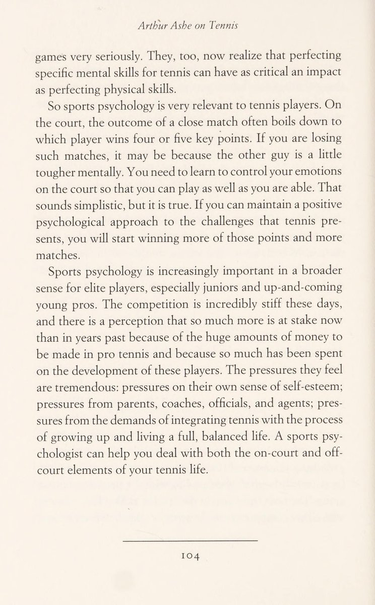
Quần vợt vốn là môn thể thao đơn độc, nhưng thi đấu cho một tập thể mang lại nguồn cảm hứng mãnh liệt chưa từng có. Trải nghiệm đồng đội tuyệt đỉnh nhất trong cuộc đời tôi chính là Davis Cup—trên cả tư cách vận động viên và sau này là đội trưởng tuyển Mỹ.
Chỉ tại Davis Cup, bạn mới thấy các ngôi sao quần vợt vốn luôn là đối thủ của nhau lại đứng sát cánh bên nhau, gào thét cổ vũ cuồng nhiệt cho từng đường bóng của đồng đội. Khi khoác lên mình màu cờ sắc áo của tổ quốc, các vận động viên được tiếp thêm một nguồn năng lượng siêu nhiên. Họ được xem như những người anh hùng dân tộc khi chiến thắng. Đó chính là lý do đấu trường Davis Cup luôn sản sinh ra những cuộc lật đổ chấn động địa cầu mà bạn hầu như không bao giờ được chứng kiến ở các giải đấu cá nhân thông thường.
Nguyên bản: “Team Tennis and the Davis Cup Flame” — The electrifying alchemy of team tennis and Davis Cup: how national pride and mutual camaraderie elevate players far beyond individual capabilities.
18. Quần Vợt Cho Lứa Tuổi Lão Tướng: Trí Tuệ Thắng Cơ Bắp (#WS18)
Cách các tay vợt lớn tuổi tận dụng kỹ thuật bỏ nhỏ, lốp bóng và công nghệ vợt trợ lực để thi đấu đỉnh cao.
Lực lượng người chơi phát triển nhanh nhất trong thế giới quần vợt hiện nay chính là các tay vợt cao niên (seniors). Quần vợt là môn thể thao tuyệt vời cho người lớn tuổi bởi vì bạn hoàn toàn có thể dùng trí óc để bù đắp cho sự suy giảm của cơ bắp.
Đó là lý do những cú bỏ nhỏ tinh tế và những cú lốp bóng chuẩn xác trở thành những vũ khí sát thủ của các tay vợt lão tướng. Ngoài ra, sự ra đời của các dòng vợt mặt lớn (oversize) và khung dày trợ lực đã mang lại cho người chơi lớn tuổi một nguồn sinh lực mới, giúp họ tạo ra lực bóng mạnh mẽ mà không tốn quá nhiều sức lực. Về mặt chiến thuật, người lớn tuổi nên dồn toàn lực tấn công vào hai điểm số đầu tiên khi đối thủ cầm giao bóng (0-15 hoặc 0-30) để tìm kiếm break point; nhưng nếu bị dẫn quá sâu, hãy buông game đó để bảo tồn thể lực cho game giao bóng tiếp theo của mình.
Nguyên bản: “Senior Tennis: Brains Over Brawn” — Senior tennis strategies: outsmarting younger power with deceptive drop shots, deep lobs, oversize frames, and conserving energy on receiving games.
19. Cẩm Nang Chuẩn Bị Toàn Diện Cho Một Giải Đấu Xa Nhà (#WS19)
Quy trình chuẩn bị dụng cụ, chế độ dinh dưỡng, khảo sát mặt sân và tâm lý đối đầu với hạt giống.
Thi đấu một giải đấu lớn xa nhà đòi hỏi sự chuẩn bị chuyên nghiệp đến từng chi tiết: - Khảo sát sân bãi và bóng thi đấu trước: Liên hệ ban tổ chức để biết chính xác loại mặt sân và nhãn hiệu bóng sẽ sử dụng. Hãy tập luyện trước ở nhà với đúng loại bóng đó và cố gắng đến địa điểm thi đấu trước một ngày để làm quen sân. - Trang bị đầy đủ dụng cụ: Mang theo ít nhất 2 đến 3 cây vợt cùng loại, nhiều bộ dây dự phòng và tối thiểu 2 đôi giày quần vợt đã được đi thuần chân (broken-in shoes). Đừng bao giờ mang một đôi giày mới toanh đi thi đấu xa vì bạn sẽ bị phồng rộp chân ngay giữa giải. - Dinh dưỡng thi đấu nhẹ nhàng: Trước trận đấu buổi sáng, hãy dậy sớm tập nhẹ 45 phút, ăn sáng thanh đạm với nước hoa quả, ngũ cốc, bánh mì nướng và chuối; tuyệt đối tránh các bữa ăn dầu mỡ nặng bụng. - Tâm lý đối đầu với hạt giống: Đừng bao giờ nghĩ rằng bạn phải thi đấu xuất thần không tưởng mới đánh bại được một hạt giống. Lịch sử quần vợt đầy rẫy những cú sốc vòng ngoài: Hạt giống thường tự thua vì mắc nhiều sai lầm hơn bình thường trước một đối thủ thi đấu kiên định và bền bỉ. Hãy giữ bóng trong sân và để cho họ tự mắc lỗi!
Nguyên bản: “How to Play a Tournament Away from Home” — Comprehensive away-tournament checklist: ball and surface scouting, broken-in shoes, backup rackets, light nutrition, and exploiting seeded opponents' vulnerability to errors.
20. Nghệ Thuật Xem Quần Vợt Để Nâng Cao Trình Độ Cá Nhân (#WS20)
Cách theo dõi bảng nhánh đấu, nhận diện các cặp đối đầu kỵ rơ và học hỏi kỹ năng thực chiến.
Để học hỏi được nhiều nhất khi theo dõi một giải đấu Grand Slam trên truyền hình hoặc trực tiếp, việc đầu tiên bạn cần làm là in ra một bản vẽ nhánh đấu (draw sheet) đầy đủ 128 tay vợt và cập nhật kết quả từng ngày.
- Ở các vòng đầu tiên, hãy tập trung quan sát các ngôi sao trẻ triển vọng: Nhìn vào bộ chân di chuyển và cú trả giao bóng của họ; nếu họ có đôi chân nhanh và trả giao bóng ổn định, họ sẽ tiến rất xa. - Ở các vòng giữa, hãy tìm kiếm những bất ngờ (upsets) dựa trên sự không tương thích giữa hạt giống và mặt sân (ví dụ một chuyên gia sân đất nện thi đấu trên sân cỏ Wimbledon). - Khi trận đấu kết thúc, hãy cầm vợt và ra sân đánh ngay lập tức! Nguồn cảm hứng hưng phấn và những hình ảnh trực quan tuyệt vời mà bạn vừa theo dõi sẽ ngấm vào cơ bắp, giúp bạn chơi một trận đấu thăng hoa bất ngờ.
Nguyên bản: “How to Watch a Tournament for Tactical Insights” — Maximizing instructional value from watching pro tennis: tracking draw sheets, evaluating young footwork and returns, spotting surface mismatches, and playing immediately afterward.
21. Góc Khuất Truyền Hình Trực Tiếp & Bình Luận Viên Quần Vợt (#WS21)
Trải nghiệm của Arthur Ashe tại các đài truyền hình ABC, HBO và thách thức chọn lọc dữ liệu thống kê liên quan nhất.
Truyền hình đã đóng góp công lao to lớn đưa quần vợt đến với hàng trăm triệu khán giả trên toàn thế giới. Nhưng tất cả chúng tôi—những cựu danh thủ tham gia bình luận như Billie Jean King, John McEnroe hay tôi—thường xuyên bị người xem phàn nàn là nói quá nhiều!
Các nhà sản xuất truyền hình Mỹ luôn sợ những khoảng lặng âm thanh và liên tục thúc giục bình luận viên phải giải thích các tình huống. Hơn nữa, với hệ thống máy tính hiện đại như IBM Matchfacts cung cấp hàng trăm thông số thống kê tức thì chỉ bằng vài phím bấm, cám dỗ đưa ra quá nhiều con số là rất lớn.
Đối với tôi, nhiệm vụ quan trọng nhất của một bình luận viên chuyên môn không phải là đọc vanh vách các số liệu vô hồn, mà là đặt ra câu hỏi cốt lõi: 'Con số thống kê nào thực sự là chìa khóa quyết định kết quả của trận đấu này?' và kết hợp nó với trực giác nhạy bén của một người từng đổ mồ hôi trên sân đấu đỉnh cao.
Nguyên bản: “Television Talk and Tennis Commentary” — Behind the scenes of television tennis broadcasting: resisting producer pressure for non-stop chatter and distilling mountains of computer data into decisive match-turning insights.
22. Vợt Khung Dày (Widebody Racquets): Lợi Ích Trợ Lực Và Cảnh Báo Mất Kiểm Soát (#WS22)
Tại sao người chơi phong trào cần vợt trợ lực nhưng các tay vợt chuyên nghiệp hàng đầu lại trung thành với khung vợt truyền thống.
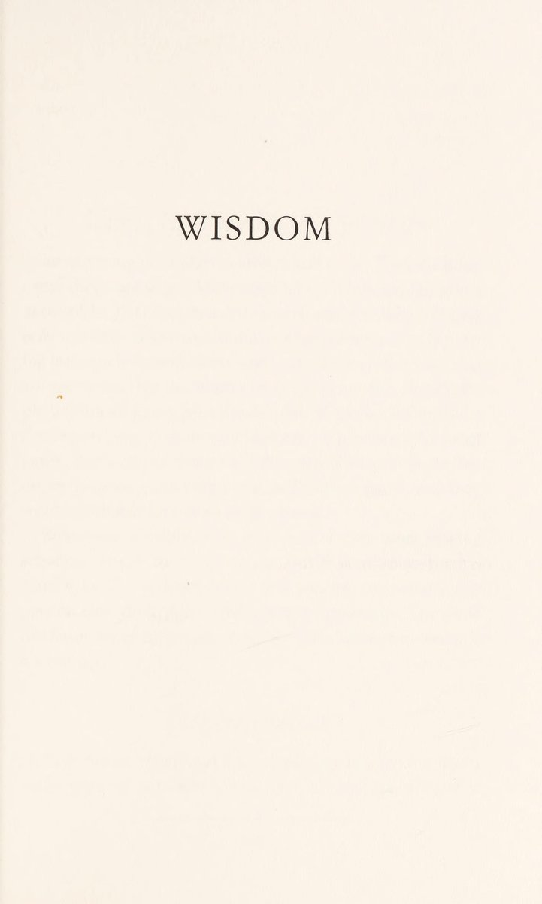
Cây vợt khung dày (widebody)—với bề dày thành vợt lớn hơn bình thường—là một bước đột phá công nghệ giúp tạo ra lực đánh tự nhiên rất mạnh. Đối với người chơi phong trào, vợt khung dày giúp cú bắt volley trở nên cực kỳ dễ dàng: Bạn chỉ cần đưa mặt vợt ra chặn bóng thật chắc tay và cây vợt sẽ tự làm nốt phần việc còn lại. Nó cũng hỗ trợ rất tốt cho cú trái tay bằng cách bù đắp lực cho cổ tay yếu.
Tuy nhiên, con dao hai lưỡi của vợt khung dày là sự mất kiểm soát. Nếu bạn không có cảm giác bóng tốt, bạn sẽ giống như đang cầm một khẩu đại bác mất lái trên tay. Bạn cần thực hiện cú vung vợt mượt mà và cô đọng hơn để kiểm soát sức mạnh đó.
Đó chính là lý do bạn hầu như không thấy các tay vợt nam hàng đầu thế giới như Pete Sampras, Stefan Edberg hay Boris Becker sử dụng vợt khung dày. Họ không cần thêm lực; họ cần sự kiểm soát chính xác từng milimét để thực hiện những cú vung vợt dài toàn diện và cuộn bóng topspin cực mạnh mà không sợ bóng bị văng ra ngoài hàng rào.
Nguyên bản: “Widebody Racquets: Power vs. Control” — Widebody racquets provide effortless power and forgiving volleys for club players, but elite pros demand standard-beam control for full aggressive swings.
23. Bí Quyết Căng Dây Vợt Chuẩn Xác Cho Từng Điều Kiện Thời Tiết (#WS23)
Quy tắc căng dây theo thời tiết, độ nảy mặt lưới và tần suất thay dây định kỳ cho người chơi.
Các tay vợt chuyên nghiệp luôn điều chỉnh độ căng của dây vợt (string tension) tương ứng với điều kiện khí hậu: - Khi thi đấu giữa trưa nắng gắt, khô ráo và bóng bay rất nhanh (như ở Arizona), họ sẽ căng dây chặt hơn vài cân để tăng cường độ kiểm soát. - Khi thi đấu trong một buổi chiều London ẩm ướt, se lạnh tại Wimbledon khiến bóng nặng và bay chậm, họ sẽ hạ độ căng xuống để tăng trợ lực.
Quy tắc cơ bản cần ghi nhớ là: Căng dây chùng hơn để có thêm lực đánh (nhờ hiệu ứng bạt nhún trampoline), và căng dây chặt hơn để có thêm độ kiểm soát. Nếu bạn thi đấu thường xuyên, quy tắc vàng là: Một năm bạn nên đan lại dây vợt số lần bằng đúng số buổi bạn ra sân trong một tuần (ví dụ chơi 3 buổi/tuần thì nên thay dây định kỳ ít nhất 3 lần/năm). Dù dây chưa đứt, chúng cũng đã bị mất dần độ đàn hồi và sự ổn định theo thời gian.
Nguyên bản: “Strings: Tension and Weather Adaptation” — String tension dynamics: loose for trampoline power, tight for control, adjusting for climate/humidity, and the formula for annual restringing frequency.
24. Lựa Chọn Giày Quần Vợt: Bảo Vệ Cơ Thể Khỏi Chấn Thương Từ Đôi Chân (#WS24)
Tầm quan trọng sống còn của một đôi giày vừa vặn và đế lót chỉnh hình trong việc ngăn ngừa chấn thương khớp gối và lưng.
Cùng với cây vợt, đôi giày quần vợt là khoản đầu tư quan trọng bậc nhất mà bạn phải thực hiện. Công nghệ giày hiện đại rất phong phú, nhưng điều cốt tử trên hết là bạn phải chọn được đôi giày hoàn toàn vừa vặn với phom bàn chân của mình.
Nếu bạn mang một đôi giày đã mòn vẹt đế hoặc không vừa vặn, hậu quả không chỉ dừng lại ở bàn chân mà sẽ gây ra chuỗi chấn thương nghiêm trọng cho toàn bộ cơ thể: Lật cổ chân, thoái hóa khớp gối, đau khớp háng và thoái hóa cột sống thắt lưng!
Một người chơi quần vợt nghiêm túc nên hiểu rằng chi phí bảo vệ đôi chân chính là chi phí để duy trì tuổi thọ chơi thể thao suốt đời của mình. Nếu có điều kiện, hãy tới các trung tâm y học thể thao để đo khuôn chân và làm đế lót chỉnh hình (orthotics) chuyên dụng.
Nguyên bản: “Tennis Shoes: Protecting Your Body from Ground Up” — The vital importance of proper tennis footwear: how worn-out or ill-fitting shoes cause kinetic-chain damage to ankles, knees, hips, and lower back.
25. Bên Trong Chiếc Túi Khổng Lồ Của Các Vận Động Viên Chuyên Nghiệp (#WS25)
Khám phá thế giới thu nhỏ bên trong chiếc túi thi đấu hiện đại và góc nhìn thương mại phía sau.
Chiếc túi vợt khổng lồ của một tay vợt chuyên nghiệp ngày nay là một thế giới thu nhỏ đầy kinh ngạc: Có tới hàng tá cây vợt cùng loại, cuộn cước dự phòng, băng quấn cán vợt, chì dán cân bằng đầu vợt, mực in logo mặt vợt, quần áo thi đấu, giày sơ cua, băng đô thấm mồ hôi, kem chống nắng, băng dán co giãn, chuối, thanh năng lượng, đồ uống điện giải, dây nhảy và cả những cuốn sổ tay chiến thuật.
Hình ảnh này khác xa hoàn toàn thời của huyền thoại Bill Tilden—người bước ra sân trong chiếc áo len cardigan dày cộp và chỉ mang theo vỏn vẹn 4 cây vợt trần trụi bằng gỗ không có bao đựng!
Đằng sau những chiếc túi đồ sộ ấy cũng là cả một nghệ thuật thương mại: Các hãng dụng cụ tài trợ yêu cầu túi vợt phải được thiết kế đứng thẳng và đặt trên sân theo một góc nghiêng chính xác, sao cho khi ống kính truyền hình quay cận cảnh tay vợt trong lúc đổi sân, logo thương hiệu sẽ hướng thẳng vào mắt hàng triệu khán giả xem đài.
Nguyên bản: “Inside the Pros' Big Duffel Bags” — A fascinating inventory of modern pro tennis bags compared to Bill Tilden's minimalist era, plus the commercial branding strategy behind equipment bag display.
26. Cầm Vợt Du Đấu (Have Racquet, Will Travel): Lời Khuyên Khi Đi Xa (#WS26)
Kinh nghiệm du lịch kết hợp chơi quần vợt và quy tắc bất di bất dịch về hành lý xách tay của Arthur Ashe.
Nếu bạn là một người đam mê quần vợt, hãy luôn mang theo cây vợt của mình trong mỗi chuyến công tác hay du lịch. Gần như ở bất kỳ thành phố nào bạn đến cũng có những cụm sân quần vợt tuyệt vời sẵn sàng chào đón bạn.
Trong suốt sự nghiệp thi đấu đỉnh cao của mình, tôi chưa bao giờ gửi vợt theo hành lý ký gửi khi đi máy bay. Tôi không bao giờ mạo hiểm để xảy ra nguy cơ thất lạc những cây vợt sinh tử của mình, vì vậy tôi luôn xách tay chúng lên khoang hành khách máy bay—và tôi khuyên bạn cũng nên làm điều tương tự.
Ngoài ra, để an toàn tuyệt đối, hãy luôn chuẩn bị sẵn ít nhất một bộ trang phục thi đấu toàn màu trắng trong vali, bởi vì bạn không thể biết trước liệu câu lạc bộ địa phương nơi bạn ghé thăm có áp dụng quy định trang phục trắng nghiêm ngặt hay không!
Nguyên bản: “Have Racquet, Will Travel: Tips for Traveling Players” — Travel tips for passionate players: always carry rackets onto airplanes as cabin luggage and pack all-white tennis clothes for unexpected club dress codes.
27. Lời Khuyên Mâu Thuẫn Từ Nhiều Huấn Luyện Viên & Cách Xử Lý (#WS27)
Làm thế nào để tiếp thu những quan điểm kỹ thuật trái ngược mà không bị loạn nhịp.
Khi bạn tham gia các lớp học quần vợt ngắn hạn trong kỳ nghỉ dưỡng, chuyện một huấn luyện viên mới đưa ra lời khuyên trái ngược hoàn toàn với những gì người thầy ở nhà đã dạy bạn là điều không thể tránh khỏi.
Đừng quá hoang mang hay tranh cãi gay gắt. Mỗi người thầy đều có một lăng kính và triết lý tiếp cận riêng biệt. Hãy đón nhận lời khuyên mới với thái độ cởi mở: Thử nghiệm nó xem liệu nó có mang lại cảm giác tiếp xúc bóng mượt mà hơn hay lực đánh tốt hơn cho bạn hay không. Nếu có, hãy tích hợp nó vào kho vũ khí của mình; nếu không phù hợp, hãy trân trọng cảm ơn và nhẹ nhàng quay trở lại với nền tảng quen thuộc của người thầy ở nhà.
Nguyên bản: “Conflicting Advice from Different Pros” — Handling conflicting technical instruction: embrace alternative perspectives with an open mind, test for personal comfort, and avoid dogmatic frustration.
28. Trại Huấn Luyện Quần Vợt (Tennis Camps): Khi Nào Nên Tham Gia? (#WS28)
Những kỳ nghỉ ngập tràn quần vợt, đối tượng phù hợp và 3 mục tiêu vàng khi tham gia trại hè.
Tham gia một trại huấn luyện quần vợt tập trung là một ý tưởng tuyệt vời một khi bạn đã vượt qua trình độ mới bắt đầu. Ở đó, bạn sẽ được đánh bóng với mật độ cao hơn bất kỳ khoảng thời gian nào trong đời, được gặp gỡ nhiều người bạn mới và làm quen với muôn vàn phong cách thi đấu khác nhau.
Tuy nhiên, nếu bạn chưa từng cầm vợt đánh bóng bao giờ, lời khuyên chân thành của tôi là đừng vội tham gia các trại huấn luyện chuyên sâu; bạn sẽ rất dễ bị quá tải và lạc lõng.
Khi tham gia một trại huấn luyện quần vợt, hãy đặt ra cho mình 3 mục tiêu rõ ràng: 1. Học và làm chủ ít nhất một cú đánh mới. 2. Tập trung khắc phục điểm yếu lớn nhất trong lối chơi hiện tại của bạn. 3. Kết giao thêm những người bạn tri kỷ trọn đời cùng chung niềm đam mê quần vợt.
Nguyên bản: “Tennis Camps: Finding the Right Immersion” — Maximizing tennis camps: requiring an intermediate foundation, avoiding beginner overwhelm, and focusing on three core goals: one new stroke, one fixed flaw, and lifelong friends.
29. Lời Khuyên Vàng Dành Cho Cha Mẹ Của Các Tay Vợt Trẻ (#WS29)
Cách nuôi dạy con cái qua môn thể thao, bài học chống gian lận và kỷ niệm khó quên với cha của Arthur Ashe.
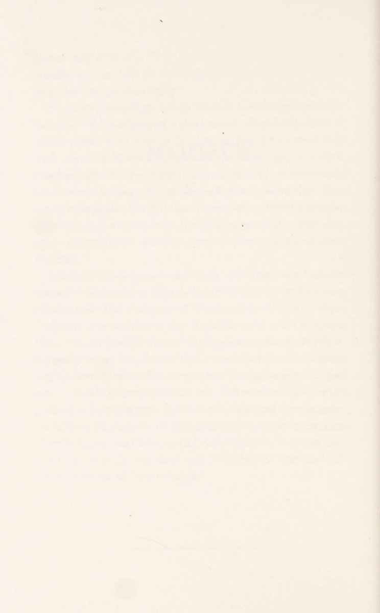
Cụm từ 'phụ huynh quần vợt' (tennis parents) thường bị gán với những định kiến tiêu cực: Đánh giá quá cao tài năng của con mình, luôn cho rằng con mình bị đối xử bất công, coi một trận đấu phong trào của trẻ nhỏ như thể trận chung kết World Cup, và nhạy cảm thái quá trước mọi ánh nhìn.
Dưới đây là những nguyên tắc vàng để bạn trở thành một chỗ dựa tuyệt vời cho con: 1. Ủng hộ nhưng không tạo áp lực: Sự có mặt của cha mẹ để động viên tinh thần là điều tuyệt vời, miễn là bạn không biến nó thành gánh nặng tâm lý nghẹt thở cho con. 2. Xử phạt nghiêm khắc các hành vi phi thể thao: Đặt ra quy tắc rõ ràng trước khi con bước vào sân. Nếu con ném vợt hay chửi thề, hình phạt phải được thực thi ngay lập tức. Khi tôi còn nhỏ, tôi từng ném cây vợt trên sân công viên Brookfield. Bố tôi—vốn đang ở trong ngôi nhà liền kề sân đấu—đã lập tức bước thẳng ra sân đưa tôi về nhà. Tôi bị cấm thi đấu một thời gian dài, và từ ngày hôm đó, tôi không bao giờ dám ném vợt thêm một lần nào nữa! 3. Tuyệt đối không dung túng hành vi gian lận: Khi hai đứa trẻ 10 tuổi thi đấu không có trọng tài, cái được dạy dỗ và đặt cược lớn hơn rất nhiều so với chuyện thắng thua: Đó là việc hình thành nhân cách và giá trị đạo đức sống. Một đứa trẻ thắng trận nhờ gian lận bắt bóng ngoài sân đáng thương hơn rất nhiều so với đứa trẻ tuân thủ đạo đức chấp nhận thua trận! 4. Không bao giờ trách mắng con nơi công cộng: Thắng hay thua một trận quần vợt là điều vô cùng nhỏ bé so với toàn bộ hành trình trưởng thành của một con người.
Nguyên bản: “Tennis Parents: Supporting Without Destroying” — Ashe's profound blueprint for tennis parents: unconditional support, swift discipline for tantrums (sharing his father's punishment), zero tolerance for cheating, and nurturing character above winning.
30. Cân Bằng Giữa Quần Vợt Và Học Vấn: Nước Cờ Xác Suất Cao Nhất (#WS30)
Tại sao việc không bỏ bê học văn hóa là quyết định sáng suốt và khôn ngoan nhất cho tương lai của mọi vận động viên.
Mary Joe Fernandez đã kiên định theo học hết trường trung học phổ thông và tốt nghiệp loại xuất sắc cùng bạn bè cùng trang lứa ngay trong giai đoạn cô đang thi đấu tại đấu trường chuyên nghiệp và đứng trong Top 10 thế giới. Đó là một tấm gương tuyệt vời đáng được biểu dương. Việc học văn hóa không hề làm suy giảm trình độ quần vợt của cô; trái lại, nó giúp cô duy trì sự cân bằng tinh thần và tích lũy sự trưởng thành chín chắn.
Bạn phải luôn nhìn vào bức tranh dài hạn của cả cuộc đời. Đừng bao giờ hỏi một câu hỏi quá thiển cận rằng: 'Việc tập trung vào sách vở liệu có làm chậm lại sự nghiệp quần vợt trẻ của tôi không?' Câu hỏi thực sự phải là: 'Việc theo đuổi học vấn sẽ tác động tích cực như thế nào đến toàn bộ phần đời còn lại của tôi, mở ra những chân trời cơ hội nào khác nếu tôi thi đấu chuyên nghiệp hoặc không thi đấu chuyên nghiệp?'
Hãy nhớ rằng: Đảm bảo việc học hành không bị sao nhãng chính là một nước cờ có xác suất thành công cao nhất (the highest percentage play) trong toàn bộ cuộc đời bạn!
Nguyên bản: “Prodigies and School: The Ultimate High-Percentage Play” — Education as the ultimate high-percentage play: Mary Joe Fernandez's example, balancing athletic ambition with intellectual maturity, and preparing for life beyond tennis.